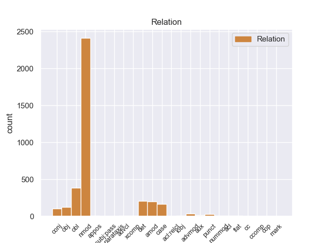
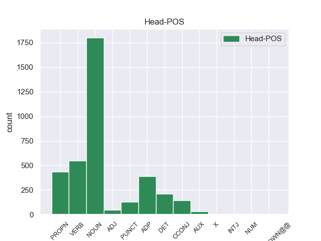
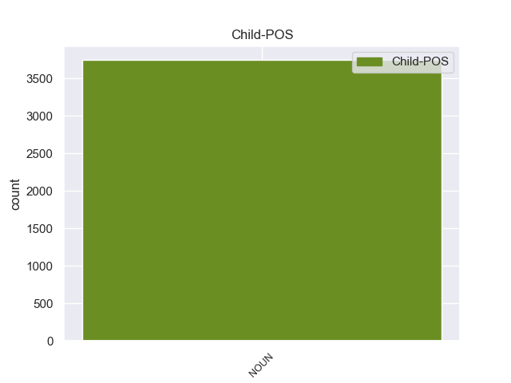

Distribution of features within this leaf



Agreement Rules sorted by frequency.
- When the dependent token is the nominal modifier(nmod) of the head token, and the head token is NOUN and the dependent token is NOUN.
1 En _ _ _ _ 0 _ _ _
2 1991 _ _ _ _ 0 _ _ _
3 , _ _ _ _ 0 _ _ _
4 como _ _ _ _ 0 _ _ _
5 ya _ _ _ _ 0 _ _ _
6 está _ _ _ _ 0 _ _ _
7 indicado _ _ _ _ 0 _ _ _
8 en _ _ _ _ 0 _ _ _
9 el _ _ _ _ 0 _ _ _
10 párrafo _ _ _ _ 0 _ _ _
11 anterior _ _ _ _ 0 _ _ _
12 , _ _ _ _ 0 _ _ _
13 se _ _ _ _ 0 _ _ _
14 creó _ _ _ _ 0 _ _ _
15 un _ _ _ _ 0 _ _ _
16 equipo equipo NOUN _ Gender=Masc|Number=Sing 0 _ _ _
17 ad _ _ _ _ 0 _ _ _
18 hoc _ _ _ _ 0 _ _ _
19 para _ _ _ _ 0 _ _ _
20 averiguar _ _ _ _ 0 _ _ _
21 como _ _ _ _ 0 _ _ _
22 se _ _ _ _ 0 _ _ _
23 podía _ _ _ _ 0 _ _ _
24 desarrollar _ _ _ _ 0 _ _ _
25 el _ _ _ _ 0 _ _ _
26 Dialogo dialogo NOUN _ Gender=Masc|Number=Sing 16 nmod _ _
27 Social _ _ _ _ 0 _ _ _
28 , _ _ _ _ 0 _ _ _
29 este _ _ _ _ 0 _ _ _
30 equipo _ _ _ _ 0 _ _ _
31 estaba _ _ _ _ 0 _ _ _
32 formado _ _ _ _ 0 _ _ _
33 por _ _ _ _ 0 _ _ _
34 representantes _ _ _ _ 0 _ _ _
35 de _ _ _ _ 0 _ _ _
36 todas _ _ _ _ 0 _ _ _
37 las _ _ _ _ 0 _ _ _
38 organizaciones _ _ _ _ 0 _ _ _
39 relacionadas _ _ _ _ 0 _ _ _
40 con _ _ _ _ 0 _ _ _
41 CES _ _ _ _ 0 _ _ _
42 , _ _ _ _ 0 _ _ _
43 UNICE _ _ _ _ 0 _ _ _
44 y _ _ _ _ 0 _ _ _
45 CEEP _ _ _ _ 0 _ _ _
46 ; _ _ _ _ 0 _ _ _
1 San _ _ _ _ 0 _ _ _
2 Julián julián PROPN _ Gender=Masc|Number=Sing 0 _ _ _
3 de _ _ _ _ 0 _ _ _
4 Morcelle _ _ _ _ 0 _ _ _
5 ( _ _ _ _ 0 _ _ _
6 en _ _ _ _ 0 _ _ _
7 gallego _ _ _ _ 0 _ _ _
8 : _ _ _ _ 0 _ _ _
9 San _ _ _ _ 0 _ _ _
10 Xulián _ _ _ _ 0 _ _ _
11 de _ _ _ _ 0 _ _ _
12 Morcelle _ _ _ _ 0 _ _ _
13 ) _ _ _ _ 0 _ _ _
14 o _ _ _ _ 0 _ _ _
15 simplemente _ _ _ _ 0 _ _ _
16 Morcelle _ _ _ _ 0 _ _ _
17 , _ _ _ _ 0 _ _ _
18 es _ _ _ _ 0 _ _ _
19 una _ _ _ _ 0 _ _ _
20 parroquia _ _ _ _ 0 _ _ _
21 perteneciente _ _ _ _ 0 _ _ _
22 a _ _ _ _ 0 _ _ _
23 el _ _ _ _ 0 _ _ _
24 municipio _ _ _ _ 0 _ _ _
25 de _ _ _ _ 0 _ _ _
26 Becerreá _ _ _ _ 0 _ _ _
27 , _ _ _ _ 0 _ _ _
28 en _ _ _ _ 0 _ _ _
29 la _ _ _ _ 0 _ _ _
30 provincia _ _ _ _ 0 _ _ _
31 de _ _ _ _ 0 _ _ _
32 Lugo _ _ _ _ 0 _ _ _
33 , _ _ _ _ 0 _ _ _
34 Galicia _ _ _ _ 0 _ _ _
35 ( _ _ _ _ 0 _ _ _
36 España españa NOUN _ Gender=Masc|Number=Sing 2 nmod _ _
37 ) _ _ _ _ 0 _ _ _
38 . _ _ _ _ 0 _ _ _
1 Esta _ _ _ _ 0 _ _ _
2 compra _ _ _ _ 0 _ _ _
3 pone _ _ _ _ 0 _ _ _
4 fin _ _ _ _ 0 _ _ _
5 a _ _ _ _ 0 _ _ _
6 meses _ _ _ _ 0 _ _ _
7 de _ _ _ _ 0 _ _ _
8 negociaciones _ _ _ _ 0 _ _ _
9 y _ _ _ _ 0 _ _ _
10 refuerza _ _ _ _ 0 _ _ _
11 la _ _ _ _ 0 _ _ _
12 estrategia _ _ _ _ 0 _ _ _
13 de _ _ _ _ 0 _ _ _
14 crecimiento _ _ _ _ 0 _ _ _
15 implantada _ _ _ _ 0 _ _ _
16 por _ _ _ _ 0 _ _ _
17 la _ _ _ _ 0 _ _ _
18 dirección _ _ _ _ 0 _ _ _
19 de _ _ _ _ 0 _ _ _
20 el _ _ _ _ 0 _ _ _
21 grupo _ _ _ _ 0 _ _ _
22 además _ _ _ _ 0 _ _ _
23 de _ _ _ _ 0 _ _ _
24 añadir _ _ _ _ 0 _ _ _
25 un _ _ _ _ 0 _ _ _
26 complejo complejo ADP _ Gender=Masc|Number=Sing 0 _ _ _
27 de _ _ _ _ 0 _ _ _
28 calidad calidad NOUN _ Gender=Masc|Number=Sing 26 nmod _ _
29 superior _ _ _ _ 0 _ _ _
30 a _ _ _ _ 0 _ _ _
31 su _ _ _ _ 0 _ _ _
32 oferta _ _ _ _ 0 _ _ _
33 . _ _ _ _ 0 _ _ _
1 La _ _ _ _ 0 _ _ _
2 Cabeza _ _ _ _ 0 _ _ _
3 Mediana _ _ _ _ 0 _ _ _
4 se _ _ _ _ 0 _ _ _
5 halla _ _ _ _ 0 _ _ _
6 a _ _ _ _ 0 _ _ _
7 el _ _ _ _ 0 _ _ _
8 norte _ _ _ _ 0 _ _ _
9 de _ _ _ _ 0 _ _ _
10 el _ _ _ _ 0 _ _ _
11 arroyo _ _ _ _ 0 _ _ _
12 de _ _ _ _ 0 _ _ _
13 Angostura _ _ _ _ 0 _ _ _
14 , _ _ _ _ 0 _ _ _
15 una _ _ _ _ 0 _ _ _
16 de _ _ _ _ 0 _ _ _
17 las _ _ _ _ 0 _ _ _
18 corrientes _ _ _ _ 0 _ _ _
19 fluviales _ _ _ _ 0 _ _ _
20 que _ _ _ _ 0 _ _ _
21 forman _ _ _ _ 0 _ _ _
22 el _ _ _ _ 0 _ _ _
23 río _ _ _ _ 0 _ _ _
24 Lozoya _ _ _ _ 0 _ _ _
25 , _ _ _ _ 0 _ _ _
26 y _ _ _ _ 0 _ _ _
27 a _ _ _ _ 0 _ _ _
28 el _ _ _ _ 0 _ _ _
29 sur sur NOUN _ Gender=Masc|Number=Sing 41 obl _ _
30 de _ _ _ _ 0 _ _ _
31 el _ _ _ _ 0 _ _ _
32 Monasterio _ _ _ _ 0 _ _ _
33 de _ _ _ _ 0 _ _ _
34 El _ _ _ _ 0 _ _ _
35 Paular _ _ _ _ 0 _ _ _
36 , _ _ _ _ 0 _ _ _
37 de _ _ _ _ 0 _ _ _
38 el _ _ _ _ 0 _ _ _
39 que _ _ _ _ 0 _ _ _
40 le _ _ _ _ 0 _ _ _
41 separan separan VERB _ Gender=Masc|Number=Sing 0 _ _ _
42 unos _ _ _ _ 0 _ _ _
43 cinco _ _ _ _ 0 _ _ _
44 kilómetros _ _ _ _ 0 _ _ _
45 . _ _ _ _ 0 _ _ _
1 Ese _ _ _ _ 0 _ _ _
2 mismo _ _ _ _ 0 _ _ _
3 año _ _ _ _ 0 _ _ _
4 participó _ _ _ _ 0 _ _ _
5 con _ _ _ _ 0 _ _ _
6 el _ _ _ _ 0 _ _ _
7 equipo _ _ _ _ 0 _ _ _
8 ruso _ _ _ _ 0 _ _ _
9 en _ _ _ _ 0 _ _ _
10 la _ _ _ _ 0 _ _ _
11 Olimpiada _ _ _ _ 0 _ _ _
12 de _ _ _ _ 0 _ _ _
13 Ajedrez _ _ _ _ 0 _ _ _
14 de _ _ _ _ 0 _ _ _
15 Estambul _ _ _ _ 0 _ _ _
16 y _ _ _ _ 0 _ _ _
17 obtuvo _ _ _ _ 0 _ _ _
18 la _ _ _ _ 0 _ _ _
19 medalla medalla VERB _ Gender=Masc|Number=Sing 0 _ _ _
20 de _ _ _ _ 0 _ _ _
21 bronce _ _ _ _ 0 _ _ _
22 en _ _ _ _ 0 _ _ _
23 tanto _ _ _ _ 0 _ _ _
24 que _ _ _ _ 0 _ _ _
25 mejor _ _ _ _ 0 _ _ _
26 segunda _ _ _ _ 0 _ _ _
27 jugador _ _ _ _ 0 _ _ _
28 reservista _ _ _ _ 0 _ _ _
29 de _ _ _ _ 0 _ _ _
30 el _ _ _ _ 0 _ _ _
31 torneo torneo NOUN _ Gender=Masc|Number=Sing 19 nmod _ _
32 ( _ _ _ _ 0 _ _ _
33 los _ _ _ _ 0 _ _ _
34 equipos _ _ _ _ 0 _ _ _
35 estaban _ _ _ _ 0 _ _ _
36 formados _ _ _ _ 0 _ _ _
37 por _ _ _ _ 0 _ _ _
38 cuatro _ _ _ _ 0 _ _ _
39 jugadores _ _ _ _ 0 _ _ _
40 titulares _ _ _ _ 0 _ _ _
41 y _ _ _ _ 0 _ _ _
42 dos _ _ _ _ 0 _ _ _
43 reservas _ _ _ _ 0 _ _ _
44 ) _ _ _ _ 0 _ _ _
45 . _ _ _ _ 0 _ _ _
1 Antonio _ _ _ _ 0 _ _ _
2 Saca _ _ _ _ 0 _ _ _
3 , _ _ _ _ 0 _ _ _
4 también _ _ _ _ 0 _ _ _
5 popularmente _ _ _ _ 0 _ _ _
6 conocido _ _ _ _ 0 _ _ _
7 como _ _ _ _ 0 _ _ _
8 " _ _ _ _ 0 _ _ _
9 Tony _ _ _ _ 0 _ _ _
10 Saca _ _ _ _ 0 _ _ _
11 " _ _ _ _ 0 _ _ _
12 , _ _ _ _ 0 _ _ _
13 nació _ _ _ _ 0 _ _ _
14 en _ _ _ _ 0 _ _ _
15 la _ _ _ _ 0 _ _ _
16 ciudad _ _ _ _ 0 _ _ _
17 de _ _ _ _ 0 _ _ _
18 Usulután _ _ _ _ 0 _ _ _
19 , _ _ _ _ 0 _ _ _
20 El _ _ _ _ 0 _ _ _
21 Salvador _ _ _ _ 0 _ _ _
22 , _ _ _ _ 0 _ _ _
23 el _ _ _ _ 0 _ _ _
24 9 _ _ _ _ 0 _ _ _
25 de _ _ _ _ 0 _ _ _
26 marzo _ _ _ _ 0 _ _ _
27 de _ _ _ _ 0 _ _ _
28 1965 _ _ _ _ 0 _ _ _
29 , _ _ _ _ 0 _ _ _
30 desciende _ _ _ _ 0 _ _ _
31 de _ _ _ _ 0 _ _ _
32 una _ _ _ _ 0 _ _ _
33 familia familia DET _ Gender=Masc|Number=Sing 0 _ _ _
34 palestina _ _ _ _ 0 _ _ _
35 católica _ _ _ _ 0 _ _ _
36 que _ _ _ _ 0 _ _ _
37 llegó _ _ _ _ 0 _ _ _
38 a _ _ _ _ 0 _ _ _
39 El _ _ _ _ 0 _ _ _
40 Salvador _ _ _ _ 0 _ _ _
41 a _ _ _ _ 0 _ _ _
42 principios _ _ _ _ 0 _ _ _
43 de _ _ _ _ 0 _ _ _
44 el _ _ _ _ 0 _ _ _
45 siglo siglo NOUN _ Gender=Masc|Number=Sing 33 nmod _ _
46 XX _ _ _ _ 0 _ _ _
47 . _ _ _ _ 0 _ _ _
1 La _ _ _ _ 0 _ _ _
2 idea _ _ _ _ 0 _ _ _
3 inicial _ _ _ _ 0 _ _ _
4 de _ _ _ _ 0 _ _ _
5 este _ _ _ _ 0 _ _ _
6 tercer _ _ _ _ 0 _ _ _
7 libro _ _ _ _ 0 _ _ _
8 era _ _ _ _ 0 _ _ _
9 hacer _ _ _ _ 0 _ _ _
10 una _ _ _ _ 0 _ _ _
11 obra obra NOUN _ Gender=Masc|Number=Sing 0 _ _ _
12 " _ _ _ _ 0 _ _ _
13 para _ _ _ _ 0 _ _ _
14 compartir _ _ _ _ 0 _ _ _
15 con _ _ _ _ 0 _ _ _
16 los _ _ _ _ 0 _ _ _
17 colegas _ _ _ _ 0 _ _ _
18 de _ _ _ _ 0 _ _ _
19 profesión _ _ _ _ 0 _ _ _
20 " _ _ _ _ 0 _ _ _
21 , _ _ _ _ 0 _ _ _
22 y _ _ _ _ 0 _ _ _
23 de _ _ _ _ 0 _ _ _
24 ahí _ _ _ _ 0 _ _ _
25 que _ _ _ _ 0 _ _ _
26 en _ _ _ _ 0 _ _ _
27 las _ _ _ _ 0 _ _ _
28 cantidades _ _ _ _ 0 _ _ _
29 de _ _ _ _ 0 _ _ _
30 los _ _ _ _ 0 _ _ _
31 ingredientes _ _ _ _ 0 _ _ _
32 se _ _ _ _ 0 _ _ _
33 incluya _ _ _ _ 0 _ _ _
34 la _ _ _ _ 0 _ _ _
35 versión _ _ _ _ 0 _ _ _
36 para _ _ _ _ 0 _ _ _
37 75 _ _ _ _ 0 _ _ _
38 comensales _ _ _ _ 0 _ _ _
39 , _ _ _ _ 0 _ _ _
40 pero _ _ _ _ 0 _ _ _
41 luego _ _ _ _ 0 _ _ _
42 se _ _ _ _ 0 _ _ _
43 cambió _ _ _ _ 0 _ _ _
44 a _ _ _ _ 0 _ _ _
45 la _ _ _ _ 0 _ _ _
46 dimensión dimensión NOUN _ Number=Sing 11 det _ _
47 familiar _ _ _ _ 0 _ _ _
48 ( _ _ _ _ 0 _ _ _
49 2 _ _ _ _ 0 _ _ _
50 y _ _ _ _ 0 _ _ _
51 6 _ _ _ _ 0 _ _ _
52 personas _ _ _ _ 0 _ _ _
53 ) _ _ _ _ 0 _ _ _
54 . _ _ _ _ 0 _ _ _
1 La _ _ _ _ 0 _ _ _
2 primera _ _ _ _ 0 _ _ _
3 vez _ _ _ _ 0 _ _ _
4 , _ _ _ _ 0 _ _ _
5 tenía _ _ _ _ 0 _ _ _
6 un _ _ _ _ 0 _ _ _
7 presupuesto _ _ _ _ 0 _ _ _
8 de _ _ _ _ 0 _ _ _
9 700 _ _ _ _ 0 _ _ _
10 € _ _ _ _ 0 _ _ _
11 en _ _ _ _ 0 _ _ _
12 el _ _ _ _ 0 _ _ _
13 servicio _ _ _ _ 0 _ _ _
14 oficial _ _ _ _ 0 _ _ _
15 ( _ _ _ _ 0 _ _ _
16 te _ _ _ _ 0 _ _ _
17 lo _ _ _ _ 0 _ _ _
18 cambio _ _ _ _ 0 _ _ _
19 todo _ _ _ _ 0 _ _ _
20 y _ _ _ _ 0 _ _ _
21 soluciono soluciono NOUN _ Gender=Fem|Number=Plur 31 amod _ _
22 el _ _ _ _ 0 _ _ _
23 problema _ _ _ _ 0 _ _ _
24 ) _ _ _ _ 0 _ _ _
25 , _ _ _ _ 0 _ _ _
26 y _ _ _ _ 0 _ _ _
27 en _ _ _ _ 0 _ _ _
28 Pinauto _ _ _ _ 0 _ _ _
29 me _ _ _ _ 0 _ _ _
30 lo _ _ _ _ 0 _ _ _
31 solucionaron solucionaron NOUN _ Gender=Fem|Number=Plur 0 _ _ _
32 por _ _ _ _ 0 _ _ _
33 unos _ _ _ _ 0 _ _ _
34 200 _ _ _ _ 0 _ _ _
35 € _ _ _ _ 0 _ _ _
36 , _ _ _ _ 0 _ _ _
37 cambiando _ _ _ _ 0 _ _ _
38 sólo _ _ _ _ 0 _ _ _
39 lo _ _ _ _ 0 _ _ _
40 necesario _ _ _ _ 0 _ _ _
41 . _ _ _ _ 0 _ _ _
1 Tras _ _ _ _ 0 _ _ _
2 casi _ _ _ _ 0 _ _ _
3 11 _ _ _ _ 0 _ _ _
4 años _ _ _ _ 0 _ _ _
5 de _ _ _ _ 0 _ _ _
6 el _ _ _ _ 0 _ _ _
7 asesinato _ _ _ _ 0 _ _ _
8 que _ _ _ _ 0 _ _ _
9 fue _ _ _ _ 0 _ _ _
10 perpetrado _ _ _ _ 0 _ _ _
11 el _ _ _ _ 0 _ _ _
12 viernes _ _ _ _ 0 _ _ _
13 13 _ _ _ _ 0 _ _ _
14 de _ _ _ _ 0 _ _ _
15 agosto _ _ _ _ 0 _ _ _
16 de _ _ _ _ 0 _ _ _
17 1999 _ _ _ _ 0 _ _ _
18 en _ _ _ _ 0 _ _ _
19 una _ _ _ _ 0 _ _ _
20 esquina _ _ _ _ 0 _ _ _
21 de _ _ _ _ 0 _ _ _
22 el _ _ _ _ 0 _ _ _
23 Barrio _ _ _ _ 0 _ _ _
24 Quinta _ _ _ _ 0 _ _ _
25 Paredes _ _ _ _ 0 _ _ _
26 en _ _ _ _ 0 _ _ _
27 Bogotá _ _ _ _ 0 _ _ _
28 por _ _ _ _ 0 _ _ _
29 dos _ _ _ _ 0 _ _ _
30 hombres _ _ _ _ 0 _ _ _
31 en _ _ _ _ 0 _ _ _
32 motocicleta _ _ _ _ 0 _ _ _
33 de _ _ _ _ 0 _ _ _
34 alto _ _ _ _ 0 _ _ _
35 cilindraje _ _ _ _ 0 _ _ _
36 que _ _ _ _ 0 _ _ _
37 se _ _ _ _ 0 _ _ _
38 acercaron _ _ _ _ 0 _ _ _
39 a _ _ _ _ 0 _ _ _
40 la _ _ _ _ 0 _ _ _
41 camioneta camioneta NOUN _ Gender=Masc|Number=Sing 54 nmod _ _
42 de _ _ _ _ 0 _ _ _
43 Jaime _ _ _ _ 0 _ _ _
44 y _ _ _ _ 0 _ _ _
45 le _ _ _ _ 0 _ _ _
46 propinaron _ _ _ _ 0 _ _ _
47 cinco _ _ _ _ 0 _ _ _
48 tiros _ _ _ _ 0 _ _ _
49 , _ _ _ _ 0 _ _ _
50 su _ _ _ _ 0 _ _ _
51 familia _ _ _ _ 0 _ _ _
52 tomó _ _ _ _ 0 _ _ _
53 la _ _ _ _ 0 _ _ _
54 decisión decisión CCONJ _ Gender=Masc|Number=Sing 0 _ _ _
55 de _ _ _ _ 0 _ _ _
56 demandar _ _ _ _ 0 _ _ _
57 ante _ _ _ _ 0 _ _ _
58 la _ _ _ _ 0 _ _ _
59 CIDH _ _ _ _ 0 _ _ _
60 . _ _ _ _ 0 _ _ _
1 Dos _ _ _ _ 0 _ _ _
2 años años NOUN _ Gender=Masc|Number=Sing 7 case _ _
3 después _ _ _ _ 0 _ _ _
4 estaba _ _ _ _ 0 _ _ _
5 a _ _ _ _ 0 _ _ _
6 la _ _ _ _ 0 _ _ _
7 venta venta NOUN _ Gender=Masc|Number=Sing 0 _ _ _
8 el _ _ _ _ 0 _ _ _
9 Z80 _ _ _ _ 0 _ _ _
10 . _ _ _ _ 0 _ _ _
1 Julio _ _ _ _ 0 _ _ _
2 tuvo _ _ _ _ 0 _ _ _
3 la _ _ _ _ 0 _ _ _
4 oportunidad oportunidad PUNCT _ Gender=Fem|Number=Sing 0 _ _ _
5 ese _ _ _ _ 0 _ _ _
6 año _ _ _ _ 0 _ _ _
7 de _ _ _ _ 0 _ _ _
8 jugar _ _ _ _ 0 _ _ _
9 en _ _ _ _ 0 _ _ _
10 Balaídos _ _ _ _ 0 _ _ _
11 y _ _ _ _ 0 _ _ _
12 de _ _ _ _ 0 _ _ _
13 entrenar _ _ _ _ 0 _ _ _
14 con _ _ _ _ 0 _ _ _
15 el _ _ _ _ 0 _ _ _
16 primer _ _ _ _ 0 _ _ _
17 equipo _ _ _ _ 0 _ _ _
18 a _ _ _ _ 0 _ _ _
19 las _ _ _ _ 0 _ _ _
20 órdenes órdenes NOUN _ Number=Sing 4 nmod _ _
21 de _ _ _ _ 0 _ _ _
22 Fernando _ _ _ _ 0 _ _ _
23 Vázquez _ _ _ _ 0 _ _ _
24 . _ _ _ _ 0 _ _ _
1 En _ _ _ _ 0 _ _ _
2 relación _ _ _ _ 0 _ _ _
3 con _ _ _ _ 0 _ _ _
4 la _ _ _ _ 0 _ _ _
5 ocupación ocupación NOUN _ Gender=Masc|Number=Sing 21 obj _ _
6 de _ _ _ _ 0 _ _ _
7 este _ _ _ _ 0 _ _ _
8 sitio _ _ _ _ 0 _ _ _
9 , _ _ _ _ 0 _ _ _
10 no _ _ _ _ 0 _ _ _
11 se _ _ _ _ 0 _ _ _
12 sabe _ _ _ _ 0 _ _ _
13 quien _ _ _ _ 0 _ _ _
14 construyó _ _ _ _ 0 _ _ _
15 la _ _ _ _ 0 _ _ _
16 ciudad _ _ _ _ 0 _ _ _
17 originalmente _ _ _ _ 0 _ _ _
18 y _ _ _ _ 0 _ _ _
19 quien _ _ _ _ 0 _ _ _
20 la _ _ _ _ 0 _ _ _
21 habitó habitó VERB _ Gender=Fem|Number=Sing 0 _ _ _
22 antes _ _ _ _ 0 _ _ _
23 de _ _ _ _ 0 _ _ _
24 los _ _ _ _ 0 _ _ _
25 caxcanes _ _ _ _ 0 _ _ _
26 . _ _ _ _ 0 _ _ _
1 Un _ _ _ _ 0 _ _ _
2 lector lector NOUN _ Gender=Masc|Number=Sing 0 _ _ _
3 argentino _ _ _ _ 0 _ _ _
4 , _ _ _ _ 0 _ _ _
5 sin _ _ _ _ 0 _ _ _
6 duda _ _ _ _ 0 _ _ _
7 sobrevalorando _ _ _ _ 0 _ _ _
8 la _ _ _ _ 0 _ _ _
9 fuerza fuerza NOUN _ Gender=Masc|Number=Sing 2 obl _ _
10 de _ _ _ _ 0 _ _ _
11 el _ _ _ _ 0 _ _ _
12 Blog _ _ _ _ 0 _ _ _
13 , _ _ _ _ 0 _ _ _
14 me _ _ _ _ 0 _ _ _
15 pide _ _ _ _ 0 _ _ _
16 una _ _ _ _ 0 _ _ _
17 ayuda _ _ _ _ 0 _ _ _
18 que _ _ _ _ 0 _ _ _
19 por _ _ _ _ 0 _ _ _
20 mí _ _ _ _ 0 _ _ _
21 no _ _ _ _ 0 _ _ _
22 va _ _ _ _ 0 _ _ _
23 a _ _ _ _ 0 _ _ _
24 quedar _ _ _ _ 0 _ _ _
25 . _ _ _ _ 0 _ _ _
1 " _ _ _ _ 0 _ _ _
2 Tenemos _ _ _ _ 0 _ _ _
3 todo _ _ _ _ 0 _ _ _
4 listo _ _ _ _ 0 _ _ _
5 , _ _ _ _ 0 _ _ _
6 la _ _ _ _ 0 _ _ _
7 venta _ _ _ _ 0 _ _ _
8 de _ _ _ _ 0 _ _ _
9 boletos _ _ _ _ 0 _ _ _
10 será _ _ _ _ 0 _ _ _
11 a _ _ _ _ 0 _ _ _
12 partir _ _ _ _ 0 _ _ _
13 de _ _ _ _ 0 _ _ _
14 mañana _ _ _ _ 0 _ _ _
15 de _ _ _ _ 0 _ _ _
16 8 _ _ _ _ 0 _ _ _
17 am _ _ _ _ 0 _ _ _
18 a _ _ _ _ 0 _ _ _
19 3 _ _ _ _ 0 _ _ _
20 pm _ _ _ _ 0 _ _ _
21 , _ _ _ _ 0 _ _ _
22 la _ _ _ _ 0 _ _ _
23 afición _ _ _ _ 0 _ _ _
24 de _ _ _ _ 0 _ _ _
25 el _ _ _ _ 0 _ _ _
26 Real _ _ _ _ 0 _ _ _
27 España _ _ _ _ 0 _ _ _
28 podrá _ _ _ _ 0 _ _ _
29 comprar _ _ _ _ 0 _ _ _
30 en _ _ _ _ 0 _ _ _
31 el _ _ _ _ 0 _ _ _
32 Banco _ _ _ _ 0 _ _ _
33 Continental _ _ _ _ 0 _ _ _
34 , _ _ _ _ 0 _ _ _
35 frente _ _ _ _ 0 _ _ _
36 a _ _ _ _ 0 _ _ _
37 el _ _ _ _ 0 _ _ _
38 estadio _ _ _ _ 0 _ _ _
39 Morazán _ _ _ _ 0 _ _ _
40 , _ _ _ _ 0 _ _ _
41 se _ _ _ _ 0 _ _ _
42 han _ _ _ _ 0 _ _ _
43 puesto _ _ _ _ 0 _ _ _
44 a _ _ _ _ 0 _ _ _
45 la _ _ _ _ 0 _ _ _
46 venta venta NOUN _ Gender=Masc|Number=Sing 68 conj _ _
47 800 _ _ _ _ 0 _ _ _
48 boletos _ _ _ _ 0 _ _ _
49 , _ _ _ _ 0 _ _ _
50 500 _ _ _ _ 0 _ _ _
51 en _ _ _ _ 0 _ _ _
52 sol _ _ _ _ 0 _ _ _
53 y _ _ _ _ 0 _ _ _
54 300 _ _ _ _ 0 _ _ _
55 en _ _ _ _ 0 _ _ _
56 preferencia _ _ _ _ 0 _ _ _
57 , _ _ _ _ 0 _ _ _
58 la _ _ _ _ 0 _ _ _
59 boletería _ _ _ _ 0 _ _ _
60 de _ _ _ _ 0 _ _ _
61 el _ _ _ _ 0 _ _ _
62 España _ _ _ _ 0 _ _ _
63 está _ _ _ _ 0 _ _ _
64 ya _ _ _ _ 0 _ _ _
65 identificada _ _ _ _ 0 _ _ _
66 con _ _ _ _ 0 _ _ _
67 el _ _ _ _ 0 _ _ _
68 escudo escudo NOUN _ Gender=Masc|Number=Sing 0 _ _ _
69 de _ _ _ _ 0 _ _ _
70 el _ _ _ _ 0 _ _ _
71 equipo _ _ _ _ 0 _ _ _
72 y _ _ _ _ 0 _ _ _
73 con _ _ _ _ 0 _ _ _
74 el _ _ _ _ 0 _ _ _
75 color _ _ _ _ 0 _ _ _
76 amarillo _ _ _ _ 0 _ _ _
77 " _ _ _ _ 0 _ _ _
78 , _ _ _ _ 0 _ _ _
79 comentó _ _ _ _ 0 _ _ _
80 Rolin _ _ _ _ 0 _ _ _
81 . _ _ _ _ 0 _ _ _
1 Cualquier _ _ _ _ 0 _ _ _
2 material material NOUN _ Gender=Masc|Number=Sing 19 obl _ _
3 que _ _ _ _ 0 _ _ _
4 estuviera _ _ _ _ 0 _ _ _
5 en _ _ _ _ 0 _ _ _
6 reparación _ _ _ _ 0 _ _ _
7 - _ _ _ _ 0 _ _ _
8 como _ _ _ _ 0 _ _ _
9 las _ _ _ _ 0 _ _ _
10 columnas _ _ _ _ 0 _ _ _
11 de _ _ _ _ 0 _ _ _
12 la _ _ _ _ 0 _ _ _
13 Sala _ _ _ _ 0 _ _ _
14 de _ _ _ _ 0 _ _ _
15 el _ _ _ _ 0 _ _ _
16 Gabinete _ _ _ _ 0 _ _ _
17 - _ _ _ _ 0 _ _ _
18 sería _ _ _ _ 0 _ _ _
19 copiado copiado ADP _ Number=Sing 0 _ _ _
20 a _ _ _ _ 0 _ _ _
21 el _ _ _ _ 0 _ _ _
22 detalle _ _ _ _ 0 _ _ _
23 . _ _ _ _ 0 _ _ _
1 Ocupó _ _ _ _ 0 _ _ _
2 diversos _ _ _ _ 0 _ _ _
3 ministerios ministerios NOUN _ Gender=Masc|Number=Sing 6 amod _ _
4 durante _ _ _ _ 0 _ _ _
5 las _ _ _ _ 0 _ _ _
6 legislaturas legislaturas PROPN _ Number=Sing 0 _ _ _
7 de _ _ _ _ 0 _ _ _
8 José _ _ _ _ 0 _ _ _
9 María _ _ _ _ 0 _ _ _
10 Aznar _ _ _ _ 0 _ _ _
11 . _ _ _ _ 0 _ _ _
1 La _ _ _ _ 0 _ _ _
2 victoria victoria PROPN _ Gender=Masc|Number=Sing 0 _ _ _
3 costarricense _ _ _ _ 0 _ _ _
4 en _ _ _ _ 0 _ _ _
5 Santa _ _ _ _ 0 _ _ _
6 Rosa _ _ _ _ 0 _ _ _
7 permitió _ _ _ _ 0 _ _ _
8 la _ _ _ _ 0 _ _ _
9 expulsión expulsión NOUN _ Gender=Masc|Number=Sing 2 case _ _
10 de _ _ _ _ 0 _ _ _
11 los _ _ _ _ 0 _ _ _
12 filibusteros _ _ _ _ 0 _ _ _
13 de _ _ _ _ 0 _ _ _
14 suelo _ _ _ _ 0 _ _ _
15 costarricense _ _ _ _ 0 _ _ _
16 , _ _ _ _ 0 _ _ _
17 trasladando _ _ _ _ 0 _ _ _
18 el _ _ _ _ 0 _ _ _
19 escenario _ _ _ _ 0 _ _ _
20 de _ _ _ _ 0 _ _ _
21 la _ _ _ _ 0 _ _ _
22 guerra _ _ _ _ 0 _ _ _
23 a _ _ _ _ 0 _ _ _
24 la _ _ _ _ 0 _ _ _
25 vecina _ _ _ _ 0 _ _ _
26 Nicaragua _ _ _ _ 0 _ _ _
27 , _ _ _ _ 0 _ _ _
28 en _ _ _ _ 0 _ _ _
29 el _ _ _ _ 0 _ _ _
30 marco _ _ _ _ 0 _ _ _
31 de _ _ _ _ 0 _ _ _
32 la _ _ _ _ 0 _ _ _
33 Guerra _ _ _ _ 0 _ _ _
34 Nacional _ _ _ _ 0 _ _ _
35 de _ _ _ _ 0 _ _ _
36 Nicaragua _ _ _ _ 0 _ _ _
37 , _ _ _ _ 0 _ _ _
38 a _ _ _ _ 0 _ _ _
39 la _ _ _ _ 0 _ _ _
40 vez _ _ _ _ 0 _ _ _
41 que _ _ _ _ 0 _ _ _
42 llena _ _ _ _ 0 _ _ _
43 de _ _ _ _ 0 _ _ _
44 optimismo _ _ _ _ 0 _ _ _
45 a _ _ _ _ 0 _ _ _
46 el _ _ _ _ 0 _ _ _
47 ejército _ _ _ _ 0 _ _ _
48 expedicionario _ _ _ _ 0 _ _ _
49 costarricense _ _ _ _ 0 _ _ _
50 . _ _ _ _ 0 _ _ _
1 Extended _ _ _ _ 0 _ _ _
2 Versions versions PROPN _ Gender=Masc|Number=Sing 0 _ _ _
3 es _ _ _ _ 0 _ _ _
4 un _ _ _ _ 0 _ _ _
5 álbum _ _ _ _ 0 _ _ _
6 en _ _ _ _ 0 _ _ _
7 vivo _ _ _ _ 0 _ _ _
8 de _ _ _ _ 0 _ _ _
9 el _ _ _ _ 0 _ _ _
10 grupo _ _ _ _ 0 _ _ _
11 de _ _ _ _ 0 _ _ _
12 rock _ _ _ _ 0 _ _ _
13 progresivo _ _ _ _ 0 _ _ _
14 Jethro _ _ _ _ 0 _ _ _
15 Tull _ _ _ _ 0 _ _ _
16 , _ _ _ _ 0 _ _ _
17 lanzado lanzado NOUN _ Gender=Masc|Number=Sing 2 obl _ _
18 en _ _ _ _ 0 _ _ _
19 2006 _ _ _ _ 0 _ _ _
20 y _ _ _ _ 0 _ _ _
21 que _ _ _ _ 0 _ _ _
22 recoge _ _ _ _ 0 _ _ _
23 diversas _ _ _ _ 0 _ _ _
24 actuaciones _ _ _ _ 0 _ _ _
25 de _ _ _ _ 0 _ _ _
26 el _ _ _ _ 0 _ _ _
27 grupo _ _ _ _ 0 _ _ _
28 en _ _ _ _ 0 _ _ _
29 Francia _ _ _ _ 0 _ _ _
30 ( _ _ _ _ 0 _ _ _
31 1999 _ _ _ _ 0 _ _ _
32 ) _ _ _ _ 0 _ _ _
33 , _ _ _ _ 0 _ _ _
34 Holanda _ _ _ _ 0 _ _ _
35 ( _ _ _ _ 0 _ _ _
36 1999 _ _ _ _ 0 _ _ _
37 ) _ _ _ _ 0 _ _ _
38 , _ _ _ _ 0 _ _ _
39 el _ _ _ _ 0 _ _ _
40 Hammersmith _ _ _ _ 0 _ _ _
41 Apollo _ _ _ _ 0 _ _ _
42 ( _ _ _ _ 0 _ _ _
43 Inglaterra _ _ _ _ 0 _ _ _
44 , _ _ _ _ 0 _ _ _
45 2001 _ _ _ _ 0 _ _ _
46 ) _ _ _ _ 0 _ _ _
47 y _ _ _ _ 0 _ _ _
48 el _ _ _ _ 0 _ _ _
49 Stately _ _ _ _ 0 _ _ _
50 Home _ _ _ _ 0 _ _ _
51 ( _ _ _ _ 0 _ _ _
52 Washington _ _ _ _ 0 _ _ _
53 DC _ _ _ _ 0 _ _ _
54 , _ _ _ _ 0 _ _ _
55 2004 _ _ _ _ 0 _ _ _
56 ) _ _ _ _ 0 _ _ _
57 . _ _ _ _ 0 _ _ _
1 En _ _ _ _ 0 _ _ _
2 Sport _ _ _ _ 0 _ _ _
3 no _ _ _ _ 0 _ _ _
4 han _ _ _ _ 0 _ _ _
5 evitado _ _ _ _ 0 _ _ _
6 fijar _ _ _ _ 0 _ _ _
7 se _ _ _ _ 0 _ _ _
8 en _ _ _ _ 0 _ _ _
9 las _ _ _ _ 0 _ _ _
10 portadas _ _ _ _ 0 _ _ _
11 de _ _ _ _ 0 _ _ _
12 los _ _ _ _ 0 _ _ _
13 dos _ _ _ _ 0 _ _ _
14 diarios _ _ _ _ 0 _ _ _
15 deportivos _ _ _ _ 0 _ _ _
16 de _ _ _ _ 0 _ _ _
17 Madrid _ _ _ _ 0 _ _ _
18 como _ _ _ _ 0 _ _ _
19 son _ _ _ _ 0 _ _ _
20 AS _ _ _ _ 0 _ _ _
21 y _ _ _ _ 0 _ _ _
22 Marca _ _ _ _ 0 _ _ _
23 los _ _ _ _ 0 _ _ _
24 cuales _ _ _ _ 0 _ _ _
25 han _ _ _ _ 0 _ _ _
26 elogiado _ _ _ _ 0 _ _ _
27 a _ _ _ _ 0 _ _ _
28 el _ _ _ _ 0 _ _ _
29 SuperBarça _ _ _ _ 0 _ _ _
30 , _ _ _ _ 0 _ _ _
31 a _ _ _ _ 0 _ _ _
32 el _ _ _ _ 0 _ _ _
33 FC _ _ _ _ 0 _ _ _
34 Barcelona _ _ _ _ 0 _ _ _
35 , _ _ _ _ 0 _ _ _
36 uno _ _ _ _ 0 _ _ _
37 de _ _ _ _ 0 _ _ _
38 los _ _ _ _ 0 _ _ _
39 mejores _ _ _ _ 0 _ _ _
40 clubes _ _ _ _ 0 _ _ _
41 de _ _ _ _ 0 _ _ _
42 el _ _ _ _ 0 _ _ _
43 mundo _ _ _ _ 0 _ _ _
44 que _ _ _ _ 0 _ _ _
45 ayer _ _ _ _ 0 _ _ _
46 ganó _ _ _ _ 0 _ _ _
47 la _ _ _ _ 0 _ _ _
48 Champions champions NOUN _ Number=Sing 76 nmod _ _
49 League _ _ _ _ 0 _ _ _
50 2010 _ _ _ _ 0 _ _ _
51 / _ _ _ _ 0 _ _ _
52 2011 _ _ _ _ 0 _ _ _
53 con _ _ _ _ 0 _ _ _
54 una _ _ _ _ 0 _ _ _
55 victoria _ _ _ _ 0 _ _ _
56 aplastante _ _ _ _ 0 _ _ _
57 de _ _ _ _ 0 _ _ _
58 3-1 _ _ _ _ 0 _ _ _
59 con _ _ _ _ 0 _ _ _
60 los _ _ _ _ 0 _ _ _
61 goles _ _ _ _ 0 _ _ _
62 de _ _ _ _ 0 _ _ _
63 Pedro _ _ _ _ 0 _ _ _
64 , _ _ _ _ 0 _ _ _
65 Messi _ _ _ _ 0 _ _ _
66 y _ _ _ _ 0 _ _ _
67 un _ _ _ _ 0 _ _ _
68 Villa _ _ _ _ 0 _ _ _
69 que _ _ _ _ 0 _ _ _
70 anotó _ _ _ _ 0 _ _ _
71 uno _ _ _ _ 0 _ _ _
72 de _ _ _ _ 0 _ _ _
73 los _ _ _ _ 0 _ _ _
74 goles _ _ _ _ 0 _ _ _
75 más _ _ _ _ 0 _ _ _
76 bonitos bonitos ADJ _ Number=Sing 0 _ _ _
77 que _ _ _ _ 0 _ _ _
78 recordamos _ _ _ _ 0 _ _ _
79 . _ _ _ _ 0 _ _ _
1 Eustis _ _ _ _ 0 _ _ _
2 es _ _ _ _ 0 _ _ _
3 una _ _ _ _ 0 _ _ _
4 villa villa NOUN _ Gender=Masc|Number=Sing 8 det _ _
5 ubicada _ _ _ _ 0 _ _ _
6 en _ _ _ _ 0 _ _ _
7 el _ _ _ _ 0 _ _ _
8 condado condado PROPN _ Gender=Masc|Number=Sing 0 _ _ _
9 de _ _ _ _ 0 _ _ _
10 Frontier _ _ _ _ 0 _ _ _
11 en _ _ _ _ 0 _ _ _
12 el _ _ _ _ 0 _ _ _
13 estado _ _ _ _ 0 _ _ _
14 estadounidense _ _ _ _ 0 _ _ _
15 de _ _ _ _ 0 _ _ _
16 Nebraska _ _ _ _ 0 _ _ _
17 . _ _ _ _ 0 _ _ _
1 De _ _ _ _ 0 _ _ _
2 los _ _ _ _ 0 _ _ _
3 714 _ _ _ _ 0 _ _ _
4 habitantes _ _ _ _ 0 _ _ _
5 , _ _ _ _ 0 _ _ _
6 el _ _ _ _ 0 _ _ _
7 municipio _ _ _ _ 0 _ _ _
8 de _ _ _ _ 0 _ _ _
9 Daggett _ _ _ _ 0 _ _ _
10 estaba _ _ _ _ 0 _ _ _
11 compuesto _ _ _ _ 0 _ _ _
12 por _ _ _ _ 0 _ _ _
13 el _ _ _ _ 0 _ _ _
14 93.28 _ _ _ _ 0 _ _ _
15 % _ _ _ _ 0 _ _ _
16 blancos _ _ _ _ 0 _ _ _
17 , _ _ _ _ 0 _ _ _
18 el _ _ _ _ 0 _ _ _
19 2.38 _ _ _ _ 0 _ _ _
20 % _ _ _ _ 0 _ _ _
21 eran _ _ _ _ 0 _ _ _
22 afroamericanos _ _ _ _ 0 _ _ _
23 , _ _ _ _ 0 _ _ _
24 el _ _ _ _ 0 _ _ _
25 0.84 _ _ _ _ 0 _ _ _
26 % _ _ _ _ 0 _ _ _
27 eran _ _ _ _ 0 _ _ _
28 amerindios amerindios NOUN _ Gender=Fem|Number=Sing 0 _ _ _
29 , _ _ _ _ 0 _ _ _
30 el _ _ _ _ 0 _ _ _
31 0.56 _ _ _ _ 0 _ _ _
32 % _ _ _ _ 0 _ _ _
33 eran _ _ _ _ 0 _ _ _
34 asiáticos asiáticos NOUN _ Gender=Fem|Number=Sing 28 obj _ _
35 , _ _ _ _ 0 _ _ _
36 el _ _ _ _ 0 _ _ _
37 0 _ _ _ _ 0 _ _ _
38 % _ _ _ _ 0 _ _ _
39 eran _ _ _ _ 0 _ _ _
40 isleños _ _ _ _ 0 _ _ _
41 de _ _ _ _ 0 _ _ _
42 el _ _ _ _ 0 _ _ _
43 Pacífico _ _ _ _ 0 _ _ _
44 , _ _ _ _ 0 _ _ _
45 el _ _ _ _ 0 _ _ _
46 0.84 _ _ _ _ 0 _ _ _
47 % _ _ _ _ 0 _ _ _
48 eran _ _ _ _ 0 _ _ _
49 de _ _ _ _ 0 _ _ _
50 otras _ _ _ _ 0 _ _ _
51 razas _ _ _ _ 0 _ _ _
52 y _ _ _ _ 0 _ _ _
53 el _ _ _ _ 0 _ _ _
54 2.1 _ _ _ _ 0 _ _ _
55 % _ _ _ _ 0 _ _ _
56 pertenecían _ _ _ _ 0 _ _ _
57 a _ _ _ _ 0 _ _ _
58 dos _ _ _ _ 0 _ _ _
59 o _ _ _ _ 0 _ _ _
60 más _ _ _ _ 0 _ _ _
61 razas _ _ _ _ 0 _ _ _
62 . _ _ _ _ 0 _ _ _
1 Al _ _ _ _ 0 _ _ _
2 mismo _ _ _ _ 0 _ _ _
3 tiempo _ _ _ _ 0 _ _ _
4 , _ _ _ _ 0 _ _ _
5 esta _ _ _ _ 0 _ _ _
6 manera manera ADP _ Number=Sing 0 _ _ _
7 de _ _ _ _ 0 _ _ _
8 pensar _ _ _ _ 0 _ _ _
9 también _ _ _ _ 0 _ _ _
10 podría _ _ _ _ 0 _ _ _
11 ver _ _ _ _ 0 _ _ _
12 se _ _ _ _ 0 _ _ _
13 reflejada _ _ _ _ 0 _ _ _
14 en _ _ _ _ 0 _ _ _
15 un _ _ _ _ 0 _ _ _
16 precio _ _ _ _ 0 _ _ _
17 más _ _ _ _ 0 _ _ _
18 bajo _ _ _ _ 0 _ _ _
19 , _ _ _ _ 0 _ _ _
20 compitiendo _ _ _ _ 0 _ _ _
21 con _ _ _ _ 0 _ _ _
22 la _ _ _ _ 0 _ _ _
23 Nintendo _ _ _ _ 0 _ _ _
24 3DS _ _ _ _ 0 _ _ _
25 , _ _ _ _ 0 _ _ _
26 pero _ _ _ _ 0 _ _ _
27 generando generando NOUN _ Number=Sing 6 det _ _
28 a _ _ _ _ 0 _ _ _
29 el _ _ _ _ 0 _ _ _
30 mismo _ _ _ _ 0 _ _ _
31 tiempo _ _ _ _ 0 _ _ _
32 ganancias _ _ _ _ 0 _ _ _
33 para _ _ _ _ 0 _ _ _
34 Sony _ _ _ _ 0 _ _ _
35 . _ _ _ _ 0 _ _ _
1 Un _ _ _ _ 0 _ _ _
2 día _ _ _ _ 0 _ _ _
3 , _ _ _ _ 0 _ _ _
4 Elisa _ _ _ _ 0 _ _ _
5 choca _ _ _ _ 0 _ _ _
6 con _ _ _ _ 0 _ _ _
7 Gonzalo _ _ _ _ 0 _ _ _
8 y _ _ _ _ 0 _ _ _
9 a _ _ _ _ 0 _ _ _
10 pesar _ _ _ _ 0 _ _ _
11 de _ _ _ _ 0 _ _ _
12 el _ _ _ _ 0 _ _ _
13 percance percance NOUN _ Gender=Masc|Number=Sing 17 case _ _
14 , _ _ _ _ 0 _ _ _
15 comienza _ _ _ _ 0 _ _ _
16 una _ _ _ _ 0 _ _ _
17 bella bella ADP _ Gender=Masc|Number=Sing 0 _ _ _
18 amistad _ _ _ _ 0 _ _ _
19 que _ _ _ _ 0 _ _ _
20 le _ _ _ _ 0 _ _ _
21 servirá _ _ _ _ 0 _ _ _
22 a _ _ _ _ 0 _ _ _
23 ella _ _ _ _ 0 _ _ _
24 en _ _ _ _ 0 _ _ _
25 los _ _ _ _ 0 _ _ _
26 momentos _ _ _ _ 0 _ _ _
27 difíciles _ _ _ _ 0 _ _ _
28 . _ _ _ _ 0 _ _ _
1 Dependiendo _ _ _ _ 0 _ _ _
2 de _ _ _ _ 0 _ _ _
3 su _ _ _ _ 0 _ _ _
4 ángulo ángulo PROPN _ Gender=Masc|Number=Sing 0 _ _ _
5 de _ _ _ _ 0 _ _ _
6 avance avance NOUN _ Gender=Masc|Number=Sing 4 conj _ _
7 , _ _ _ _ 0 _ _ _
8 los _ _ _ _ 0 _ _ _
9 husillos _ _ _ _ 0 _ _ _
10 de _ _ _ _ 0 _ _ _
11 bolas _ _ _ _ 0 _ _ _
12 puede _ _ _ _ 0 _ _ _
13 retroceder _ _ _ _ 0 _ _ _
14 debido _ _ _ _ 0 _ _ _
15 a _ _ _ _ 0 _ _ _
16 su _ _ _ _ 0 _ _ _
17 bajo _ _ _ _ 0 _ _ _
18 rozamiento _ _ _ _ 0 _ _ _
19 interno _ _ _ _ 0 _ _ _
20 ( _ _ _ _ 0 _ _ _
21 es _ _ _ _ 0 _ _ _
22 decir _ _ _ _ 0 _ _ _
23 , _ _ _ _ 0 _ _ _
24 el _ _ _ _ 0 _ _ _
25 eje _ _ _ _ 0 _ _ _
26 de _ _ _ _ 0 _ _ _
27 el _ _ _ _ 0 _ _ _
28 husillo _ _ _ _ 0 _ _ _
29 puede _ _ _ _ 0 _ _ _
30 ser _ _ _ _ 0 _ _ _
31 accionado _ _ _ _ 0 _ _ _
32 linealmente _ _ _ _ 0 _ _ _
33 y _ _ _ _ 0 _ _ _
34 hacer _ _ _ _ 0 _ _ _
35 girar _ _ _ _ 0 _ _ _
36 la _ _ _ _ 0 _ _ _
37 tuerca _ _ _ _ 0 _ _ _
38 de _ _ _ _ 0 _ _ _
39 bola _ _ _ _ 0 _ _ _
40 ) _ _ _ _ 0 _ _ _
41 . _ _ _ _ 0 _ _ _
1 Saint _ _ _ _ 0 _ _ _
2 - _ _ _ _ 0 _ _ _
3 Hippolyte hippolyte NOUN _ Gender=Masc|Number=Sing 12 amod _ _
4 ( _ _ _ _ 0 _ _ _
5 en _ _ _ _ 0 _ _ _
6 occitano _ _ _ _ 0 _ _ _
7 Sent _ _ _ _ 0 _ _ _
8 Ipòli _ _ _ _ 0 _ _ _
9 ) _ _ _ _ 0 _ _ _
10 es _ _ _ _ 0 _ _ _
11 una _ _ _ _ 0 _ _ _
12 población población ADP _ Gender=Masc|Number=Sing 0 _ _ _
13 y _ _ _ _ 0 _ _ _
14 comuna _ _ _ _ 0 _ _ _
15 francesa _ _ _ _ 0 _ _ _
16 , _ _ _ _ 0 _ _ _
17 situada _ _ _ _ 0 _ _ _
18 en _ _ _ _ 0 _ _ _
19 la _ _ _ _ 0 _ _ _
20 región _ _ _ _ 0 _ _ _
21 de _ _ _ _ 0 _ _ _
22 Aquitania _ _ _ _ 0 _ _ _
23 , _ _ _ _ 0 _ _ _
24 departamento _ _ _ _ 0 _ _ _
25 de _ _ _ _ 0 _ _ _
26 Gironda _ _ _ _ 0 _ _ _
27 , _ _ _ _ 0 _ _ _
28 en _ _ _ _ 0 _ _ _
29 el _ _ _ _ 0 _ _ _
30 distrito _ _ _ _ 0 _ _ _
31 de _ _ _ _ 0 _ _ _
32 Libourne _ _ _ _ 0 _ _ _
33 y _ _ _ _ 0 _ _ _
34 cantón _ _ _ _ 0 _ _ _
35 de _ _ _ _ 0 _ _ _
36 Castillon _ _ _ _ 0 _ _ _
37 - _ _ _ _ 0 _ _ _
38 la _ _ _ _ 0 _ _ _
39 - _ _ _ _ 0 _ _ _
40 Bataille _ _ _ _ 0 _ _ _
41 . _ _ _ _ 0 _ _ _
1 De _ _ _ _ 0 _ _ _
2 los _ _ _ _ 0 _ _ _
3 714 _ _ _ _ 0 _ _ _
4 habitantes _ _ _ _ 0 _ _ _
5 , _ _ _ _ 0 _ _ _
6 el _ _ _ _ 0 _ _ _
7 municipio _ _ _ _ 0 _ _ _
8 de _ _ _ _ 0 _ _ _
9 Daggett _ _ _ _ 0 _ _ _
10 estaba _ _ _ _ 0 _ _ _
11 compuesto _ _ _ _ 0 _ _ _
12 por _ _ _ _ 0 _ _ _
13 el _ _ _ _ 0 _ _ _
14 93.28 _ _ _ _ 0 _ _ _
15 % _ _ _ _ 0 _ _ _
16 blancos _ _ _ _ 0 _ _ _
17 , _ _ _ _ 0 _ _ _
18 el _ _ _ _ 0 _ _ _
19 2.38 _ _ _ _ 0 _ _ _
20 % _ _ _ _ 0 _ _ _
21 eran _ _ _ _ 0 _ _ _
22 afroamericanos _ _ _ _ 0 _ _ _
23 , _ _ _ _ 0 _ _ _
24 el _ _ _ _ 0 _ _ _
25 0.84 _ _ _ _ 0 _ _ _
26 % _ _ _ _ 0 _ _ _
27 eran _ _ _ _ 0 _ _ _
28 amerindios amerindios NOUN _ Gender=Fem|Number=Sing 40 advmod _ _
29 , _ _ _ _ 0 _ _ _
30 el _ _ _ _ 0 _ _ _
31 0.56 _ _ _ _ 0 _ _ _
32 % _ _ _ _ 0 _ _ _
33 eran _ _ _ _ 0 _ _ _
34 asiáticos _ _ _ _ 0 _ _ _
35 , _ _ _ _ 0 _ _ _
36 el _ _ _ _ 0 _ _ _
37 0 _ _ _ _ 0 _ _ _
38 % _ _ _ _ 0 _ _ _
39 eran _ _ _ _ 0 _ _ _
40 isleños isleños NOUN _ Definite=Def|Gender=Masc|Number=Sing|PronType=Art 0 _ _ _
41 de _ _ _ _ 0 _ _ _
42 el _ _ _ _ 0 _ _ _
43 Pacífico _ _ _ _ 0 _ _ _
44 , _ _ _ _ 0 _ _ _
45 el _ _ _ _ 0 _ _ _
46 0.84 _ _ _ _ 0 _ _ _
47 % _ _ _ _ 0 _ _ _
48 eran _ _ _ _ 0 _ _ _
49 de _ _ _ _ 0 _ _ _
50 otras _ _ _ _ 0 _ _ _
51 razas _ _ _ _ 0 _ _ _
52 y _ _ _ _ 0 _ _ _
53 el _ _ _ _ 0 _ _ _
54 2.1 _ _ _ _ 0 _ _ _
55 % _ _ _ _ 0 _ _ _
56 pertenecían _ _ _ _ 0 _ _ _
57 a _ _ _ _ 0 _ _ _
58 dos _ _ _ _ 0 _ _ _
59 o _ _ _ _ 0 _ _ _
60 más _ _ _ _ 0 _ _ _
61 razas _ _ _ _ 0 _ _ _
62 . _ _ _ _ 0 _ _ _
1 Su _ _ _ _ 0 _ _ _
2 carrera _ _ _ _ 0 _ _ _
3 de _ _ _ _ 0 _ _ _
4 entrenador _ _ _ _ 0 _ _ _
5 comienza _ _ _ _ 0 _ _ _
6 en _ _ _ _ 0 _ _ _
7 el _ _ _ _ 0 _ _ _
8 año _ _ _ _ 0 _ _ _
9 2008 _ _ _ _ 0 _ _ _
10 , _ _ _ _ 0 _ _ _
11 cuando _ _ _ _ 0 _ _ _
12 dirigía _ _ _ _ 0 _ _ _
13 a _ _ _ _ 0 _ _ _
14 el _ _ _ _ 0 _ _ _
15 club _ _ _ _ 0 _ _ _
16 Deportes _ _ _ _ 0 _ _ _
17 Naval _ _ _ _ 0 _ _ _
18 de _ _ _ _ 0 _ _ _
19 la _ _ _ _ 0 _ _ _
20 Tercera _ _ _ _ 0 _ _ _
21 División _ _ _ _ 0 _ _ _
22 de _ _ _ _ 0 _ _ _
23 el _ _ _ _ 0 _ _ _
24 fútbol _ _ _ _ 0 _ _ _
25 chileno _ _ _ _ 0 _ _ _
26 , _ _ _ _ 0 _ _ _
27 equipo _ _ _ _ 0 _ _ _
28 con _ _ _ _ 0 _ _ _
29 el _ _ _ _ 0 _ _ _
30 cual _ _ _ _ 0 _ _ _
31 logra logra AUX _ Gender=Masc|Number=Sing 0 _ _ _
32 el _ _ _ _ 0 _ _ _
33 campeonato campeonato NOUN _ Gender=Masc|Number=Sing 31 obl _ _
34 de _ _ _ _ 0 _ _ _
35 la _ _ _ _ 0 _ _ _
36 categoría _ _ _ _ 0 _ _ _
37 y _ _ _ _ 0 _ _ _
38 asciende _ _ _ _ 0 _ _ _
39 a _ _ _ _ 0 _ _ _
40 Primera _ _ _ _ 0 _ _ _
41 B _ _ _ _ 0 _ _ _
42 , _ _ _ _ 0 _ _ _
43 y _ _ _ _ 0 _ _ _
44 el _ _ _ _ 0 _ _ _
45 que _ _ _ _ 0 _ _ _
46 a _ _ _ _ 0 _ _ _
47 el _ _ _ _ 0 _ _ _
48 que _ _ _ _ 0 _ _ _
49 abandonaría _ _ _ _ 0 _ _ _
50 después _ _ _ _ 0 _ _ _
51 por _ _ _ _ 0 _ _ _
52 los _ _ _ _ 0 _ _ _
53 malos _ _ _ _ 0 _ _ _
54 resultados _ _ _ _ 0 _ _ _
55 en _ _ _ _ 0 _ _ _
56 el _ _ _ _ 0 _ _ _
57 campeonato _ _ _ _ 0 _ _ _
58 profesional _ _ _ _ 0 _ _ _
59 de _ _ _ _ 0 _ _ _
60 el _ _ _ _ 0 _ _ _
61 siguiente _ _ _ _ 0 _ _ _
62 año _ _ _ _ 0 _ _ _
63 . _ _ _ _ 0 _ _ _
1 Project _ _ _ _ 0 _ _ _
2 fue _ _ _ _ 0 _ _ _
3 producido _ _ _ _ 0 _ _ _
4 por _ _ _ _ 0 _ _ _
5 el _ _ _ _ 0 _ _ _
6 cantante _ _ _ _ 0 _ _ _
7 japonés _ _ _ _ 0 _ _ _
8 Tsunku _ _ _ _ 0 _ _ _
9 , _ _ _ _ 0 _ _ _
10 mientras _ _ _ _ 0 _ _ _
11 el _ _ _ _ 0 _ _ _
12 buscaba buscaba VERB _ Gender=Masc|Number=Sing 0 _ _ _
13 nuevos _ _ _ _ 0 _ _ _
14 talentos _ _ _ _ 0 _ _ _
15 taiwaneses _ _ _ _ 0 _ _ _
16 para _ _ _ _ 0 _ _ _
17 iniciar _ _ _ _ 0 _ _ _
18 la _ _ _ _ 0 _ _ _
19 audición _ _ _ _ 0 _ _ _
20 en _ _ _ _ 0 _ _ _
21 2007 _ _ _ _ 0 _ _ _
22 , _ _ _ _ 0 _ _ _
23 con _ _ _ _ 0 _ _ _
24 el _ _ _ _ 0 _ _ _
25 proposito _ _ _ _ 0 _ _ _
26 de _ _ _ _ 0 _ _ _
27 hacer _ _ _ _ 0 _ _ _
28 conocer _ _ _ _ 0 _ _ _
29 a _ _ _ _ 0 _ _ _
30 el _ _ _ _ 0 _ _ _
31 grupo _ _ _ _ 0 _ _ _
32 por _ _ _ _ 0 _ _ _
33 el _ _ _ _ 0 _ _ _
34 resto resto NOUN _ Gender=Masc|Number=Sing 12 advmod _ _
35 de _ _ _ _ 0 _ _ _
36 Asia _ _ _ _ 0 _ _ _
37 . _ _ _ _ 0 _ _ _
1 Al _ _ _ _ 0 _ _ _
2 norte norte NOUN _ Gender=Masc|Number=Sing 3 conj _ _
3 continúa continúa VERB _ Gender=Masc|Number=Sing 0 _ _ _
4 como _ _ _ _ 0 _ _ _
5 la _ _ _ _ 0 _ _ _
6 Autopista _ _ _ _ 0 _ _ _
7 México _ _ _ _ 0 _ _ _
8 - _ _ _ _ 0 _ _ _
9 Pachuca _ _ _ _ 0 _ _ _
10 en _ _ _ _ 0 _ _ _
11 los _ _ _ _ 0 _ _ _
12 limites _ _ _ _ 0 _ _ _
13 de _ _ _ _ 0 _ _ _
14 la _ _ _ _ 0 _ _ _
15 Delegacion _ _ _ _ 0 _ _ _
16 Gustavo _ _ _ _ 0 _ _ _
17 A _ _ _ _ 0 _ _ _
18 Madero _ _ _ _ 0 _ _ _
19 y _ _ _ _ 0 _ _ _
20 el _ _ _ _ 0 _ _ _
21 municipio _ _ _ _ 0 _ _ _
22 de _ _ _ _ 0 _ _ _
23 Ecatepec _ _ _ _ 0 _ _ _
24 y _ _ _ _ 0 _ _ _
25 a _ _ _ _ 0 _ _ _
26 el _ _ _ _ 0 _ _ _
27 sur _ _ _ _ 0 _ _ _
28 como _ _ _ _ 0 _ _ _
29 la _ _ _ _ 0 _ _ _
30 Autopista _ _ _ _ 0 _ _ _
31 México _ _ _ _ 0 _ _ _
32 - _ _ _ _ 0 _ _ _
33 Cuernavaca _ _ _ _ 0 _ _ _
34 en _ _ _ _ 0 _ _ _
35 la _ _ _ _ 0 _ _ _
36 Delegacion _ _ _ _ 0 _ _ _
37 Tlalpan _ _ _ _ 0 _ _ _
38 . _ _ _ _ 0 _ _ _
1 De _ _ _ _ 0 _ _ _
2 los _ _ _ _ 0 _ _ _
3 546 _ _ _ _ 0 _ _ _
4 habitantes _ _ _ _ 0 _ _ _
5 , _ _ _ _ 0 _ _ _
6 Chester _ _ _ _ 0 _ _ _
7 estaba _ _ _ _ 0 _ _ _
8 compuesto _ _ _ _ 0 _ _ _
9 por _ _ _ _ 0 _ _ _
10 el _ _ _ _ 0 _ _ _
11 98.72 _ _ _ _ 0 _ _ _
12 % _ _ _ _ 0 _ _ _
13 blancos _ _ _ _ 0 _ _ _
14 , _ _ _ _ 0 _ _ _
15 el _ _ _ _ 0 _ _ _
16 0 _ _ _ _ 0 _ _ _
17 % _ _ _ _ 0 _ _ _
18 eran _ _ _ _ 0 _ _ _
19 afroamericanos _ _ _ _ 0 _ _ _
20 , _ _ _ _ 0 _ _ _
21 el _ _ _ _ 0 _ _ _
22 0.37 _ _ _ _ 0 _ _ _
23 % _ _ _ _ 0 _ _ _
24 eran _ _ _ _ 0 _ _ _
25 amerindios amerindios NOUN _ Definite=Def|Gender=Masc|Number=Sing|PronType=Art 0 _ _ _
26 , _ _ _ _ 0 _ _ _
27 el _ _ _ _ 0 _ _ _
28 0.18 _ _ _ _ 0 _ _ _
29 % _ _ _ _ 0 _ _ _
30 eran _ _ _ _ 0 _ _ _
31 asiáticos _ _ _ _ 0 _ _ _
32 , _ _ _ _ 0 _ _ _
33 el _ _ _ _ 0 _ _ _
34 0 _ _ _ _ 0 _ _ _
35 % _ _ _ _ 0 _ _ _
36 eran _ _ _ _ 0 _ _ _
37 isleños isleños NOUN _ Definite=Def|Gender=Masc|Number=Sing|PronType=Art 25 aux _ _
38 de _ _ _ _ 0 _ _ _
39 el _ _ _ _ 0 _ _ _
40 Pacífico _ _ _ _ 0 _ _ _
41 , _ _ _ _ 0 _ _ _
42 el _ _ _ _ 0 _ _ _
43 0 _ _ _ _ 0 _ _ _
44 % _ _ _ _ 0 _ _ _
45 eran _ _ _ _ 0 _ _ _
46 de _ _ _ _ 0 _ _ _
47 otras _ _ _ _ 0 _ _ _
48 razas _ _ _ _ 0 _ _ _
49 y _ _ _ _ 0 _ _ _
50 el _ _ _ _ 0 _ _ _
51 0.73 _ _ _ _ 0 _ _ _
52 % _ _ _ _ 0 _ _ _
53 pertenecían _ _ _ _ 0 _ _ _
54 a _ _ _ _ 0 _ _ _
55 dos _ _ _ _ 0 _ _ _
56 o _ _ _ _ 0 _ _ _
57 más _ _ _ _ 0 _ _ _
58 razas _ _ _ _ 0 _ _ _
59 . _ _ _ _ 0 _ _ _
1 El _ _ _ _ 0 _ _ _
2 nombre _ _ _ _ 0 _ _ _
3 Atakapa _ _ _ _ 0 _ _ _
4 es _ _ _ _ 0 _ _ _
5 derivado _ _ _ _ 0 _ _ _
6 de _ _ _ _ 0 _ _ _
7 el _ _ _ _ 0 _ _ _
8 nombre nombre CCONJ _ Gender=Masc|Number=Sing 0 _ _ _
9 de _ _ _ _ 0 _ _ _
10 choctaw _ _ _ _ 0 _ _ _
11 Atakapa _ _ _ _ 0 _ _ _
12 que _ _ _ _ 0 _ _ _
13 significa _ _ _ _ 0 _ _ _
14 " _ _ _ _ 0 _ _ _
15 comedor comedor NOUN _ Number=Sing 8 det _ _
16 de _ _ _ _ 0 _ _ _
17 personas _ _ _ _ 0 _ _ _
18 " _ _ _ _ 0 _ _ _
19 ( _ _ _ _ 0 _ _ _
20 " _ _ _ _ 0 _ _ _
21 persona _ _ _ _ 0 _ _ _
22 " _ _ _ _ 0 _ _ _
23 de _ _ _ _ 0 _ _ _
24 hattak _ _ _ _ 0 _ _ _
25 , _ _ _ _ 0 _ _ _
26 apa _ _ _ _ 0 _ _ _
27 para _ _ _ _ 0 _ _ _
28 " _ _ _ _ 0 _ _ _
29 comer _ _ _ _ 0 _ _ _
30 " _ _ _ _ 0 _ _ _
31 ) _ _ _ _ 0 _ _ _
32 , _ _ _ _ 0 _ _ _
33 que _ _ _ _ 0 _ _ _
34 es _ _ _ _ 0 _ _ _
35 una _ _ _ _ 0 _ _ _
36 referencia _ _ _ _ 0 _ _ _
37 a _ _ _ _ 0 _ _ _
38 la _ _ _ _ 0 _ _ _
39 práctica _ _ _ _ 0 _ _ _
40 de _ _ _ _ 0 _ _ _
41 el _ _ _ _ 0 _ _ _
42 canibalismo _ _ _ _ 0 _ _ _
43 ejercitado _ _ _ _ 0 _ _ _
44 por _ _ _ _ 0 _ _ _
45 personas _ _ _ _ 0 _ _ _
46 de _ _ _ _ 0 _ _ _
47 costa _ _ _ _ 0 _ _ _
48 de _ _ _ _ 0 _ _ _
49 Golfo _ _ _ _ 0 _ _ _
50 en _ _ _ _ 0 _ _ _
51 sus _ _ _ _ 0 _ _ _
52 enemigos _ _ _ _ 0 _ _ _
53 . _ _ _ _ 0 _ _ _
1 Se _ _ _ _ 0 _ _ _
2 llena llena PUNCT _ Gender=Masc|Number=Sing 0 _ _ _
3 demasiado _ _ _ _ 0 _ _ _
4 y _ _ _ _ 0 _ _ _
5 no _ _ _ _ 0 _ _ _
6 controlan controlan NOUN _ Gender=Masc|Number=Sing 2 case _ _
7 la _ _ _ _ 0 _ _ _
8 cantidad _ _ _ _ 0 _ _ _
9 de _ _ _ _ 0 _ _ _
10 gente _ _ _ _ 0 _ _ _
11 que _ _ _ _ 0 _ _ _
12 entra _ _ _ _ 0 _ _ _
13 , _ _ _ _ 0 _ _ _
14 parecen _ _ _ _ 0 _ _ _
15 muy _ _ _ _ 0 _ _ _
16 avariciosos _ _ _ _ 0 _ _ _
17 y _ _ _ _ 0 _ _ _
18 no _ _ _ _ 0 _ _ _
19 se _ _ _ _ 0 _ _ _
20 puede _ _ _ _ 0 _ _ _
21 ni _ _ _ _ 0 _ _ _
22 estar _ _ _ _ 0 _ _ _
23 . _ _ _ _ 0 _ _ _
1 Defraggler _ _ _ _ 0 _ _ _
2 permite permite AUX _ Gender=Masc|Number=Sing 0 _ _ _
3 a _ _ _ _ 0 _ _ _
4 los _ _ _ _ 0 _ _ _
5 usuarios usuarios NOUN _ Gender=Masc|Number=Sing 2 nmod _ _
6 desfragmentar _ _ _ _ 0 _ _ _
7 archivos _ _ _ _ 0 _ _ _
8 individuales _ _ _ _ 0 _ _ _
9 en _ _ _ _ 0 _ _ _
10 su _ _ _ _ 0 _ _ _
11 computadora _ _ _ _ 0 _ _ _
12 . _ _ _ _ 0 _ _ _
1 Garra _ _ _ _ 0 _ _ _
2 elongata _ _ _ _ 0 _ _ _
3 es _ _ _ _ 0 _ _ _
4 una _ _ _ _ 0 _ _ _
5 especie _ _ _ _ 0 _ _ _
6 de _ _ _ _ 0 _ _ _
7 peces peces NOUN _ Gender=Masc|Number=Sing 0 _ _ _
8 de _ _ _ _ 0 _ _ _
9 la _ _ _ _ 0 _ _ _
10 familia _ _ _ _ 0 _ _ _
11 de _ _ _ _ 0 _ _ _
12 los _ _ _ _ 0 _ _ _
13 Cyprinidae _ _ _ _ 0 _ _ _
14 en _ _ _ _ 0 _ _ _
15 el _ _ _ _ 0 _ _ _
16 orden orden NOUN _ Gender=Masc|Number=Sing 7 acl _ _
17 de _ _ _ _ 0 _ _ _
18 los _ _ _ _ 0 _ _ _
19 Cypriniformes _ _ _ _ 0 _ _ _
20 . _ _ _ _ 0 _ _ _
1 En _ _ _ _ 0 _ _ _
2 el _ _ _ _ 0 _ _ _
3 Alverca _ _ _ _ 0 _ _ _
4 ( _ _ _ _ 0 _ _ _
5 Portugal _ _ _ _ 0 _ _ _
6 ) _ _ _ _ 0 _ _ _
7 estuvo _ _ _ _ 0 _ _ _
8 otro _ _ _ _ 0 _ _ _
9 año año NOUN _ Gender=Masc|Number=Sing 17 det _ _
10 ( _ _ _ _ 0 _ _ _
11 2000-2001 _ _ _ _ 0 _ _ _
12 ) _ _ _ _ 0 _ _ _
13 y _ _ _ _ 0 _ _ _
14 pasó _ _ _ _ 0 _ _ _
15 a _ _ _ _ 0 _ _ _
16 las _ _ _ _ 0 _ _ _
17 filas filas DET _ Gender=Masc|Number=Sing 0 _ _ _
18 de _ _ _ _ 0 _ _ _
19 el _ _ _ _ 0 _ _ _
20 Oporto _ _ _ _ 0 _ _ _
21 en _ _ _ _ 0 _ _ _
22 el _ _ _ _ 0 _ _ _
23 2001 _ _ _ _ 0 _ _ _
24 hasta _ _ _ _ 0 _ _ _
25 el _ _ _ _ 0 _ _ _
26 2004 _ _ _ _ 0 _ _ _
27 . _ _ _ _ 0 _ _ _
1 El _ _ _ _ 0 _ _ _
2 resultado _ _ _ _ 0 _ _ _
3 de _ _ _ _ 0 _ _ _
4 el _ _ _ _ 0 _ _ _
5 estudio estudio NOUN _ Gender=Masc|Number=Sing 10 amod _ _
6 fue _ _ _ _ 0 _ _ _
7 favorable _ _ _ _ 0 _ _ _
8 a _ _ _ _ 0 _ _ _
9 la _ _ _ _ 0 _ _ _
10 construida construida VERB _ Gender=Masc|Number=Sing 0 _ _ _
11 y _ _ _ _ 0 _ _ _
12 denominada _ _ _ _ 0 _ _ _
13 Embarcadero _ _ _ _ 0 _ _ _
14 de _ _ _ _ 0 _ _ _
15 Atocha _ _ _ _ 0 _ _ _
16 . _ _ _ _ 0 _ _ _
1 Slovenska _ _ _ _ 0 _ _ _
2 Bistrica _ _ _ _ 0 _ _ _
3 es _ _ _ _ 0 _ _ _
4 una _ _ _ _ 0 _ _ _
5 ciudad ciudad ADP _ Gender=Masc|Number=Sing 0 _ _ _
6 a _ _ _ _ 0 _ _ _
7 el _ _ _ _ 0 _ _ _
8 sur sur NOUN _ Gender=Masc|Number=Sing 5 obj _ _
9 de _ _ _ _ 0 _ _ _
10 el _ _ _ _ 0 _ _ _
11 municipio _ _ _ _ 0 _ _ _
12 de _ _ _ _ 0 _ _ _
13 Maribor _ _ _ _ 0 _ _ _
14 , _ _ _ _ 0 _ _ _
15 Eslovenia _ _ _ _ 0 _ _ _
16 . _ _ _ _ 0 _ _ _
1 La _ _ _ _ 0 _ _ _
2 línea _ _ _ _ 0 _ _ _
3 inicia _ _ _ _ 0 _ _ _
4 su _ _ _ _ 0 _ _ _
5 recorrido _ _ _ _ 0 _ _ _
6 en _ _ _ _ 0 _ _ _
7 el _ _ _ _ 0 _ _ _
8 Paseo _ _ _ _ 0 _ _ _
9 de _ _ _ _ 0 _ _ _
10 Santa _ _ _ _ 0 _ _ _
11 María _ _ _ _ 0 _ _ _
12 de _ _ _ _ 0 _ _ _
13 la _ _ _ _ 0 _ _ _
14 Cabeza _ _ _ _ 0 _ _ _
15 , _ _ _ _ 0 _ _ _
16 en _ _ _ _ 0 _ _ _
17 un _ _ _ _ 0 _ _ _
18 punto _ _ _ _ 0 _ _ _
19 muy _ _ _ _ 0 _ _ _
20 próximo _ _ _ _ 0 _ _ _
21 a _ _ _ _ 0 _ _ _
22 la _ _ _ _ 0 _ _ _
23 estación _ _ _ _ 0 _ _ _
24 de _ _ _ _ 0 _ _ _
25 Atocha _ _ _ _ 0 _ _ _
26 , _ _ _ _ 0 _ _ _
27 paseo _ _ _ _ 0 _ _ _
28 por _ _ _ _ 0 _ _ _
29 el _ _ _ _ 0 _ _ _
30 que _ _ _ _ 0 _ _ _
31 sale _ _ _ _ 0 _ _ _
32 para _ _ _ _ 0 _ _ _
33 empezar _ _ _ _ 0 _ _ _
34 su _ _ _ _ 0 _ _ _
35 recorrido _ _ _ _ 0 _ _ _
36 girando _ _ _ _ 0 _ _ _
37 enseguida _ _ _ _ 0 _ _ _
38 a _ _ _ _ 0 _ _ _
39 la _ _ _ _ 0 _ _ _
40 derecha _ _ _ _ 0 _ _ _
41 por _ _ _ _ 0 _ _ _
42 la _ _ _ _ 0 _ _ _
43 calle _ _ _ _ 0 _ _ _
44 Marqués _ _ _ _ 0 _ _ _
45 de _ _ _ _ 0 _ _ _
46 la _ _ _ _ 0 _ _ _
47 Valdavia _ _ _ _ 0 _ _ _
48 , _ _ _ _ 0 _ _ _
49 que _ _ _ _ 0 _ _ _
50 recorre _ _ _ _ 0 _ _ _
51 entera _ _ _ _ 0 _ _ _
52 girando _ _ _ _ 0 _ _ _
53 a _ _ _ _ 0 _ _ _
54 el _ _ _ _ 0 _ _ _
55 final _ _ _ _ 0 _ _ _
56 a _ _ _ _ 0 _ _ _
57 la _ _ _ _ 0 _ _ _
58 izquierda izquierda NOUN _ Gender=Masc|Number=Sing 64 amod _ _
59 para _ _ _ _ 0 _ _ _
60 incorporar _ _ _ _ 0 _ _ _
61 se _ _ _ _ 0 _ _ _
62 a _ _ _ _ 0 _ _ _
63 la _ _ _ _ 0 _ _ _
64 Ronda ronda PUNCT _ Gender=Masc|Number=Sing 0 _ _ _
65 de _ _ _ _ 0 _ _ _
66 Atocha _ _ _ _ 0 _ _ _
67 . _ _ _ _ 0 _ _ _
1 Es _ _ _ _ 0 _ _ _
2 endémica _ _ _ _ 0 _ _ _
3 de _ _ _ _ 0 _ _ _
4 Indonesia indonesia NOUN _ Number=Sing 8 det _ _
5 , _ _ _ _ 0 _ _ _
6 sólo _ _ _ _ 0 _ _ _
7 se _ _ _ _ 0 _ _ _
8 conoce conoce VERB _ Gender=Masc|Number=Sing 0 _ _ _
9 en _ _ _ _ 0 _ _ _
10 el _ _ _ _ 0 _ _ _
11 norte _ _ _ _ 0 _ _ _
12 de _ _ _ _ 0 _ _ _
13 Sumatra _ _ _ _ 0 _ _ _
14 . _ _ _ _ 0 _ _ _
1 Aunque _ _ _ _ 0 _ _ _
2 las _ _ _ _ 0 _ _ _
3 conversaciones _ _ _ _ 0 _ _ _
4 finalmente _ _ _ _ 0 _ _ _
5 no _ _ _ _ 0 _ _ _
6 llegaron _ _ _ _ 0 _ _ _
7 a _ _ _ _ 0 _ _ _
8 buen _ _ _ _ 0 _ _ _
9 término _ _ _ _ 0 _ _ _
10 , _ _ _ _ 0 _ _ _
11 la _ _ _ _ 0 _ _ _
12 bandera _ _ _ _ 0 _ _ _
13 se _ _ _ _ 0 _ _ _
14 mantuvo _ _ _ _ 0 _ _ _
15 como _ _ _ _ 0 _ _ _
16 emblema _ _ _ _ 0 _ _ _
17 iraquí _ _ _ _ 0 _ _ _
18 y _ _ _ _ 0 _ _ _
19 finalmente _ _ _ _ 0 _ _ _
20 , _ _ _ _ 0 _ _ _
21 el _ _ _ _ 0 _ _ _
22 significado significado DET _ Gender=Masc|Number=Sing 0 _ _ _
23 de _ _ _ _ 0 _ _ _
24 las _ _ _ _ 0 _ _ _
25 tres _ _ _ _ 0 _ _ _
26 estrellas _ _ _ _ 0 _ _ _
27 fue _ _ _ _ 0 _ _ _
28 cambiado _ _ _ _ 0 _ _ _
29 para _ _ _ _ 0 _ _ _
30 representar _ _ _ _ 0 _ _ _
31 a _ _ _ _ 0 _ _ _
32 cada _ _ _ _ 0 _ _ _
33 uno _ _ _ _ 0 _ _ _
34 de _ _ _ _ 0 _ _ _
35 los _ _ _ _ 0 _ _ _
36 términos _ _ _ _ 0 _ _ _
37 de _ _ _ _ 0 _ _ _
38 el _ _ _ _ 0 _ _ _
39 lema lema NOUN _ Gender=Masc|Number=Sing 22 obl _ _
40 baathista _ _ _ _ 0 _ _ _
41 « _ _ _ _ 0 _ _ _
42 Libertad _ _ _ _ 0 _ _ _
43 , _ _ _ _ 0 _ _ _
44 unidad _ _ _ _ 0 _ _ _
45 , _ _ _ _ 0 _ _ _
46 socialismo _ _ _ _ 0 _ _ _
47 » _ _ _ _ 0 _ _ _
48 ( _ _ _ _ 0 _ _ _
49 Wahda _ _ _ _ 0 _ _ _
50 , _ _ _ _ 0 _ _ _
51 Hurriyah _ _ _ _ 0 _ _ _
52 , _ _ _ _ 0 _ _ _
53 Ishtirakiyah _ _ _ _ 0 _ _ _
54 en _ _ _ _ 0 _ _ _
55 árabe _ _ _ _ 0 _ _ _
56 ) _ _ _ _ 0 _ _ _
57 . _ _ _ _ 0 _ _ _
1 El _ _ _ _ 0 _ _ _
2 término _ _ _ _ 0 _ _ _
3 pincel _ _ _ _ 0 _ _ _
4 hace _ _ _ _ 0 _ _ _
5 referencia referencia CCONJ _ Gender=Masc|Number=Sing 0 _ _ _
6 a _ _ _ _ 0 _ _ _
7 cualquier _ _ _ _ 0 _ _ _
8 variedad variedad NOUN _ Gender=Masc|Number=Sing 5 obl _ _
9 de _ _ _ _ 0 _ _ _
10 herramienta _ _ _ _ 0 _ _ _
11 que _ _ _ _ 0 _ _ _
12 , _ _ _ _ 0 _ _ _
13 en _ _ _ _ 0 _ _ _
14 su _ _ _ _ 0 _ _ _
15 mayoría _ _ _ _ 0 _ _ _
16 , _ _ _ _ 0 _ _ _
17 cuenta _ _ _ _ 0 _ _ _
18 en _ _ _ _ 0 _ _ _
19 un _ _ _ _ 0 _ _ _
20 extremo _ _ _ _ 0 _ _ _
21 con _ _ _ _ 0 _ _ _
22 un _ _ _ _ 0 _ _ _
23 mango _ _ _ _ 0 _ _ _
24 y _ _ _ _ 0 _ _ _
25 en _ _ _ _ 0 _ _ _
26 el _ _ _ _ 0 _ _ _
27 otro _ _ _ _ 0 _ _ _
28 con _ _ _ _ 0 _ _ _
29 una _ _ _ _ 0 _ _ _
30 cantidad _ _ _ _ 0 _ _ _
31 considerable _ _ _ _ 0 _ _ _
32 de _ _ _ _ 0 _ _ _
33 cerdas _ _ _ _ 0 _ _ _
34 , _ _ _ _ 0 _ _ _
35 alambres _ _ _ _ 0 _ _ _
36 , _ _ _ _ 0 _ _ _
37 cabellos _ _ _ _ 0 _ _ _
38 u _ _ _ _ 0 _ _ _
39 otra _ _ _ _ 0 _ _ _
40 clase _ _ _ _ 0 _ _ _
41 de _ _ _ _ 0 _ _ _
42 filamento _ _ _ _ 0 _ _ _
43 o _ _ _ _ 0 _ _ _
44 material _ _ _ _ 0 _ _ _
45 similar _ _ _ _ 0 _ _ _
46 . _ _ _ _ 0 _ _ _
1 La _ _ _ _ 0 _ _ _
2 Cabeza _ _ _ _ 0 _ _ _
3 Mediana _ _ _ _ 0 _ _ _
4 se _ _ _ _ 0 _ _ _
5 halla _ _ _ _ 0 _ _ _
6 a _ _ _ _ 0 _ _ _
7 el _ _ _ _ 0 _ _ _
8 norte norte NOUN _ Gender=Masc|Number=Sing 41 case _ _
9 de _ _ _ _ 0 _ _ _
10 el _ _ _ _ 0 _ _ _
11 arroyo _ _ _ _ 0 _ _ _
12 de _ _ _ _ 0 _ _ _
13 Angostura _ _ _ _ 0 _ _ _
14 , _ _ _ _ 0 _ _ _
15 una _ _ _ _ 0 _ _ _
16 de _ _ _ _ 0 _ _ _
17 las _ _ _ _ 0 _ _ _
18 corrientes _ _ _ _ 0 _ _ _
19 fluviales _ _ _ _ 0 _ _ _
20 que _ _ _ _ 0 _ _ _
21 forman _ _ _ _ 0 _ _ _
22 el _ _ _ _ 0 _ _ _
23 río _ _ _ _ 0 _ _ _
24 Lozoya _ _ _ _ 0 _ _ _
25 , _ _ _ _ 0 _ _ _
26 y _ _ _ _ 0 _ _ _
27 a _ _ _ _ 0 _ _ _
28 el _ _ _ _ 0 _ _ _
29 sur _ _ _ _ 0 _ _ _
30 de _ _ _ _ 0 _ _ _
31 el _ _ _ _ 0 _ _ _
32 Monasterio _ _ _ _ 0 _ _ _
33 de _ _ _ _ 0 _ _ _
34 El _ _ _ _ 0 _ _ _
35 Paular _ _ _ _ 0 _ _ _
36 , _ _ _ _ 0 _ _ _
37 de _ _ _ _ 0 _ _ _
38 el _ _ _ _ 0 _ _ _
39 que _ _ _ _ 0 _ _ _
40 le _ _ _ _ 0 _ _ _
41 separan separan VERB _ Gender=Masc|Number=Sing 0 _ _ _
42 unos _ _ _ _ 0 _ _ _
43 cinco _ _ _ _ 0 _ _ _
44 kilómetros _ _ _ _ 0 _ _ _
45 . _ _ _ _ 0 _ _ _
1 El _ _ _ _ 0 _ _ _
2 representante _ _ _ _ 0 _ _ _
3 de _ _ _ _ 0 _ _ _
4 el _ _ _ _ 0 _ _ _
5 Frente _ _ _ _ 0 _ _ _
6 Cívico _ _ _ _ 0 _ _ _
7 en _ _ _ _ 0 _ _ _
8 Tribunal _ _ _ _ 0 _ _ _
9 de _ _ _ _ 0 _ _ _
10 Cuentas _ _ _ _ 0 _ _ _
11 de _ _ _ _ 0 _ _ _
12 la _ _ _ _ 0 _ _ _
13 provincia _ _ _ _ 0 _ _ _
14 de _ _ _ _ 0 _ _ _
15 Córdoba _ _ _ _ 0 _ _ _
16 , _ _ _ _ 0 _ _ _
17 José _ _ _ _ 0 _ _ _
18 Medina _ _ _ _ 0 _ _ _
19 , _ _ _ _ 0 _ _ _
20 denunció _ _ _ _ 0 _ _ _
21 que _ _ _ _ 0 _ _ _
22 el _ _ _ _ 0 _ _ _
23 gobierno gobierno DET _ Gender=Masc|Number=Sing 0 _ _ _
24 de _ _ _ _ 0 _ _ _
25 Schiaretti _ _ _ _ 0 _ _ _
26 pidió _ _ _ _ 0 _ _ _
27 autorización _ _ _ _ 0 _ _ _
28 para _ _ _ _ 0 _ _ _
29 realizar _ _ _ _ 0 _ _ _
30 reparaciones _ _ _ _ 0 _ _ _
31 en _ _ _ _ 0 _ _ _
32 la _ _ _ _ 0 _ _ _
33 Casa _ _ _ _ 0 _ _ _
34 de _ _ _ _ 0 _ _ _
35 las _ _ _ _ 0 _ _ _
36 Tejas _ _ _ _ 0 _ _ _
37 por _ _ _ _ 0 _ _ _
38 más _ _ _ _ 0 _ _ _
39 de _ _ _ _ 0 _ _ _
40 un _ _ _ _ 0 _ _ _
41 millón _ _ _ _ 0 _ _ _
42 de _ _ _ _ 0 _ _ _
43 pesos _ _ _ _ 0 _ _ _
44 el _ _ _ _ 0 _ _ _
45 pasado _ _ _ _ 0 _ _ _
46 19 _ _ _ _ 0 _ _ _
47 de _ _ _ _ 0 _ _ _
48 octubre _ _ _ _ 0 _ _ _
49 , _ _ _ _ 0 _ _ _
50 cuando _ _ _ _ 0 _ _ _
51 ya _ _ _ _ 0 _ _ _
52 estaba _ _ _ _ 0 _ _ _
53 la _ _ _ _ 0 _ _ _
54 decisión decisión NOUN _ Gender=Masc|Number=Sing 23 amod _ _
55 de _ _ _ _ 0 _ _ _
56 demoler _ _ _ _ 0 _ _ _
57 el _ _ _ _ 0 _ _ _
58 edificio _ _ _ _ 0 _ _ _
59 . _ _ _ _ 0 _ _ _
1 Que _ _ _ _ 0 _ _ _
2 si _ _ _ _ 0 _ _ _
3 uno _ _ _ _ 0 _ _ _
4 guarda guarda VERB _ Gender=Masc|Number=Sing 0 _ _ _
5 silencio _ _ _ _ 0 _ _ _
6 y _ _ _ _ 0 _ _ _
7 escucha _ _ _ _ 0 _ _ _
8 con _ _ _ _ 0 _ _ _
9 cuidado _ _ _ _ 0 _ _ _
10 escuchará _ _ _ _ 0 _ _ _
11 como _ _ _ _ 0 _ _ _
12 las _ _ _ _ 0 _ _ _
13 cosas _ _ _ _ 0 _ _ _
14 respiran _ _ _ _ 0 _ _ _
15 , _ _ _ _ 0 _ _ _
16 como _ _ _ _ 0 _ _ _
17 vive vive NOUN _ Gender=Masc|Number=Sing 4 punct _ _
18 un _ _ _ _ 0 _ _ _
19 solo _ _ _ _ 0 _ _ _
20 organismo _ _ _ _ 0 _ _ _
21 . _ _ _ _ 0 _ _ _
1 Más _ _ _ _ 0 _ _ _
2 a _ _ _ _ 0 _ _ _
3 el _ _ _ _ 0 _ _ _
4 norte norte NOUN _ Gender=Masc|Number=Sing 9 case _ _
5 , _ _ _ _ 0 _ _ _
6 Cherbourg _ _ _ _ 0 _ _ _
7 es _ _ _ _ 0 _ _ _
8 un _ _ _ _ 0 _ _ _
9 destino destino DET _ Gender=Masc|Number=Sing 0 _ _ _
10 de _ _ _ _ 0 _ _ _
11 vacaciones _ _ _ _ 0 _ _ _
12 ideal _ _ _ _ 0 _ _ _
13 para _ _ _ _ 0 _ _ _
14 divertir _ _ _ _ 0 _ _ _
15 se _ _ _ _ 0 _ _ _
16 en _ _ _ _ 0 _ _ _
17 familia _ _ _ _ 0 _ _ _
18 . _ _ _ _ 0 _ _ _
1 El _ _ _ _ 0 _ _ _
2 topónimo _ _ _ _ 0 _ _ _
3 San _ _ _ _ 0 _ _ _
4 Feliu _ _ _ _ 0 _ _ _
5 no _ _ _ _ 0 _ _ _
6 aparece _ _ _ _ 0 _ _ _
7 de _ _ _ _ 0 _ _ _
8 forma _ _ _ _ 0 _ _ _
9 escrita _ _ _ _ 0 _ _ _
10 , _ _ _ _ 0 _ _ _
11 Sancti _ _ _ _ 0 _ _ _
12 Felicis _ _ _ _ 0 _ _ _
13 , _ _ _ _ 0 _ _ _
14 hasta _ _ _ _ 0 _ _ _
15 el _ _ _ _ 0 _ _ _
16 año año NOUN _ Gender=Masc|Number=Sing 29 det _ _
17 1002 _ _ _ _ 0 _ _ _
18 en _ _ _ _ 0 _ _ _
19 el _ _ _ _ 0 _ _ _
20 que _ _ _ _ 0 _ _ _
21 se _ _ _ _ 0 _ _ _
22 recoge _ _ _ _ 0 _ _ _
23 en _ _ _ _ 0 _ _ _
24 un _ _ _ _ 0 _ _ _
25 documento _ _ _ _ 0 _ _ _
26 depositado _ _ _ _ 0 _ _ _
27 en _ _ _ _ 0 _ _ _
28 el _ _ _ _ 0 _ _ _
29 monasterio monasterio PUNCT _ Gender=Masc|Number=Sing 0 _ _ _
30 de _ _ _ _ 0 _ _ _
31 San _ _ _ _ 0 _ _ _
32 Cugat _ _ _ _ 0 _ _ _
33 del _ _ _ _ 0 _ _ _
34 Vallés _ _ _ _ 0 _ _ _
35 . _ _ _ _ 0 _ _ _
1 La _ _ _ _ 0 _ _ _
2 característica característica NOUN _ Gender=Masc|Number=Sing 10 punct _ _
3 definitoria _ _ _ _ 0 _ _ _
4 de _ _ _ _ 0 _ _ _
5 la _ _ _ _ 0 _ _ _
6 isotermia _ _ _ _ 0 _ _ _
7 es _ _ _ _ 0 _ _ _
8 que _ _ _ _ 0 _ _ _
9 la _ _ _ _ 0 _ _ _
10 variación variación NOUN _ Gender=Masc|Number=Sing 0 _ _ _
11 térmica _ _ _ _ 0 _ _ _
12 de _ _ _ _ 0 _ _ _
13 las _ _ _ _ 0 _ _ _
14 temperaturas _ _ _ _ 0 _ _ _
15 medias _ _ _ _ 0 _ _ _
16 de _ _ _ _ 0 _ _ _
17 todos _ _ _ _ 0 _ _ _
18 los _ _ _ _ 0 _ _ _
19 meses _ _ _ _ 0 _ _ _
20 de _ _ _ _ 0 _ _ _
21 el _ _ _ _ 0 _ _ _
22 año _ _ _ _ 0 _ _ _
23 no _ _ _ _ 0 _ _ _
24 supera _ _ _ _ 0 _ _ _
25 los _ _ _ _ 0 _ _ _
26 1 _ _ _ _ 0 _ _ _
27 º _ _ _ _ 0 _ _ _
28 3 _ _ _ _ 0 _ _ _
29 º _ _ _ _ 0 _ _ _
30 C. _ _ _ _ 0 _ _ _
31 Se _ _ _ _ 0 _ _ _
32 le _ _ _ _ 0 _ _ _
33 suele _ _ _ _ 0 _ _ _
34 denominar _ _ _ _ 0 _ _ _
35 " _ _ _ _ 0 _ _ _
36 la _ _ _ _ 0 _ _ _
37 eterna _ _ _ _ 0 _ _ _
38 primavera _ _ _ _ 0 _ _ _
39 " _ _ _ _ 0 _ _ _
40 . _ _ _ _ 0 _ _ _
1 El _ _ _ _ 0 _ _ _
2 archipiélago _ _ _ _ 0 _ _ _
3 comprende _ _ _ _ 0 _ _ _
4 la _ _ _ _ 0 _ _ _
5 isla isla CCONJ _ Number=Sing 0 _ _ _
6 de _ _ _ _ 0 _ _ _
7 Anguila _ _ _ _ 0 _ _ _
8 y _ _ _ _ 0 _ _ _
9 algunos _ _ _ _ 0 _ _ _
10 islotes _ _ _ _ 0 _ _ _
11 cercanos _ _ _ _ 0 _ _ _
12 , _ _ _ _ 0 _ _ _
13 posee _ _ _ _ 0 _ _ _
14 fronteras _ _ _ _ 0 _ _ _
15 marítimas _ _ _ _ 0 _ _ _
16 con _ _ _ _ 0 _ _ _
17 la _ _ _ _ 0 _ _ _
18 isla _ _ _ _ 0 _ _ _
19 de _ _ _ _ 0 _ _ _
20 San _ _ _ _ 0 _ _ _
21 Martín _ _ _ _ 0 _ _ _
22 , _ _ _ _ 0 _ _ _
23 que _ _ _ _ 0 _ _ _
24 forma _ _ _ _ 0 _ _ _
25 parte _ _ _ _ 0 _ _ _
26 de _ _ _ _ 0 _ _ _
27 el _ _ _ _ 0 _ _ _
28 departamento departamento NOUN _ Gender=Masc|Number=Sing 5 amod _ _
29 francés _ _ _ _ 0 _ _ _
30 de _ _ _ _ 0 _ _ _
31 Guadalupe _ _ _ _ 0 _ _ _
32 a _ _ _ _ 0 _ _ _
33 el _ _ _ _ 0 _ _ _
34 sudeste _ _ _ _ 0 _ _ _
35 . _ _ _ _ 0 _ _ _
1 Apenas _ _ _ _ 0 _ _ _
2 si _ _ _ _ 0 _ _ _
3 era _ _ _ _ 0 _ _ _
4 capaz _ _ _ _ 0 _ _ _
5 de _ _ _ _ 0 _ _ _
6 conducir _ _ _ _ 0 _ _ _
7 110 _ _ _ _ 0 _ _ _
8 l _ _ _ _ 0 _ _ _
9 / _ _ _ _ 0 _ _ _
10 s _ _ _ _ 0 _ _ _
11 , _ _ _ _ 0 _ _ _
12 pero _ _ _ _ 0 _ _ _
13 ayudó _ _ _ _ 0 _ _ _
14 algo _ _ _ _ 0 _ _ _
15 a _ _ _ _ 0 _ _ _
16 paliar paliar NOUN _ Gender=Masc|Number=Sing 22 case _ _
17 los _ _ _ _ 0 _ _ _
18 problemas _ _ _ _ 0 _ _ _
19 existentes _ _ _ _ 0 _ _ _
20 hasta _ _ _ _ 0 _ _ _
21 la _ _ _ _ 0 _ _ _
22 construcción construcción CCONJ _ Gender=Masc|Number=Sing 0 _ _ _
23 de _ _ _ _ 0 _ _ _
24 el _ _ _ _ 0 _ _ _
25 embalse _ _ _ _ 0 _ _ _
26 de _ _ _ _ 0 _ _ _
27 El _ _ _ _ 0 _ _ _
28 Villar _ _ _ _ 0 _ _ _
29 . _ _ _ _ 0 _ _ _
1 Por _ _ _ _ 0 _ _ _
2 el _ _ _ _ 0 _ _ _
3 contrario _ _ _ _ 0 _ _ _
4 , _ _ _ _ 0 _ _ _
5 a _ _ _ _ 0 _ _ _
6 bajas _ _ _ _ 0 _ _ _
7 frecuencias _ _ _ _ 0 _ _ _
8 o _ _ _ _ 0 _ _ _
9 tensión _ _ _ _ 0 _ _ _
10 continua _ _ _ _ 0 _ _ _
11 , _ _ _ _ 0 _ _ _
12 los _ _ _ _ 0 _ _ _
13 condensadores _ _ _ _ 0 _ _ _
14 serán _ _ _ _ 0 _ _ _
15 como _ _ _ _ 0 _ _ _
16 un _ _ _ _ 0 _ _ _
17 circuito _ _ _ _ 0 _ _ _
18 abierto _ _ _ _ 0 _ _ _
19 , _ _ _ _ 0 _ _ _
20 por _ _ _ _ 0 _ _ _
21 tanto _ _ _ _ 0 _ _ _
22 las _ _ _ _ 0 _ _ _
23 dos _ _ _ _ 0 _ _ _
24 resistencias _ _ _ _ 0 _ _ _
25 estarán _ _ _ _ 0 _ _ _
26 en _ _ _ _ 0 _ _ _
27 serie _ _ _ _ 0 _ _ _
28 y _ _ _ _ 0 _ _ _
29 , _ _ _ _ 0 _ _ _
30 a _ _ _ _ 0 _ _ _
31 el _ _ _ _ 0 _ _ _
32 no _ _ _ _ 0 _ _ _
33 circular _ _ _ _ 0 _ _ _
34 corriente _ _ _ _ 0 _ _ _
35 por _ _ _ _ 0 _ _ _
36 ellas _ _ _ _ 0 _ _ _
37 , _ _ _ _ 0 _ _ _
38 la _ _ _ _ 0 _ _ _
39 tensión tensión PROPN _ Gender=Masc|Number=Sing 0 _ _ _
40 de _ _ _ _ 0 _ _ _
41 entrada _ _ _ _ 0 _ _ _
42 también _ _ _ _ 0 _ _ _
43 estará _ _ _ _ 0 _ _ _
44 presente _ _ _ _ 0 _ _ _
45 en _ _ _ _ 0 _ _ _
46 el _ _ _ _ 0 _ _ _
47 terminal _ _ _ _ 0 _ _ _
48 positivo _ _ _ _ 0 _ _ _
49 de _ _ _ _ 0 _ _ _
50 el _ _ _ _ 0 _ _ _
51 operacional operacional NOUN _ Number=Sing 39 obj _ _
52 y _ _ _ _ 0 _ _ _
53 a _ _ _ _ 0 _ _ _
54 su _ _ _ _ 0 _ _ _
55 salida _ _ _ _ 0 _ _ _
56 . _ _ _ _ 0 _ _ _
1 Las _ _ _ _ 0 _ _ _
2 FARC _ _ _ _ 0 _ _ _
3 agravaron _ _ _ _ 0 _ _ _
4 sus _ _ _ _ 0 _ _ _
5 acciones _ _ _ _ 0 _ _ _
6 violentas _ _ _ _ 0 _ _ _
7 en _ _ _ _ 0 _ _ _
8 Colombia _ _ _ _ 0 _ _ _
9 a _ _ _ _ 0 _ _ _
10 el _ _ _ _ 0 _ _ _
11 matar _ _ _ _ 0 _ _ _
12 ayer _ _ _ _ 0 _ _ _
13 a _ _ _ _ 0 _ _ _
14 dos _ _ _ _ 0 _ _ _
15 candidatos _ _ _ _ 0 _ _ _
16 a _ _ _ _ 0 _ _ _
17 una _ _ _ _ 0 _ _ _
18 alcaldía _ _ _ _ 0 _ _ _
19 ya _ _ _ _ 0 _ _ _
20 tres _ _ _ _ 0 _ _ _
21 soldados _ _ _ _ 0 _ _ _
22 de _ _ _ _ 0 _ _ _
23 el _ _ _ _ 0 _ _ _
24 Ejército _ _ _ _ 0 _ _ _
25 , _ _ _ _ 0 _ _ _
26 en _ _ _ _ 0 _ _ _
27 un _ _ _ _ 0 _ _ _
28 momento _ _ _ _ 0 _ _ _
29 en _ _ _ _ 0 _ _ _
30 que _ _ _ _ 0 _ _ _
31 piden _ _ _ _ 0 _ _ _
32 a _ _ _ _ 0 _ _ _
33 el _ _ _ _ 0 _ _ _
34 Gobierno _ _ _ _ 0 _ _ _
35 colombiano _ _ _ _ 0 _ _ _
36 que _ _ _ _ 0 _ _ _
37 facilite facilite ADJ _ Gender=Masc|Number=Sing 0 _ _ _
38 el _ _ _ _ 0 _ _ _
39 canje _ _ _ _ 0 _ _ _
40 y _ _ _ _ 0 _ _ _
41 una _ _ _ _ 0 _ _ _
42 salida salida NOUN _ Gender=Masc|Number=Sing 37 obj _ _
43 " _ _ _ _ 0 _ _ _
44 civilizada _ _ _ _ 0 _ _ _
45 " _ _ _ _ 0 _ _ _
46 a _ _ _ _ 0 _ _ _
47 el _ _ _ _ 0 _ _ _
48 conflicto _ _ _ _ 0 _ _ _
49 armado _ _ _ _ 0 _ _ _
50 que _ _ _ _ 0 _ _ _
51 vive _ _ _ _ 0 _ _ _
52 el _ _ _ _ 0 _ _ _
53 país _ _ _ _ 0 _ _ _
54 . _ _ _ _ 0 _ _ _
1 También _ _ _ _ 0 _ _ _
2 se _ _ _ _ 0 _ _ _
3 le _ _ _ _ 0 _ _ _
4 conoce conoce PROPN _ Gender=Masc|Number=Sing 0 _ _ _
5 como _ _ _ _ 0 _ _ _
6 el _ _ _ _ 0 _ _ _
7 antiguo antiguo NOUN _ Definite=Def|Gender=Masc|Number=Sing|PronType=Art 4 advmod _ _
8 Liceo _ _ _ _ 0 _ _ _
9 Antioqueño _ _ _ _ 0 _ _ _
10 el _ _ _ _ 0 _ _ _
11 cual _ _ _ _ 0 _ _ _
12 estaba _ _ _ _ 0 _ _ _
13 adscrito _ _ _ _ 0 _ _ _
14 a _ _ _ _ 0 _ _ _
15 la _ _ _ _ 0 _ _ _
16 Universidad _ _ _ _ 0 _ _ _
17 y _ _ _ _ 0 _ _ _
18 prestaba _ _ _ _ 0 _ _ _
19 los _ _ _ _ 0 _ _ _
20 servicios _ _ _ _ 0 _ _ _
21 educativos _ _ _ _ 0 _ _ _
22 de _ _ _ _ 0 _ _ _
23 bachillerato _ _ _ _ 0 _ _ _
24 , _ _ _ _ 0 _ _ _
25 una _ _ _ _ 0 _ _ _
26 vez _ _ _ _ 0 _ _ _
27 éste _ _ _ _ 0 _ _ _
28 es _ _ _ _ 0 _ _ _
29 cerrado _ _ _ _ 0 _ _ _
30 en _ _ _ _ 0 _ _ _
31 1988 _ _ _ _ 0 _ _ _
32 , _ _ _ _ 0 _ _ _
33 pasa _ _ _ _ 0 _ _ _
34 a _ _ _ _ 0 _ _ _
35 ser _ _ _ _ 0 _ _ _
36 ocupado _ _ _ _ 0 _ _ _
37 directamente _ _ _ _ 0 _ _ _
38 por _ _ _ _ 0 _ _ _
39 la _ _ _ _ 0 _ _ _
40 Universidad _ _ _ _ 0 _ _ _
41 . _ _ _ _ 0 _ _ _
1 " _ _ _ _ 0 _ _ _
2 Con _ _ _ _ 0 _ _ _
3 el _ _ _ _ 0 _ _ _
4 objetivo objetivo NOUN _ Gender=Masc|Number=Sing 8 conj _ _
5 de _ _ _ _ 0 _ _ _
6 que _ _ _ _ 0 _ _ _
7 la _ _ _ _ 0 _ _ _
8 toma toma ADP _ Gender=Masc|Number=Sing 0 _ _ _
9 de _ _ _ _ 0 _ _ _
10 el _ _ _ _ 0 _ _ _
11 Congreso _ _ _ _ 0 _ _ _
12 sea _ _ _ _ 0 _ _ _
13 pacífica _ _ _ _ 0 _ _ _
14 , _ _ _ _ 0 _ _ _
15 no _ _ _ _ 0 _ _ _
16 hay _ _ _ _ 0 _ _ _
17 instrucción _ _ _ _ 0 _ _ _
18 de _ _ _ _ 0 _ _ _
19 restricción _ _ _ _ 0 _ _ _
20 y _ _ _ _ 0 _ _ _
21 hostigamiento _ _ _ _ 0 _ _ _
22 para _ _ _ _ 0 _ _ _
23 los _ _ _ _ 0 _ _ _
24 inconformes _ _ _ _ 0 _ _ _
25 " _ _ _ _ 0 _ _ _
26 , _ _ _ _ 0 _ _ _
27 puntualizó _ _ _ _ 0 _ _ _
28 la _ _ _ _ 0 _ _ _
29 legisladora _ _ _ _ 0 _ _ _
30 , _ _ _ _ 0 _ _ _
31 quien _ _ _ _ 0 _ _ _
32 agregó _ _ _ _ 0 _ _ _
33 que _ _ _ _ 0 _ _ _
34 , _ _ _ _ 0 _ _ _
35 por _ _ _ _ 0 _ _ _
36 el _ _ _ _ 0 _ _ _
37 contrario _ _ _ _ 0 _ _ _
38 , _ _ _ _ 0 _ _ _
39 el _ _ _ _ 0 _ _ _
40 recinto _ _ _ _ 0 _ _ _
41 es _ _ _ _ 0 _ _ _
42 un _ _ _ _ 0 _ _ _
43 espacio _ _ _ _ 0 _ _ _
44 público _ _ _ _ 0 _ _ _
45 y _ _ _ _ 0 _ _ _
46 está _ _ _ _ 0 _ _ _
47 disponible _ _ _ _ 0 _ _ _
48 para _ _ _ _ 0 _ _ _
49 los _ _ _ _ 0 _ _ _
50 tianguistas _ _ _ _ 0 _ _ _
51 y _ _ _ _ 0 _ _ _
52 ahora _ _ _ _ 0 _ _ _
53 un _ _ _ _ 0 _ _ _
54 pequeño _ _ _ _ 0 _ _ _
55 grupo _ _ _ _ 0 _ _ _
56 de _ _ _ _ 0 _ _ _
57 Xoxocotla _ _ _ _ 0 _ _ _
58 , _ _ _ _ 0 _ _ _
59 quienes _ _ _ _ 0 _ _ _
60 ayer _ _ _ _ 0 _ _ _
61 arribaron _ _ _ _ 0 _ _ _
62 con _ _ _ _ 0 _ _ _
63 pancartas _ _ _ _ 0 _ _ _
64 en _ _ _ _ 0 _ _ _
65 las _ _ _ _ 0 _ _ _
66 que _ _ _ _ 0 _ _ _
67 expresaron _ _ _ _ 0 _ _ _
68 su _ _ _ _ 0 _ _ _
69 respaldo _ _ _ _ 0 _ _ _
70 a _ _ _ _ 0 _ _ _
71 sus _ _ _ _ 0 _ _ _
72 vecinos _ _ _ _ 0 _ _ _
73 de _ _ _ _ 0 _ _ _
74 Temixco _ _ _ _ 0 _ _ _
75 .ç _ _ _ _ 0 _ _ _
1 En _ _ _ _ 0 _ _ _
2 el _ _ _ _ 0 _ _ _
3 cielo _ _ _ _ 0 _ _ _
4 se _ _ _ _ 0 _ _ _
5 divisa _ _ _ _ 0 _ _ _
6 un _ _ _ _ 0 _ _ _
7 ala ala NOUN _ Gender=Fem|Number=Sing 0 _ _ _
8 delta _ _ _ _ 0 _ _ _
9 , _ _ _ _ 0 _ _ _
10 una _ _ _ _ 0 _ _ _
11 referencia referencia NOUN _ Gender=Fem|Number=Sing 7 appos _ _
12 a _ _ _ _ 0 _ _ _
13 la _ _ _ _ 0 _ _ _
14 canción _ _ _ _ 0 _ _ _
15 " _ _ _ _ 0 _ _ _
16 Learning _ _ _ _ 0 _ _ _
17 to _ _ _ _ 0 _ _ _
18 Fly _ _ _ _ 0 _ _ _
19 " _ _ _ _ 0 _ _ _
20 . _ _ _ _ 0 _ _ _
1 Para _ _ _ _ 0 _ _ _
2 hacer _ _ _ _ 0 _ _ _
3 que _ _ _ _ 0 _ _ _
4 las _ _ _ _ 0 _ _ _
5 cargas _ _ _ _ 0 _ _ _
6 aerodinámicas _ _ _ _ 0 _ _ _
7 tan _ _ _ _ 0 _ _ _
8 dóciles _ _ _ _ 0 _ _ _
9 como _ _ _ _ 0 _ _ _
10 fueran _ _ _ _ 0 _ _ _
11 posibles _ _ _ _ 0 _ _ _
12 , _ _ _ _ 0 _ _ _
13 el _ _ _ _ 0 _ _ _
14 coche _ _ _ _ 0 _ _ _
15 era _ _ _ _ 0 _ _ _
16 construido _ _ _ _ 0 _ _ _
17 en _ _ _ _ 0 _ _ _
18 su _ _ _ _ 0 _ _ _
19 mayoría _ _ _ _ 0 _ _ _
20 por _ _ _ _ 0 _ _ _
21 fibra _ _ _ _ 0 _ _ _
22 de _ _ _ _ 0 _ _ _
23 carbono _ _ _ _ 0 _ _ _
24 , _ _ _ _ 0 _ _ _
25 que _ _ _ _ 0 _ _ _
26 con _ _ _ _ 0 _ _ _
27 el _ _ _ _ 0 _ _ _
28 McLaren _ _ _ _ 0 _ _ _
29 MP4 _ _ _ _ 0 _ _ _
30 / _ _ _ _ 0 _ _ _
31 1 _ _ _ _ 0 _ _ _
32 era _ _ _ _ 0 _ _ _
33 el _ _ _ _ 0 _ _ _
34 primer _ _ _ _ 0 _ _ _
35 coche coche CCONJ _ Gender=Masc|Number=Sing 0 _ _ _
36 que _ _ _ _ 0 _ _ _
37 utilizaba _ _ _ _ 0 _ _ _
38 este _ _ _ _ 0 _ _ _
39 material material NOUN _ Gender=Masc|Number=Sing 35 conj _ _
40 en _ _ _ _ 0 _ _ _
41 gran _ _ _ _ 0 _ _ _
42 cantidad _ _ _ _ 0 _ _ _
43 . _ _ _ _ 0 _ _ _
1 Es _ _ _ _ 0 _ _ _
2 endémica _ _ _ _ 0 _ _ _
3 de _ _ _ _ 0 _ _ _
4 Indonesia _ _ _ _ 0 _ _ _
5 , _ _ _ _ 0 _ _ _
6 sólo _ _ _ _ 0 _ _ _
7 se _ _ _ _ 0 _ _ _
8 conoce conoce VERB _ Gender=Masc|Number=Sing 0 _ _ _
9 en _ _ _ _ 0 _ _ _
10 el _ _ _ _ 0 _ _ _
11 norte norte NOUN _ Gender=Masc|Number=Sing 8 iobj _ _
12 de _ _ _ _ 0 _ _ _
13 Sumatra _ _ _ _ 0 _ _ _
14 . _ _ _ _ 0 _ _ _
1 De _ _ _ _ 0 _ _ _
2 los _ _ _ _ 0 _ _ _
3 195 _ _ _ _ 0 _ _ _
4 habitantes _ _ _ _ 0 _ _ _
5 , _ _ _ _ 0 _ _ _
6 el _ _ _ _ 0 _ _ _
7 municipio _ _ _ _ 0 _ _ _
8 de _ _ _ _ 0 _ _ _
9 Ripley _ _ _ _ 0 _ _ _
10 estaba _ _ _ _ 0 _ _ _
11 compuesto _ _ _ _ 0 _ _ _
12 por _ _ _ _ 0 _ _ _
13 el _ _ _ _ 0 _ _ _
14 95.9 _ _ _ _ 0 _ _ _
15 % _ _ _ _ 0 _ _ _
16 blancos _ _ _ _ 0 _ _ _
17 , _ _ _ _ 0 _ _ _
18 el _ _ _ _ 0 _ _ _
19 0 _ _ _ _ 0 _ _ _
20 % _ _ _ _ 0 _ _ _
21 eran _ _ _ _ 0 _ _ _
22 afroamericanos _ _ _ _ 0 _ _ _
23 , _ _ _ _ 0 _ _ _
24 el _ _ _ _ 0 _ _ _
25 0 _ _ _ _ 0 _ _ _
26 % _ _ _ _ 0 _ _ _
27 eran _ _ _ _ 0 _ _ _
28 amerindios amerindios NOUN _ Definite=Def|Gender=Masc|Number=Sing|PronType=Art 40 nummod _ _
29 , _ _ _ _ 0 _ _ _
30 el _ _ _ _ 0 _ _ _
31 0 _ _ _ _ 0 _ _ _
32 % _ _ _ _ 0 _ _ _
33 eran _ _ _ _ 0 _ _ _
34 asiáticos _ _ _ _ 0 _ _ _
35 , _ _ _ _ 0 _ _ _
36 el _ _ _ _ 0 _ _ _
37 0 _ _ _ _ 0 _ _ _
38 % _ _ _ _ 0 _ _ _
39 eran _ _ _ _ 0 _ _ _
40 isleños isleños NOUN _ Definite=Def|Gender=Masc|Number=Sing|PronType=Art 0 _ _ _
41 de _ _ _ _ 0 _ _ _
42 el _ _ _ _ 0 _ _ _
43 Pacífico _ _ _ _ 0 _ _ _
44 , _ _ _ _ 0 _ _ _
45 el _ _ _ _ 0 _ _ _
46 3.59 _ _ _ _ 0 _ _ _
47 % _ _ _ _ 0 _ _ _
48 eran _ _ _ _ 0 _ _ _
49 de _ _ _ _ 0 _ _ _
50 otras _ _ _ _ 0 _ _ _
51 razas _ _ _ _ 0 _ _ _
52 y _ _ _ _ 0 _ _ _
53 el _ _ _ _ 0 _ _ _
54 0.51 _ _ _ _ 0 _ _ _
55 % _ _ _ _ 0 _ _ _
56 pertenecían _ _ _ _ 0 _ _ _
57 a _ _ _ _ 0 _ _ _
58 dos _ _ _ _ 0 _ _ _
59 o _ _ _ _ 0 _ _ _
60 más _ _ _ _ 0 _ _ _
61 razas _ _ _ _ 0 _ _ _
62 . _ _ _ _ 0 _ _ _
1 Los _ _ _ _ 0 _ _ _
2 infanzones _ _ _ _ 0 _ _ _
3 eran _ _ _ _ 0 _ _ _
4 los _ _ _ _ 0 _ _ _
5 ricos _ _ _ _ 0 _ _ _
6 hombres _ _ _ _ 0 _ _ _
7 , _ _ _ _ 0 _ _ _
8 barones _ _ _ _ 0 _ _ _
9 y _ _ _ _ 0 _ _ _
10 condes _ _ _ _ 0 _ _ _
11 , _ _ _ _ 0 _ _ _
12 que _ _ _ _ 0 _ _ _
13 se _ _ _ _ 0 _ _ _
14 consideraban _ _ _ _ 0 _ _ _
15 iguales _ _ _ _ 0 _ _ _
16 a _ _ _ _ 0 _ _ _
17 el _ _ _ _ 0 _ _ _
18 propio _ _ _ _ 0 _ _ _
19 rey _ _ _ _ 0 _ _ _
20 , _ _ _ _ 0 _ _ _
21 eran _ _ _ _ 0 _ _ _
22 descendientes _ _ _ _ 0 _ _ _
23 , _ _ _ _ 0 _ _ _
24 en _ _ _ _ 0 _ _ _
25 su _ _ _ _ 0 _ _ _
26 gran _ _ _ _ 0 _ _ _
27 mayoría _ _ _ _ 0 _ _ _
28 , _ _ _ _ 0 _ _ _
29 de _ _ _ _ 0 _ _ _
30 los _ _ _ _ 0 _ _ _
31 primeros _ _ _ _ 0 _ _ _
32 reconquistadores _ _ _ _ 0 _ _ _
33 que _ _ _ _ 0 _ _ _
34 poblaron _ _ _ _ 0 _ _ _
35 las _ _ _ _ 0 _ _ _
36 montañas _ _ _ _ 0 _ _ _
37 pirenaicas _ _ _ _ 0 _ _ _
38 de _ _ _ _ 0 _ _ _
39 Jaca _ _ _ _ 0 _ _ _
40 , _ _ _ _ 0 _ _ _
41 donde _ _ _ _ 0 _ _ _
42 se _ _ _ _ 0 _ _ _
43 refugiaron _ _ _ _ 0 _ _ _
44 ante _ _ _ _ 0 _ _ _
45 el _ _ _ _ 0 _ _ _
46 avance _ _ _ _ 0 _ _ _
47 imparable _ _ _ _ 0 _ _ _
48 de _ _ _ _ 0 _ _ _
49 los _ _ _ _ 0 _ _ _
50 musulmanes _ _ _ _ 0 _ _ _
51 , _ _ _ _ 0 _ _ _
52 y _ _ _ _ 0 _ _ _
53 su _ _ _ _ 0 _ _ _
54 consecuente _ _ _ _ 0 _ _ _
55 asentamiento _ _ _ _ 0 _ _ _
56 , _ _ _ _ 0 _ _ _
57 que _ _ _ _ 0 _ _ _
58 duró _ _ _ _ 0 _ _ _
59 700 _ _ _ _ 0 _ _ _
60 años _ _ _ _ 0 _ _ _
61 en _ _ _ _ 0 _ _ _
62 España _ _ _ _ 0 _ _ _
63 , _ _ _ _ 0 _ _ _
64 cerrándo _ _ _ _ 0 _ _ _
65 se _ _ _ _ 0 _ _ _
66 tras _ _ _ _ 0 _ _ _
67 largas _ _ _ _ 0 _ _ _
68 luchas _ _ _ _ 0 _ _ _
69 , _ _ _ _ 0 _ _ _
70 con _ _ _ _ 0 _ _ _
71 el _ _ _ _ 0 _ _ _
72 advenimiento _ _ _ _ 0 _ _ _
73 y _ _ _ _ 0 _ _ _
74 reinado _ _ _ _ 0 _ _ _
75 de _ _ _ _ 0 _ _ _
76 los _ _ _ _ 0 _ _ _
77 Reyes _ _ _ _ 0 _ _ _
78 Católicos _ _ _ _ 0 _ _ _
79 en _ _ _ _ 0 _ _ _
80 la _ _ _ _ 0 _ _ _
81 toma _ _ _ _ 0 _ _ _
82 y _ _ _ _ 0 _ _ _
83 conquista conquista CCONJ _ Gender=Masc|Number=Sing 0 _ _ _
84 de _ _ _ _ 0 _ _ _
85 el _ _ _ _ 0 _ _ _
86 último _ _ _ _ 0 _ _ _
87 reino reino NOUN _ Gender=Masc|Number=Sing 83 obj _ _
88 musulmán _ _ _ _ 0 _ _ _
89 que _ _ _ _ 0 _ _ _
90 quedaba _ _ _ _ 0 _ _ _
91 en _ _ _ _ 0 _ _ _
92 la _ _ _ _ 0 _ _ _
93 península _ _ _ _ 0 _ _ _
94 ibérica _ _ _ _ 0 _ _ _
95 , _ _ _ _ 0 _ _ _
96 el _ _ _ _ 0 _ _ _
97 Reino _ _ _ _ 0 _ _ _
98 de _ _ _ _ 0 _ _ _
99 Granada _ _ _ _ 0 _ _ _
100 , _ _ _ _ 0 _ _ _
101 poniendo _ _ _ _ 0 _ _ _
102 fin _ _ _ _ 0 _ _ _
103 en _ _ _ _ 0 _ _ _
104 el _ _ _ _ 0 _ _ _
105 año _ _ _ _ 0 _ _ _
106 1492 _ _ _ _ 0 _ _ _
107 a _ _ _ _ 0 _ _ _
108 la _ _ _ _ 0 _ _ _
109 invasión _ _ _ _ 0 _ _ _
110 musulmana _ _ _ _ 0 _ _ _
111 . _ _ _ _ 0 _ _ _
1 El _ _ _ _ 0 _ _ _
2 trabajo _ _ _ _ 0 _ _ _
3 de _ _ _ _ 0 _ _ _
4 excavación _ _ _ _ 0 _ _ _
5 estaba _ _ _ _ 0 _ _ _
6 dirigido _ _ _ _ 0 _ _ _
7 por _ _ _ _ 0 _ _ _
8 el _ _ _ _ 0 _ _ _
9 español _ _ _ _ 0 _ _ _
10 Manuel _ _ _ _ 0 _ _ _
11 de _ _ _ _ 0 _ _ _
12 Ávila _ _ _ _ 0 _ _ _
13 Romaní _ _ _ _ 0 _ _ _
14 , _ _ _ _ 0 _ _ _
15 por _ _ _ _ 0 _ _ _
16 otro _ _ _ _ 0 _ _ _
17 lado _ _ _ _ 0 _ _ _
18 en _ _ _ _ 0 _ _ _
19 las _ _ _ _ 0 _ _ _
20 laderas laderas PUNCT _ Gender=Masc|Number=Sing 0 _ _ _
21 de _ _ _ _ 0 _ _ _
22 el _ _ _ _ 0 _ _ _
23 cerro _ _ _ _ 0 _ _ _
24 Wiracuchani _ _ _ _ 0 _ _ _
25 en _ _ _ _ 0 _ _ _
26 los _ _ _ _ 0 _ _ _
27 famosos _ _ _ _ 0 _ _ _
28 parajes _ _ _ _ 0 _ _ _
29 de _ _ _ _ 0 _ _ _
30 la _ _ _ _ 0 _ _ _
31 vertiente _ _ _ _ 0 _ _ _
32 Ccoya _ _ _ _ 0 _ _ _
33 Punco _ _ _ _ 0 _ _ _
34 Anacasayansuyo _ _ _ _ 0 _ _ _
35 en _ _ _ _ 0 _ _ _
36 donde _ _ _ _ 0 _ _ _
37 existía _ _ _ _ 0 _ _ _
38 escoria _ _ _ _ 0 _ _ _
39 de _ _ _ _ 0 _ _ _
40 metal metal NOUN _ Gender=Masc|Number=Sing 20 punct _ _
41 . _ _ _ _ 0 _ _ _
1 Alrededor _ _ _ _ 0 _ _ _
2 de _ _ _ _ 0 _ _ _
3 el _ _ _ _ 0 _ _ _
4 10.90 _ _ _ _ 0 _ _ _
5 % % NOUN _ Gender=Masc|Number=Sing 0 _ _ _
6 de _ _ _ _ 0 _ _ _
7 la _ _ _ _ 0 _ _ _
8 población _ _ _ _ 0 _ _ _
9 estaba _ _ _ _ 0 _ _ _
10 bajo _ _ _ _ 0 _ _ _
11 el _ _ _ _ 0 _ _ _
12 umbral umbral NOUN _ Definite=Def|Gender=Masc|Number=Sing|PronType=Art 5 xcomp _ _
13 de _ _ _ _ 0 _ _ _
14 pobreza _ _ _ _ 0 _ _ _
15 nacional _ _ _ _ 0 _ _ _
16 . _ _ _ _ 0 _ _ _
1 Mayor _ _ _ _ 0 _ _ _
2 control control NOUN _ Gender=Masc|Number=Sing 22 conj _ _
3 , _ _ _ _ 0 _ _ _
4 inmediatez _ _ _ _ 0 _ _ _
5 y _ _ _ _ 0 _ _ _
6 paridad _ _ _ _ 0 _ _ _
7 de _ _ _ _ 0 _ _ _
8 precios _ _ _ _ 0 _ _ _
9 , _ _ _ _ 0 _ _ _
10 así _ _ _ _ 0 _ _ _
11 como _ _ _ _ 0 _ _ _
12 mayor _ _ _ _ 0 _ _ _
13 capilaridad _ _ _ _ 0 _ _ _
14 ante _ _ _ _ 0 _ _ _
15 agentes _ _ _ _ 0 _ _ _
16 de _ _ _ _ 0 _ _ _
17 viajes _ _ _ _ 0 _ _ _
18 online _ _ _ _ 0 _ _ _
19 , _ _ _ _ 0 _ _ _
20 y _ _ _ _ 0 _ _ _
21 más _ _ _ _ 0 _ _ _
22 facilidad facilidad ADJ _ Gender=Masc|Number=Sing 0 _ _ _
23 y _ _ _ _ 0 _ _ _
24 claridad _ _ _ _ 0 _ _ _
25 en _ _ _ _ 0 _ _ _
26 la _ _ _ _ 0 _ _ _
27 gestión _ _ _ _ 0 _ _ _
28 de _ _ _ _ 0 _ _ _
29 ocupación _ _ _ _ 0 _ _ _
30 son _ _ _ _ 0 _ _ _
31 otras _ _ _ _ 0 _ _ _
32 de _ _ _ _ 0 _ _ _
33 las _ _ _ _ 0 _ _ _
34 ventajas _ _ _ _ 0 _ _ _
35 evidentes _ _ _ _ 0 _ _ _
36 . _ _ _ _ 0 _ _ _
1 Durante _ _ _ _ 0 _ _ _
2 el _ _ _ _ 0 _ _ _
3 2008 _ _ _ _ 0 _ _ _
4 la _ _ _ _ 0 _ _ _
5 banda _ _ _ _ 0 _ _ _
6 se _ _ _ _ 0 _ _ _
7 presentó presentó ADP _ Gender=Masc|Number=Sing 0 _ _ _
8 con _ _ _ _ 0 _ _ _
9 gran _ _ _ _ 0 _ _ _
10 suceso _ _ _ _ 0 _ _ _
11 en _ _ _ _ 0 _ _ _
12 el _ _ _ _ 0 _ _ _
13 festival festival NOUN _ Gender=Masc|Number=Sing 7 punct _ _
14 Cosquín _ _ _ _ 0 _ _ _
15 Rock _ _ _ _ 0 _ _ _
16 y _ _ _ _ 0 _ _ _
17 en _ _ _ _ 0 _ _ _
18 Santiago _ _ _ _ 0 _ _ _
19 de _ _ _ _ 0 _ _ _
20 Chile _ _ _ _ 0 _ _ _
21 . _ _ _ _ 0 _ _ _
1 -- _ _ _ _ 0 _ _ _
2 Fernando _ _ _ _ 0 _ _ _
3 Gago _ _ _ _ 0 _ _ _
4 : _ _ _ _ 0 _ _ _
5 Pese _ _ _ _ 0 _ _ _
6 a _ _ _ _ 0 _ _ _
7 sus _ _ _ _ 0 _ _ _
8 24 _ _ _ _ 0 _ _ _
9 años _ _ _ _ 0 _ _ _
10 ya _ _ _ _ 0 _ _ _
11 su _ _ _ _ 0 _ _ _
12 buen _ _ _ _ 0 _ _ _
13 rendimiento rendimiento NOUN _ Gender=Masc|Number=Sing 26 advcl _ _
14 en _ _ _ _ 0 _ _ _
15 los _ _ _ _ 0 _ _ _
16 últimos _ _ _ _ 0 _ _ _
17 partidos _ _ _ _ 0 _ _ _
18 de _ _ _ _ 0 _ _ _
19 liga _ _ _ _ 0 _ _ _
20 , _ _ _ _ 0 _ _ _
21 el _ _ _ _ 0 _ _ _
22 '' _ _ _ _ 0 _ _ _
23 Pintita _ _ _ _ 0 _ _ _
24 '' _ _ _ _ 0 _ _ _
25 no _ _ _ _ 0 _ _ _
26 entra entra VERB _ Gender=Masc|Number=Sing 0 _ _ _
27 en _ _ _ _ 0 _ _ _
28 los _ _ _ _ 0 _ _ _
29 planes _ _ _ _ 0 _ _ _
30 para _ _ _ _ 0 _ _ _
31 la _ _ _ _ 0 _ _ _
32 siguiente _ _ _ _ 0 _ _ _
33 campaña _ _ _ _ 0 _ _ _
34 . _ _ _ _ 0 _ _ _
1 El _ _ _ _ 0 _ _ _
2 supuesto _ _ _ _ 0 _ _ _
3 camino _ _ _ _ 0 _ _ _
4 de _ _ _ _ 0 _ _ _
5 salida _ _ _ _ 0 _ _ _
6 de _ _ _ _ 0 _ _ _
7 uno _ _ _ _ 0 _ _ _
8 puede _ _ _ _ 0 _ _ _
9 significar significar ADJ _ Gender=Masc|Number=Sing 0 _ _ _
10 la _ _ _ _ 0 _ _ _
11 llegada llegada NOUN _ Gender=Masc|Number=Sing 9 obl _ _
12 de _ _ _ _ 0 _ _ _
13 otro _ _ _ _ 0 _ _ _
14 . _ _ _ _ 0 _ _ _
1 Al _ _ _ _ 0 _ _ _
2 inicio _ _ _ _ 0 _ _ _
3 de _ _ _ _ 0 _ _ _
4 la _ _ _ _ 0 _ _ _
5 nueva _ _ _ _ 0 _ _ _
6 temporada _ _ _ _ 0 _ _ _
7 , _ _ _ _ 0 _ _ _
8 las _ _ _ _ 0 _ _ _
9 vidas vidas PUNCT _ Gender=Masc|Number=Sing 0 _ _ _
10 de _ _ _ _ 0 _ _ _
11 las _ _ _ _ 0 _ _ _
12 mujeres _ _ _ _ 0 _ _ _
13 comienzan _ _ _ _ 0 _ _ _
14 a _ _ _ _ 0 _ _ _
15 desmoronar _ _ _ _ 0 _ _ _
16 se _ _ _ _ 0 _ _ _
17 por _ _ _ _ 0 _ _ _
18 causa _ _ _ _ 0 _ _ _
19 de _ _ _ _ 0 _ _ _
20 sus _ _ _ _ 0 _ _ _
21 propios _ _ _ _ 0 _ _ _
22 miedos _ _ _ _ 0 _ _ _
23 , _ _ _ _ 0 _ _ _
24 Bree _ _ _ _ 0 _ _ _
25 actúa _ _ _ _ 0 _ _ _
26 erráticamente _ _ _ _ 0 _ _ _
27 temiendo _ _ _ _ 0 _ _ _
28 que _ _ _ _ 0 _ _ _
29 su _ _ _ _ 0 _ _ _
30 novio _ _ _ _ 0 _ _ _
31 policía _ _ _ _ 0 _ _ _
32 descubra _ _ _ _ 0 _ _ _
33 el _ _ _ _ 0 _ _ _
34 secreto _ _ _ _ 0 _ _ _
35 , _ _ _ _ 0 _ _ _
36 Susan _ _ _ _ 0 _ _ _
37 no _ _ _ _ 0 _ _ _
38 puede _ _ _ _ 0 _ _ _
39 dormir _ _ _ _ 0 _ _ _
40 y _ _ _ _ 0 _ _ _
41 evita _ _ _ _ 0 _ _ _
42 a _ _ _ _ 0 _ _ _
43 sus _ _ _ _ 0 _ _ _
44 amigas _ _ _ _ 0 _ _ _
45 , _ _ _ _ 0 _ _ _
46 Lynette _ _ _ _ 0 _ _ _
47 culmina _ _ _ _ 0 _ _ _
48 su _ _ _ _ 0 _ _ _
49 matrimonio _ _ _ _ 0 _ _ _
50 con _ _ _ _ 0 _ _ _
51 Tom _ _ _ _ 0 _ _ _
52 y _ _ _ _ 0 _ _ _
53 Gabrielle _ _ _ _ 0 _ _ _
54 teme _ _ _ _ 0 _ _ _
55 que _ _ _ _ 0 _ _ _
56 la _ _ _ _ 0 _ _ _
57 culpa culpa NOUN _ Gender=Masc|Number=Sing 9 obl _ _
58 lleve _ _ _ _ 0 _ _ _
59 a _ _ _ _ 0 _ _ _
60 Carlos _ _ _ _ 0 _ _ _
61 a _ _ _ _ 0 _ _ _
62 confesar _ _ _ _ 0 _ _ _
63 . _ _ _ _ 0 _ _ _
1 Al _ _ _ _ 0 _ _ _
2 año _ _ _ _ 0 _ _ _
3 siguiente _ _ _ _ 0 _ _ _
4 participó _ _ _ _ 0 _ _ _
5 en _ _ _ _ 0 _ _ _
6 el _ _ _ _ 0 _ _ _
7 filme _ _ _ _ 0 _ _ _
8 The _ _ _ _ 0 _ _ _
9 Count count PROPN _ Gender=Masc|Number=Sing 0 _ _ _
10 of _ _ _ _ 0 _ _ _
11 Monte _ _ _ _ 0 _ _ _
12 Cristo cristo NOUN _ Mood=Ind|Number=Sing|Person=3|Tense=Pres|VerbForm=Fin 9 flat _ _
13 , _ _ _ _ 0 _ _ _
14 basado _ _ _ _ 0 _ _ _
15 en _ _ _ _ 0 _ _ _
16 la _ _ _ _ 0 _ _ _
17 novela _ _ _ _ 0 _ _ _
18 de _ _ _ _ 0 _ _ _
19 Alexandre _ _ _ _ 0 _ _ _
20 Dumas _ _ _ _ 0 _ _ _
21 y _ _ _ _ 0 _ _ _
22 donde _ _ _ _ 0 _ _ _
23 personificó _ _ _ _ 0 _ _ _
24 a _ _ _ _ 0 _ _ _
25 Albert _ _ _ _ 0 _ _ _
26 de _ _ _ _ 0 _ _ _
27 Morcerf _ _ _ _ 0 _ _ _
28 . _ _ _ _ 0 _ _ _
1 En _ _ _ _ 0 _ _ _
2 dichas _ _ _ _ 0 _ _ _
3 galas _ _ _ _ 0 _ _ _
4 han _ _ _ _ 0 _ _ _
5 participado _ _ _ _ 0 _ _ _
6 bailarines _ _ _ _ 0 _ _ _
7 de _ _ _ _ 0 _ _ _
8 la _ _ _ _ 0 _ _ _
9 talla _ _ _ _ 0 _ _ _
10 de _ _ _ _ 0 _ _ _
11 Lucía _ _ _ _ 0 _ _ _
12 Lacarra _ _ _ _ 0 _ _ _
13 , _ _ _ _ 0 _ _ _
14 Tamara _ _ _ _ 0 _ _ _
15 Rojo _ _ _ _ 0 _ _ _
16 , _ _ _ _ 0 _ _ _
17 Alicia _ _ _ _ 0 _ _ _
18 Amatrian _ _ _ _ 0 _ _ _
19 o _ _ _ _ 0 _ _ _
20 Iván _ _ _ _ 0 _ _ _
21 Gil _ _ _ _ 0 _ _ _
22 - _ _ _ _ 0 _ _ _
23 Ortega _ _ _ _ 0 _ _ _
24 , _ _ _ _ 0 _ _ _
25 pero _ _ _ _ 0 _ _ _
26 también _ _ _ _ 0 _ _ _
27 ha _ _ _ _ 0 _ _ _
28 dado _ _ _ _ 0 _ _ _
29 la _ _ _ _ 0 _ _ _
30 oportunidad oportunidad PUNCT _ Number=Sing 0 _ _ _
31 de _ _ _ _ 0 _ _ _
32 volver _ _ _ _ 0 _ _ _
33 a _ _ _ _ 0 _ _ _
34 bailar _ _ _ _ 0 _ _ _
35 en _ _ _ _ 0 _ _ _
36 su _ _ _ _ 0 _ _ _
37 país _ _ _ _ 0 _ _ _
38 a _ _ _ _ 0 _ _ _
39 jóvenes _ _ _ _ 0 _ _ _
40 o _ _ _ _ 0 _ _ _
41 a _ _ _ _ 0 _ _ _
42 bailarines _ _ _ _ 0 _ _ _
43 menos _ _ _ _ 0 _ _ _
44 mediáticos mediáticos NOUN _ Gender=Masc|Number=Sing 30 flat _ _
45 . _ _ _ _ 0 _ _ _
1 Los _ _ _ _ 0 _ _ _
2 circuitos _ _ _ _ 0 _ _ _
3 propuestos _ _ _ _ 0 _ _ _
4 por _ _ _ _ 0 _ _ _
5 Kuoni _ _ _ _ 0 _ _ _
6 te _ _ _ _ 0 _ _ _
7 llevarán _ _ _ _ 0 _ _ _
8 a _ _ _ _ 0 _ _ _
9 capitales _ _ _ _ 0 _ _ _
10 de _ _ _ _ 0 _ _ _
11 el _ _ _ _ 0 _ _ _
12 mundo _ _ _ _ 0 _ _ _
13 como _ _ _ _ 0 _ _ _
14 : _ _ _ _ 0 _ _ _
15 Beijing _ _ _ _ 0 _ _ _
16 y _ _ _ _ 0 _ _ _
17 Shanghai _ _ _ _ 0 _ _ _
18 ( _ _ _ _ 0 _ _ _
19 la _ _ _ _ 0 _ _ _
20 tradición _ _ _ _ 0 _ _ _
21 se _ _ _ _ 0 _ _ _
22 funde _ _ _ _ 0 _ _ _
23 entre _ _ _ _ 0 _ _ _
24 sus _ _ _ _ 0 _ _ _
25 mercados _ _ _ _ 0 _ _ _
26 ) _ _ _ _ 0 _ _ _
27 , _ _ _ _ 0 _ _ _
28 Hong _ _ _ _ 0 _ _ _
29 Kong _ _ _ _ 0 _ _ _
30 ( _ _ _ _ 0 _ _ _
31 a _ _ _ _ 0 _ _ _
32 caballo _ _ _ _ 0 _ _ _
33 entre _ _ _ _ 0 _ _ _
34 oriente _ _ _ _ 0 _ _ _
35 y _ _ _ _ 0 _ _ _
36 occidente _ _ _ _ 0 _ _ _
37 ) _ _ _ _ 0 _ _ _
38 , _ _ _ _ 0 _ _ _
39 El _ _ _ _ 0 _ _ _
40 Cairo _ _ _ _ 0 _ _ _
41 ( _ _ _ _ 0 _ _ _
42 bazares _ _ _ _ 0 _ _ _
43 y _ _ _ _ 0 _ _ _
44 zocos _ _ _ _ 0 _ _ _
45 con _ _ _ _ 0 _ _ _
46 estilo _ _ _ _ 0 _ _ _
47 ) _ _ _ _ 0 _ _ _
48 , _ _ _ _ 0 _ _ _
49 Las _ _ _ _ 0 _ _ _
50 Vegas _ _ _ _ 0 _ _ _
51 ( _ _ _ _ 0 _ _ _
52 donde _ _ _ _ 0 _ _ _
53 las _ _ _ _ 0 _ _ _
54 compras _ _ _ _ 0 _ _ _
55 no _ _ _ _ 0 _ _ _
56 son _ _ _ _ 0 _ _ _
57 sólo _ _ _ _ 0 _ _ _
58 un _ _ _ _ 0 _ _ _
59 juego _ _ _ _ 0 _ _ _
60 ) _ _ _ _ 0 _ _ _
61 , _ _ _ _ 0 _ _ _
62 Nueva _ _ _ _ 0 _ _ _
63 York _ _ _ _ 0 _ _ _
64 ( _ _ _ _ 0 _ _ _
65 siempre _ _ _ _ 0 _ _ _
66 excepcional _ _ _ _ 0 _ _ _
67 y _ _ _ _ 0 _ _ _
68 avant _ _ _ _ 0 _ _ _
69 - _ _ _ _ 0 _ _ _
70 garde garde ADJ _ Gender=Masc|Number=Sing 0 _ _ _
71 ) _ _ _ _ 0 _ _ _
72 , _ _ _ _ 0 _ _ _
73 Dubai _ _ _ _ 0 _ _ _
74 ( _ _ _ _ 0 _ _ _
75 el _ _ _ _ 0 _ _ _
76 lujo _ _ _ _ 0 _ _ _
77 de _ _ _ _ 0 _ _ _
78 las _ _ _ _ 0 _ _ _
79 mil _ _ _ _ 0 _ _ _
80 y _ _ _ _ 0 _ _ _
81 una _ _ _ _ 0 _ _ _
82 noches _ _ _ _ 0 _ _ _
83 ) _ _ _ _ 0 _ _ _
84 y _ _ _ _ 0 _ _ _
85 Bangkok _ _ _ _ 0 _ _ _
86 ( _ _ _ _ 0 _ _ _
87 exotismo _ _ _ _ 0 _ _ _
88 y _ _ _ _ 0 _ _ _
89 paradoja paradoja NOUN _ Gender=Masc|Number=Sing 70 case _ _
90 en _ _ _ _ 0 _ _ _
91 el _ _ _ _ 0 _ _ _
92 corazón _ _ _ _ 0 _ _ _
93 de _ _ _ _ 0 _ _ _
94 el _ _ _ _ 0 _ _ _
95 sudoeste _ _ _ _ 0 _ _ _
96 asiático _ _ _ _ 0 _ _ _
97 ) _ _ _ _ 0 _ _ _
98 . _ _ _ _ 0 _ _ _
1 Al _ _ _ _ 0 _ _ _
2 notar notar NOUN _ Gender=Masc|Number=Sing 7 det _ _
3 que _ _ _ _ 0 _ _ _
4 Brannen _ _ _ _ 0 _ _ _
5 es _ _ _ _ 0 _ _ _
6 el _ _ _ _ 0 _ _ _
7 favorito favorito ADJ _ Gender=Masc|Number=Sing 0 _ _ _
8 debido _ _ _ _ 0 _ _ _
9 a _ _ _ _ 0 _ _ _
10 el _ _ _ _ 0 _ _ _
11 escaso _ _ _ _ 0 _ _ _
12 talento _ _ _ _ 0 _ _ _
13 de _ _ _ _ 0 _ _ _
14 el _ _ _ _ 0 _ _ _
15 Toro _ _ _ _ 0 _ _ _
16 Moreno _ _ _ _ 0 _ _ _
17 , _ _ _ _ 0 _ _ _
18 Benko _ _ _ _ 0 _ _ _
19 lanza _ _ _ _ 0 _ _ _
20 apuestas _ _ _ _ 0 _ _ _
21 a _ _ _ _ 0 _ _ _
22 favor _ _ _ _ 0 _ _ _
23 de _ _ _ _ 0 _ _ _
24 Brannen _ _ _ _ 0 _ _ _
25 para _ _ _ _ 0 _ _ _
26 así _ _ _ _ 0 _ _ _
27 ganar _ _ _ _ 0 _ _ _
28 más _ _ _ _ 0 _ _ _
29 dinero _ _ _ _ 0 _ _ _
30 , _ _ _ _ 0 _ _ _
31 juzgando _ _ _ _ 0 _ _ _
32 inútil _ _ _ _ 0 _ _ _
33 seguir _ _ _ _ 0 _ _ _
34 apoyando _ _ _ _ 0 _ _ _
35 a _ _ _ _ 0 _ _ _
36 el _ _ _ _ 0 _ _ _
37 Toro _ _ _ _ 0 _ _ _
38 Moreno _ _ _ _ 0 _ _ _
39 . _ _ _ _ 0 _ _ _
1 " _ _ _ _ 0 _ _ _
2 Ferrari _ _ _ _ 0 _ _ _
3 está _ _ _ _ 0 _ _ _
4 muy _ _ _ _ 0 _ _ _
5 acostumbrada _ _ _ _ 0 _ _ _
6 a _ _ _ _ 0 _ _ _
7 ganar _ _ _ _ 0 _ _ _
8 y _ _ _ _ 0 _ _ _
9 no _ _ _ _ 0 _ _ _
10 creo _ _ _ _ 0 _ _ _
11 que _ _ _ _ 0 _ _ _
12 se _ _ _ _ 0 _ _ _
13 pongan _ _ _ _ 0 _ _ _
14 demasiado _ _ _ _ 0 _ _ _
15 nerviosos _ _ _ _ 0 _ _ _
16 si _ _ _ _ 0 _ _ _
17 se _ _ _ _ 0 _ _ _
18 llega _ _ _ _ 0 _ _ _
19 a _ _ _ _ 0 _ _ _
20 las _ _ _ _ 0 _ _ _
21 últimas _ _ _ _ 0 _ _ _
22 carreras _ _ _ _ 0 _ _ _
23 apretados _ _ _ _ 0 _ _ _
24 , _ _ _ _ 0 _ _ _
25 y _ _ _ _ 0 _ _ _
26 tanto _ _ _ _ 0 _ _ _
27 Hamilton _ _ _ _ 0 _ _ _
28 , _ _ _ _ 0 _ _ _
29 como _ _ _ _ 0 _ _ _
30 Button _ _ _ _ 0 _ _ _
31 y _ _ _ _ 0 _ _ _
32 yo _ _ _ _ 0 _ _ _
33 , _ _ _ _ 0 _ _ _
34 que _ _ _ _ 0 _ _ _
35 ya _ _ _ _ 0 _ _ _
36 tenemos _ _ _ _ 0 _ _ _
37 algún _ _ _ _ 0 _ _ _
38 Mundial _ _ _ _ 0 _ _ _
39 conseguido _ _ _ _ 0 _ _ _
40 , _ _ _ _ 0 _ _ _
41 creo _ _ _ _ 0 _ _ _
42 que _ _ _ _ 0 _ _ _
43 vamos _ _ _ _ 0 _ _ _
44 a _ _ _ _ 0 _ _ _
45 afrontar _ _ _ _ 0 _ _ _
46 este _ _ _ _ 0 _ _ _
47 final _ _ _ _ 0 _ _ _
48 de _ _ _ _ 0 _ _ _
49 campeonato _ _ _ _ 0 _ _ _
50 más _ _ _ _ 0 _ _ _
51 tranquilos _ _ _ _ 0 _ _ _
52 que _ _ _ _ 0 _ _ _
53 los _ _ _ _ 0 _ _ _
54 dos _ _ _ _ 0 _ _ _
55 pilotos _ _ _ _ 0 _ _ _
56 de _ _ _ _ 0 _ _ _
57 Red _ _ _ _ 0 _ _ _
58 Bull _ _ _ _ 0 _ _ _
59 " _ _ _ _ 0 _ _ _
60 , _ _ _ _ 0 _ _ _
61 aseguró _ _ _ _ 0 _ _ _
62 quien _ _ _ _ 0 _ _ _
63 como _ _ _ _ 0 _ _ _
64 mejor _ _ _ _ 0 _ _ _
65 posición _ _ _ _ 0 _ _ _
66 en _ _ _ _ 0 _ _ _
67 su _ _ _ _ 0 _ _ _
68 propio _ _ _ _ 0 _ _ _
69 historial _ _ _ _ 0 _ _ _
70 , _ _ _ _ 0 _ _ _
71 fue _ _ _ _ 0 _ _ _
72 un _ _ _ _ 0 _ _ _
73 segundo _ _ _ _ 0 _ _ _
74 lugar _ _ _ _ 0 _ _ _
75 en _ _ _ _ 0 _ _ _
76 2005 _ _ _ _ 0 _ _ _
77 y _ _ _ _ 0 _ _ _
78 por _ _ _ _ 0 _ _ _
79 supuesto _ _ _ _ 0 _ _ _
80 aguarda aguard PROPN _ Mood=Ind|Number=Sing|Person=3|Tense=Pres|VerbForm=Fin 0 _ _ _
81 que _ _ _ _ 0 _ _ _
82 la _ _ _ _ 0 _ _ _
83 victoria _ _ _ _ 0 _ _ _
84 llegue llegu NOUN _ Gender=Masc|Number=Sing 80 punct _ _
85 en _ _ _ _ 0 _ _ _
86 esta _ _ _ _ 0 _ _ _
87 ocasión _ _ _ _ 0 _ _ _
88 . _ _ _ _ 0 _ _ _
1 El _ _ _ _ 0 _ _ _
2 metate _ _ _ _ 0 _ _ _
3 es _ _ _ _ 0 _ _ _
4 actualmente _ _ _ _ 0 _ _ _
5 relegado _ _ _ _ 0 _ _ _
6 a _ _ _ _ 0 _ _ _
7 ser _ _ _ _ 0 _ _ _
8 un _ _ _ _ 0 _ _ _
9 instrumento _ _ _ _ 0 _ _ _
10 para _ _ _ _ 0 _ _ _
11 moler _ _ _ _ 0 _ _ _
12 granos _ _ _ _ 0 _ _ _
13 y _ _ _ _ 0 _ _ _
14 especias _ _ _ _ 0 _ _ _
15 , _ _ _ _ 0 _ _ _
16 sobre _ _ _ _ 0 _ _ _
17 todo _ _ _ _ 0 _ _ _
18 se _ _ _ _ 0 _ _ _
19 le _ _ _ _ 0 _ _ _
20 identifica _ _ _ _ 0 _ _ _
21 en _ _ _ _ 0 _ _ _
22 la _ _ _ _ 0 _ _ _
23 preparación _ _ _ _ 0 _ _ _
24 de _ _ _ _ 0 _ _ _
25 comidas _ _ _ _ 0 _ _ _
26 tradicionales _ _ _ _ 0 _ _ _
27 como _ _ _ _ 0 _ _ _
28 moles _ _ _ _ 0 _ _ _
29 y _ _ _ _ 0 _ _ _
30 masa _ _ _ _ 0 _ _ _
31 para _ _ _ _ 0 _ _ _
32 tortillas _ _ _ _ 0 _ _ _
33 , _ _ _ _ 0 _ _ _
34 cuando _ _ _ _ 0 _ _ _
35 en _ _ _ _ 0 _ _ _
36 si _ _ _ _ 0 _ _ _
37 su _ _ _ _ 0 _ _ _
38 utilidad _ _ _ _ 0 _ _ _
39 abarca _ _ _ _ 0 _ _ _
40 desde _ _ _ _ 0 _ _ _
41 las _ _ _ _ 0 _ _ _
42 modernas _ _ _ _ 0 _ _ _
43 licuadoras _ _ _ _ 0 _ _ _
44 eléctricas _ _ _ _ 0 _ _ _
45 , _ _ _ _ 0 _ _ _
46 los _ _ _ _ 0 _ _ _
47 extractores extractores NOUN _ Gender=Masc|Number=Sing 52 advmod _ _
48 de _ _ _ _ 0 _ _ _
49 jugo _ _ _ _ 0 _ _ _
50 , _ _ _ _ 0 _ _ _
51 los _ _ _ _ 0 _ _ _
52 molinos molinos PUNCT _ Gender=Masc|Number=Sing 0 _ _ _
53 de _ _ _ _ 0 _ _ _
54 granos _ _ _ _ 0 _ _ _
55 y _ _ _ _ 0 _ _ _
56 carnes _ _ _ _ 0 _ _ _
57 , _ _ _ _ 0 _ _ _
58 etc. _ _ _ _ 0 _ _ _
1 En _ _ _ _ 0 _ _ _
2 concreto _ _ _ _ 0 _ _ _
3 , _ _ _ _ 0 _ _ _
4 según _ _ _ _ 0 _ _ _
5 la _ _ _ _ 0 _ _ _
6 información _ _ _ _ 0 _ _ _
7 consultada _ _ _ _ 0 _ _ _
8 por _ _ _ _ 0 _ _ _
9 Europa _ _ _ _ 0 _ _ _
10 Prees _ _ _ _ 0 _ _ _
11 de _ _ _ _ 0 _ _ _
12 la _ _ _ _ 0 _ _ _
13 Dirección _ _ _ _ 0 _ _ _
14 General _ _ _ _ 0 _ _ _
15 de _ _ _ _ 0 _ _ _
16 Tráfico _ _ _ _ 0 _ _ _
17 ( _ _ _ _ 0 _ _ _
18 DGT _ _ _ _ 0 _ _ _
19 ) _ _ _ _ 0 _ _ _
20 , _ _ _ _ 0 _ _ _
21 en _ _ _ _ 0 _ _ _
22 Málaga _ _ _ _ 0 _ _ _
23 capital _ _ _ _ 0 _ _ _
24 la _ _ _ _ 0 _ _ _
25 circulación _ _ _ _ 0 _ _ _
26 estuvo _ _ _ _ 0 _ _ _
27 condicionada _ _ _ _ 0 _ _ _
28 en _ _ _ _ 0 _ _ _
29 la _ _ _ _ 0 _ _ _
30 A _ _ _ _ 0 _ _ _
31 - _ _ _ _ 0 _ _ _
32 7 _ _ _ _ 0 _ _ _
33 entre _ _ _ _ 0 _ _ _
34 los _ _ _ _ 0 _ _ _
35 kilómetros kilómetros NOUN _ Gender=Masc|Number=Sing 0 _ _ _
36 233 _ _ _ _ 0 _ _ _
37 y _ _ _ _ 0 _ _ _
38 230 _ _ _ _ 0 _ _ _
39 en _ _ _ _ 0 _ _ _
40 la _ _ _ _ 0 _ _ _
41 capital _ _ _ _ 0 _ _ _
42 con _ _ _ _ 0 _ _ _
43 dirección _ _ _ _ 0 _ _ _
44 a _ _ _ _ 0 _ _ _
45 Almería _ _ _ _ 0 _ _ _
46 , _ _ _ _ 0 _ _ _
47 además _ _ _ _ 0 _ _ _
48 en _ _ _ _ 0 _ _ _
49 la _ _ _ _ 0 _ _ _
50 A _ _ _ _ 0 _ _ _
51 - _ _ _ _ 0 _ _ _
52 45 _ _ _ _ 0 _ _ _
53 el _ _ _ _ 0 _ _ _
54 tráfico _ _ _ _ 0 _ _ _
55 se _ _ _ _ 0 _ _ _
56 ha _ _ _ _ 0 _ _ _
57 visto _ _ _ _ 0 _ _ _
58 afectado _ _ _ _ 0 _ _ _
59 entre _ _ _ _ 0 _ _ _
60 los _ _ _ _ 0 _ _ _
61 kilómetros kilómetros NOUN _ Gender=Masc|Number=Sing 35 flat _ _
62 138 _ _ _ _ 0 _ _ _
63 y _ _ _ _ 0 _ _ _
64 141 _ _ _ _ 0 _ _ _
65 . _ _ _ _ 0 _ _ _
1 En _ _ _ _ 0 _ _ _
2 febrero _ _ _ _ 0 _ _ _
3 de _ _ _ _ 0 _ _ _
4 2008 2008 NOUN _ Number=Sing 8 cc _ _
5 , _ _ _ _ 0 _ _ _
6 anunció _ _ _ _ 0 _ _ _
7 su _ _ _ _ 0 _ _ _
8 fichaje fichaje PROPN _ Gender=Masc|Number=Sing 0 _ _ _
9 por _ _ _ _ 0 _ _ _
10 el _ _ _ _ 0 _ _ _
11 Tombolo _ _ _ _ 0 _ _ _
12 , _ _ _ _ 0 _ _ _
13 un _ _ _ _ 0 _ _ _
14 modestísimo _ _ _ _ 0 _ _ _
15 club _ _ _ _ 0 _ _ _
16 italiano _ _ _ _ 0 _ _ _
17 . _ _ _ _ 0 _ _ _
1 La _ _ _ _ 0 _ _ _
2 Fiscalía _ _ _ _ 0 _ _ _
3 Anticorrupción _ _ _ _ 0 _ _ _
4 descarta _ _ _ _ 0 _ _ _
5 por _ _ _ _ 0 _ _ _
6 el _ _ _ _ 0 _ _ _
7 momento _ _ _ _ 0 _ _ _
8 imputar _ _ _ _ 0 _ _ _
9 a _ _ _ _ 0 _ _ _
10 Urdangarín _ _ _ _ 0 _ _ _
11 , _ _ _ _ 0 _ _ _
12 a _ _ _ _ 0 _ _ _
13 la _ _ _ _ 0 _ _ _
14 espera espera NOUN _ Mood=Ind|Number=Sing|Person=3|Tense=Pres|VerbForm=Fin 16 advcl _ _
15 de _ _ _ _ 0 _ _ _
16 analizar analizar ADP _ Gender=Masc|Number=Sing 0 _ _ _
17 toda _ _ _ _ 0 _ _ _
18 la _ _ _ _ 0 _ _ _
19 documentación _ _ _ _ 0 _ _ _
20 incautada _ _ _ _ 0 _ _ _
21 durante _ _ _ _ 0 _ _ _
22 los _ _ _ _ 0 _ _ _
23 últimos _ _ _ _ 0 _ _ _
24 días _ _ _ _ 0 _ _ _
25 en _ _ _ _ 0 _ _ _
26 los _ _ _ _ 0 _ _ _
27 registros _ _ _ _ 0 _ _ _
28 llevados _ _ _ _ 0 _ _ _
29 a _ _ _ _ 0 _ _ _
30 cabo _ _ _ _ 0 _ _ _
31 en _ _ _ _ 0 _ _ _
32 Barcelona _ _ _ _ 0 _ _ _
33 . _ _ _ _ 0 _ _ _
1 Diversos _ _ _ _ 0 _ _ _
2 autores _ _ _ _ 0 _ _ _
3 , _ _ _ _ 0 _ _ _
4 como _ _ _ _ 0 _ _ _
5 Carl _ _ _ _ 0 _ _ _
6 Ruck _ _ _ _ 0 _ _ _
7 , _ _ _ _ 0 _ _ _
8 J.D.P. _ _ _ _ 0 _ _ _
9 Bolton _ _ _ _ 0 _ _ _
10 e _ _ _ _ 0 _ _ _
11 Ildikó _ _ _ _ 0 _ _ _
12 Lehtinen _ _ _ _ 0 _ _ _
13 han _ _ _ _ 0 _ _ _
14 especulado _ _ _ _ 0 _ _ _
15 que _ _ _ _ 0 _ _ _
16 se _ _ _ _ 0 _ _ _
17 tratase tratase VERB _ Gender=Masc|Number=Sing 0 _ _ _
18 de _ _ _ _ 0 _ _ _
19 la _ _ _ _ 0 _ _ _
20 actual _ _ _ _ 0 _ _ _
21 Zungaria _ _ _ _ 0 _ _ _
22 , _ _ _ _ 0 _ _ _
23 que _ _ _ _ 0 _ _ _
24 el _ _ _ _ 0 _ _ _
25 origen _ _ _ _ 0 _ _ _
26 de _ _ _ _ 0 _ _ _
27 los _ _ _ _ 0 _ _ _
28 grifos _ _ _ _ 0 _ _ _
29 mitológicos _ _ _ _ 0 _ _ _
30 fuese _ _ _ _ 0 _ _ _
31 el _ _ _ _ 0 _ _ _
32 descubrimiento _ _ _ _ 0 _ _ _
33 de _ _ _ _ 0 _ _ _
34 fósiles _ _ _ _ 0 _ _ _
35 de _ _ _ _ 0 _ _ _
36 protoceratops _ _ _ _ 0 _ _ _
37 , _ _ _ _ 0 _ _ _
38 abundantes _ _ _ _ 0 _ _ _
39 en _ _ _ _ 0 _ _ _
40 la _ _ _ _ 0 _ _ _
41 región _ _ _ _ 0 _ _ _
42 y _ _ _ _ 0 _ _ _
43 que _ _ _ _ 0 _ _ _
44 la _ _ _ _ 0 _ _ _
45 mítica _ _ _ _ 0 _ _ _
46 hiperborea _ _ _ _ 0 _ _ _
47 con _ _ _ _ 0 _ _ _
48 sus _ _ _ _ 0 _ _ _
49 pacíficos _ _ _ _ 0 _ _ _
50 y _ _ _ _ 0 _ _ _
51 civilizados _ _ _ _ 0 _ _ _
52 habitantes _ _ _ _ 0 _ _ _
53 , _ _ _ _ 0 _ _ _
54 habría _ _ _ _ 0 _ _ _
55 sido _ _ _ _ 0 _ _ _
56 la _ _ _ _ 0 _ _ _
57 antigua _ _ _ _ 0 _ _ _
58 civilización _ _ _ _ 0 _ _ _
59 china china NOUN _ Number=Sing 17 cop _ _
60 . _ _ _ _ 0 _ _ _
1 Pero _ _ _ _ 0 _ _ _
2 aún _ _ _ _ 0 _ _ _
3 quedaba _ _ _ _ 0 _ _ _
4 un _ _ _ _ 0 _ _ _
5 último _ _ _ _ 0 _ _ _
6 día _ _ _ _ 0 _ _ _
7 de _ _ _ _ 0 _ _ _
8 fiesta _ _ _ _ 0 _ _ _
9 y _ _ _ _ 0 _ _ _
10 Arturo _ _ _ _ 0 _ _ _
11 vuelve _ _ _ _ 0 _ _ _
12 a _ _ _ _ 0 _ _ _
13 pedir _ _ _ _ 0 _ _ _
14 permiso _ _ _ _ 0 _ _ _
15 para _ _ _ _ 0 _ _ _
16 invitar _ _ _ _ 0 _ _ _
17 a _ _ _ _ 0 _ _ _
18 la _ _ _ _ 0 _ _ _
19 Lucinda _ _ _ _ 0 _ _ _
20 , _ _ _ _ 0 _ _ _
21 esta _ _ _ _ 0 _ _ _
22 vez _ _ _ _ 0 _ _ _
23 a _ _ _ _ 0 _ _ _
24 la _ _ _ _ 0 _ _ _
25 fiesta _ _ _ _ 0 _ _ _
26 en _ _ _ _ 0 _ _ _
27 casa _ _ _ _ 0 _ _ _
28 de _ _ _ _ 0 _ _ _
29 doña doña PROPN _ Gender=Fem|Number=Sing 0 _ _ _
30 Rosario _ _ _ _ 0 _ _ _
31 , _ _ _ _ 0 _ _ _
32 una _ _ _ _ 0 _ _ _
33 devota devota NOUN _ Gender=Fem|Number=Sing 29 appos _ _
34 de _ _ _ _ 0 _ _ _
35 la _ _ _ _ 0 _ _ _
36 Virgen _ _ _ _ 0 _ _ _
37 en _ _ _ _ 0 _ _ _
38 cuyo _ _ _ _ 0 _ _ _
39 hogar _ _ _ _ 0 _ _ _
40 había _ _ _ _ 0 _ _ _
41 construido _ _ _ _ 0 _ _ _
42 una _ _ _ _ 0 _ _ _
43 capilla _ _ _ _ 0 _ _ _
44 . _ _ _ _ 0 _ _ _
1 Su _ _ _ _ 0 _ _ _
2 misión misión NOUN _ Gender=Fem|Number=Sing 4 nsubj:pass _ _
3 está _ _ _ _ 0 _ _ _
4 dirigida dirigido VERB _ Gender=Fem|Number=Sing|VerbForm=Part 0 _ _ _
5 hacia _ _ _ _ 0 _ _ _
6 la _ _ _ _ 0 _ _ _
7 educación _ _ _ _ 0 _ _ _
8 tomando _ _ _ _ 0 _ _ _
9 muy _ _ _ _ 0 _ _ _
10 en _ _ _ _ 0 _ _ _
11 cuenta _ _ _ _ 0 _ _ _
12 los _ _ _ _ 0 _ _ _
13 valores _ _ _ _ 0 _ _ _
14 como _ _ _ _ 0 _ _ _
15 la _ _ _ _ 0 _ _ _
16 honestidad _ _ _ _ 0 _ _ _
17 y _ _ _ _ 0 _ _ _
18 la _ _ _ _ 0 _ _ _
19 solidaridad _ _ _ _ 0 _ _ _
20 . _ _ _ _ 0 _ _ _
1 Tanto _ _ _ _ 0 _ _ _
2 si _ _ _ _ 0 _ _ _
3 comes _ _ _ _ 0 _ _ _
4 de _ _ _ _ 0 _ _ _
5 raciones _ _ _ _ 0 _ _ _
6 como _ _ _ _ 0 _ _ _
7 de _ _ _ _ 0 _ _ _
8 menú _ _ _ _ 0 _ _ _
9 , _ _ _ _ 0 _ _ _
10 todo _ _ _ _ 0 _ _ _
11 muy _ _ _ _ 0 _ _ _
12 bueno bue ADJ _ Gender=Masc|Number=Sing 0 _ _ _
13 , _ _ _ _ 0 _ _ _
14 especialmente _ _ _ _ 0 _ _ _
15 el _ _ _ _ 0 _ _ _
16 jamón jamón NOUN _ Gender=Masc|Number=Sing 12 parataxis _ SpaceAfter=No
17 . _ _ _ _ 0 _ _ _
1 Music _ _ _ _ 0 _ _ _
2 Box _ _ _ _ 0 _ _ _
3 ( _ _ _ _ 0 _ _ _
4 conocida _ _ _ _ 0 _ _ _
5 en _ _ _ _ 0 _ _ _
6 España _ _ _ _ 0 _ _ _
7 como _ _ _ _ 0 _ _ _
8 La _ _ _ _ 0 _ _ _
9 caja _ _ _ _ 0 _ _ _
10 de _ _ _ _ 0 _ _ _
11 música _ _ _ _ 0 _ _ _
12 y _ _ _ _ 0 _ _ _
13 en _ _ _ _ 0 _ _ _
14 Argentina _ _ _ _ 0 _ _ _
15 como _ _ _ _ 0 _ _ _
16 Mucho _ _ _ _ 0 _ _ _
17 más _ _ _ _ 0 _ _ _
18 que _ _ _ _ 0 _ _ _
19 un _ _ _ _ 0 _ _ _
20 crimen crime NOUN _ Number=Sing 0 _ _ _
21 ) _ _ _ _ 0 _ _ _
22 es _ _ _ _ 0 _ _ _
23 una _ _ _ _ 0 _ _ _
24 película _ _ _ _ 0 _ _ _
25 estadounidense _ _ _ _ 0 _ _ _
26 de _ _ _ _ 0 _ _ _
27 1989 _ _ _ _ 0 _ _ _
28 , _ _ _ _ 0 _ _ _
29 de _ _ _ _ 0 _ _ _
30 el _ _ _ _ 0 _ _ _
31 género _ _ _ _ 0 _ _ _
32 drama _ _ _ _ 0 _ _ _
33 , _ _ _ _ 0 _ _ _
34 dirigida _ _ _ _ 0 _ _ _
35 por _ _ _ _ 0 _ _ _
36 Costa _ _ _ _ 0 _ _ _
37 - _ _ _ _ 0 _ _ _
38 Gavras _ _ _ _ 0 _ _ _
39 , _ _ _ _ 0 _ _ _
40 con _ _ _ _ 0 _ _ _
41 un _ _ _ _ 0 _ _ _
42 guion guion NOUN _ Gender=Masc|Number=Sing 20 acl:relcl _ _
43 escrito _ _ _ _ 0 _ _ _
44 por _ _ _ _ 0 _ _ _
45 Joe _ _ _ _ 0 _ _ _
46 Eszterhas _ _ _ _ 0 _ _ _
47 . _ _ _ _ 0 _ _ _
1 Commequiers _ _ _ _ 0 _ _ _
2 es _ _ _ _ 0 _ _ _
3 una _ _ _ _ 0 _ _ _
4 población población ADP _ Gender=Masc|Number=Sing 0 _ _ _
5 y _ _ _ _ 0 _ _ _
6 comuna _ _ _ _ 0 _ _ _
7 francesa _ _ _ _ 0 _ _ _
8 , _ _ _ _ 0 _ _ _
9 en _ _ _ _ 0 _ _ _
10 la _ _ _ _ 0 _ _ _
11 región _ _ _ _ 0 _ _ _
12 de _ _ _ _ 0 _ _ _
13 Países _ _ _ _ 0 _ _ _
14 de _ _ _ _ 0 _ _ _
15 el _ _ _ _ 0 _ _ _
16 Loira _ _ _ _ 0 _ _ _
17 , _ _ _ _ 0 _ _ _
18 departamento _ _ _ _ 0 _ _ _
19 de _ _ _ _ 0 _ _ _
20 Vendée _ _ _ _ 0 _ _ _
21 , _ _ _ _ 0 _ _ _
22 en _ _ _ _ 0 _ _ _
23 el _ _ _ _ 0 _ _ _
24 distrito _ _ _ _ 0 _ _ _
25 de _ _ _ _ 0 _ _ _
26 Les _ _ _ _ 0 _ _ _
27 Sables _ _ _ _ 0 _ _ _
28 - _ _ _ _ 0 _ _ _
29 d'Olonne _ _ _ _ 0 _ _ _
30 y _ _ _ _ 0 _ _ _
31 cantón _ _ _ _ 0 _ _ _
32 de _ _ _ _ 0 _ _ _
33 Saint _ _ _ _ 0 _ _ _
34 - _ _ _ _ 0 _ _ _
35 Gilles gilles NOUN _ Number=Sing 4 iobj _ _
36 - _ _ _ _ 0 _ _ _
37 Croix _ _ _ _ 0 _ _ _
38 - _ _ _ _ 0 _ _ _
39 de _ _ _ _ 0 _ _ _
40 - _ _ _ _ 0 _ _ _
41 Vie _ _ _ _ 0 _ _ _
42 . _ _ _ _ 0 _ _ _
1 " _ _ _ _ 0 _ _ _
2 Discipline _ _ _ _ 0 _ _ _
3 " _ _ _ _ 0 _ _ _
4 es _ _ _ _ 0 _ _ _
5 el _ _ _ _ 0 _ _ _
6 sexto _ _ _ _ 0 _ _ _
7 sencillo _ _ _ _ 0 _ _ _
8 de _ _ _ _ 0 _ _ _
9 la _ _ _ _ 0 _ _ _
10 banda banda AUX _ Gender=Masc|Number=Sing 0 _ _ _
11 en _ _ _ _ 0 _ _ _
12 entrar _ _ _ _ 0 _ _ _
13 en _ _ _ _ 0 _ _ _
14 el _ _ _ _ 0 _ _ _
15 top top NOUN _ Gender=Masc|Number=Sing 10 conj _ _
16 10 _ _ _ _ 0 _ _ _
17 de _ _ _ _ 0 _ _ _
18 la _ _ _ _ 0 _ _ _
19 lista _ _ _ _ 0 _ _ _
20 Hot _ _ _ _ 0 _ _ _
21 Modern _ _ _ _ 0 _ _ _
22 Rock _ _ _ _ 0 _ _ _
23 Tracks _ _ _ _ 0 _ _ _
24 de _ _ _ _ 0 _ _ _
25 Billboard _ _ _ _ 0 _ _ _
26 . _ _ _ _ 0 _ _ _
1 Su _ _ _ _ 0 _ _ _
2 primera _ _ _ _ 0 _ _ _
3 novela _ _ _ _ 0 _ _ _
4 , _ _ _ _ 0 _ _ _
5 El _ _ _ _ 0 _ _ _
6 Evangelio _ _ _ _ 0 _ _ _
7 de _ _ _ _ 0 _ _ _
8 Satanás _ _ _ _ 0 _ _ _
9 ( _ _ _ _ 0 _ _ _
10 El _ _ _ _ 0 _ _ _
11 Evangelio _ _ _ _ 0 _ _ _
12 de _ _ _ _ 0 _ _ _
13 el _ _ _ _ 0 _ _ _
14 Mal mal NOUN _ Gender=Fem|Number=Sing 26 xcomp _ _
15 ) _ _ _ _ 0 _ _ _
16 , _ _ _ _ 0 _ _ _
17 la _ _ _ _ 0 _ _ _
18 cual _ _ _ _ 0 _ _ _
19 fue _ _ _ _ 0 _ _ _
20 publicada _ _ _ _ 0 _ _ _
21 en _ _ _ _ 0 _ _ _
22 el _ _ _ _ 0 _ _ _
23 2007 _ _ _ _ 0 _ _ _
24 , _ _ _ _ 0 _ _ _
25 se _ _ _ _ 0 _ _ _
26 vendieron vendieron VERB _ Gender=Masc|Number=Sing 0 _ _ _
27 más _ _ _ _ 0 _ _ _
28 de _ _ _ _ 0 _ _ _
29 200.000 _ _ _ _ 0 _ _ _
30 copias _ _ _ _ 0 _ _ _
31 y _ _ _ _ 0 _ _ _
32 es _ _ _ _ 0 _ _ _
33 actualmente _ _ _ _ 0 _ _ _
34 objeto _ _ _ _ 0 _ _ _
35 de _ _ _ _ 0 _ _ _
36 una _ _ _ _ 0 _ _ _
37 docena _ _ _ _ 0 _ _ _
38 de _ _ _ _ 0 _ _ _
39 traducciones _ _ _ _ 0 _ _ _
40 en _ _ _ _ 0 _ _ _
41 todo _ _ _ _ 0 _ _ _
42 el _ _ _ _ 0 _ _ _
43 mundo _ _ _ _ 0 _ _ _
44 . _ _ _ _ 0 _ _ _
1 El _ _ _ _ 0 _ _ _
2 uso uso CCONJ _ Gender=Masc|Number=Sing 0 _ _ _
3 de _ _ _ _ 0 _ _ _
4 el _ _ _ _ 0 _ _ _
5 nitrógeno _ _ _ _ 0 _ _ _
6 para _ _ _ _ 0 _ _ _
7 el _ _ _ _ 0 _ _ _
8 inflado _ _ _ _ 0 _ _ _
9 de _ _ _ _ 0 _ _ _
10 los _ _ _ _ 0 _ _ _
11 neumáticos _ _ _ _ 0 _ _ _
12 no _ _ _ _ 0 _ _ _
13 solo _ _ _ _ 0 _ _ _
14 redime redime NOUN _ Gender=Masc|Number=Sing 2 advcl _ _
15 en _ _ _ _ 0 _ _ _
16 un _ _ _ _ 0 _ _ _
17 ahorro _ _ _ _ 0 _ _ _
18 directo _ _ _ _ 0 _ _ _
19 , _ _ _ _ 0 _ _ _
20 paralelo _ _ _ _ 0 _ _ _
21 a _ _ _ _ 0 _ _ _
22 esto _ _ _ _ 0 _ _ _
23 también _ _ _ _ 0 _ _ _
24 hace _ _ _ _ 0 _ _ _
25 un _ _ _ _ 0 _ _ _
26 gran _ _ _ _ 0 _ _ _
27 aporte _ _ _ _ 0 _ _ _
28 ecológico _ _ _ _ 0 _ _ _
29 a _ _ _ _ 0 _ _ _
30 el _ _ _ _ 0 _ _ _
31 disminuir _ _ _ _ 0 _ _ _
32 las _ _ _ _ 0 _ _ _
33 emisiones _ _ _ _ 0 _ _ _
34 de _ _ _ _ 0 _ _ _
35 CO2 _ _ _ _ 0 _ _ _
36 provenientes _ _ _ _ 0 _ _ _
37 de _ _ _ _ 0 _ _ _
38 el _ _ _ _ 0 _ _ _
39 esfuerzo _ _ _ _ 0 _ _ _
40 adicional _ _ _ _ 0 _ _ _
41 que _ _ _ _ 0 _ _ _
42 deben _ _ _ _ 0 _ _ _
43 hacer _ _ _ _ 0 _ _ _
44 los _ _ _ _ 0 _ _ _
45 vehículos _ _ _ _ 0 _ _ _
46 a _ _ _ _ 0 _ _ _
47 el _ _ _ _ 0 _ _ _
48 perder _ _ _ _ 0 _ _ _
49 presión _ _ _ _ 0 _ _ _
50 constantemente _ _ _ _ 0 _ _ _
51 en _ _ _ _ 0 _ _ _
52 las _ _ _ _ 0 _ _ _
53 llantas _ _ _ _ 0 _ _ _
54 cuando _ _ _ _ 0 _ _ _
55 son _ _ _ _ 0 _ _ _
56 infladas _ _ _ _ 0 _ _ _
57 con _ _ _ _ 0 _ _ _
58 aire _ _ _ _ 0 _ _ _
59 . _ _ _ _ 0 _ _ _
1 En _ _ _ _ 0 _ _ _
2 base _ _ _ _ 0 _ _ _
3 a _ _ _ _ 0 _ _ _
4 una _ _ _ _ 0 _ _ _
5 sólida _ _ _ _ 0 _ _ _
6 defensa _ _ _ _ 0 _ _ _
7 y _ _ _ _ 0 _ _ _
8 contundente _ _ _ _ 0 _ _ _
9 ataque _ _ _ _ 0 _ _ _
10 y _ _ _ _ 0 _ _ _
11 , _ _ _ _ 0 _ _ _
12 aprovechando _ _ _ _ 0 _ _ _
13 que _ _ _ _ 0 _ _ _
14 ningún _ _ _ _ 0 _ _ _
15 rival _ _ _ _ 0 _ _ _
16 amenazaba _ _ _ _ 0 _ _ _
17 con _ _ _ _ 0 _ _ _
18 alcanzar _ _ _ _ 0 _ _ _
19 lo _ _ _ _ 0 _ _ _
20 , _ _ _ _ 0 _ _ _
21 consolidó _ _ _ _ 0 _ _ _
22 una _ _ _ _ 0 _ _ _
23 abultada _ _ _ _ 0 _ _ _
24 diferencia _ _ _ _ 0 _ _ _
25 con _ _ _ _ 0 _ _ _
26 sus _ _ _ _ 0 _ _ _
27 perseguidores _ _ _ _ 0 _ _ _
28 , _ _ _ _ 0 _ _ _
29 que _ _ _ _ 0 _ _ _
30 mantuvo _ _ _ _ 0 _ _ _
31 hasta _ _ _ _ 0 _ _ _
32 las _ _ _ _ 0 _ _ _
33 últimas _ _ _ _ 0 _ _ _
34 fechas _ _ _ _ 0 _ _ _
35 , _ _ _ _ 0 _ _ _
36 cuando _ _ _ _ 0 _ _ _
37 se _ _ _ _ 0 _ _ _
38 coronó coron NOUN _ Gender=Masc|Number=Sing 0 _ _ _
39 campeón _ _ _ _ 0 _ _ _
40 el _ _ _ _ 0 _ _ _
41 4 _ _ _ _ 0 _ _ _
42 de _ _ _ _ 0 _ _ _
43 diciembre _ _ _ _ 0 _ _ _
44 en _ _ _ _ 0 _ _ _
45 La _ _ _ _ 0 _ _ _
46 Bombonera _ _ _ _ 0 _ _ _
47 , _ _ _ _ 0 _ _ _
48 a _ _ _ _ 0 _ _ _
49 2 _ _ _ _ 0 _ _ _
50 fechas _ _ _ _ 0 _ _ _
51 de _ _ _ _ 0 _ _ _
52 la _ _ _ _ 0 _ _ _
53 finalización _ _ _ _ 0 _ _ _
54 de _ _ _ _ 0 _ _ _
55 el _ _ _ _ 0 _ _ _
56 torneo _ _ _ _ 0 _ _ _
57 y _ _ _ _ 0 _ _ _
58 sacando _ _ _ _ 0 _ _ _
59 una _ _ _ _ 0 _ _ _
60 ventaja ventaja NOUN _ Gender=Masc|Number=Sing 38 iobj _ _
61 de _ _ _ _ 0 _ _ _
62 12 _ _ _ _ 0 _ _ _
63 puntos _ _ _ _ 0 _ _ _
64 a _ _ _ _ 0 _ _ _
65 su _ _ _ _ 0 _ _ _
66 escolta _ _ _ _ 0 _ _ _
67 . _ _ _ _ 0 _ _ _
1 La _ _ _ _ 0 _ _ _
2 producción _ _ _ _ 0 _ _ _
3 petrolera _ _ _ _ 0 _ _ _
4 se _ _ _ _ 0 _ _ _
5 dio dio DET _ Gender=Masc|Number=Sing 0 _ _ _
6 a _ _ _ _ 0 _ _ _
7 comienzos _ _ _ _ 0 _ _ _
8 de _ _ _ _ 0 _ _ _
9 el _ _ _ _ 0 _ _ _
10 siglo _ _ _ _ 0 _ _ _
11 XX _ _ _ _ 0 _ _ _
12 a _ _ _ _ 0 _ _ _
13 través _ _ _ _ 0 _ _ _
14 de _ _ _ _ 0 _ _ _
15 el _ _ _ _ 0 _ _ _
16 señor _ _ _ _ 0 _ _ _
17 Teodoro _ _ _ _ 0 _ _ _
18 Gutiérrez _ _ _ _ 0 _ _ _
19 , _ _ _ _ 0 _ _ _
20 llegando _ _ _ _ 0 _ _ _
21 a _ _ _ _ 0 _ _ _
22 funcionar _ _ _ _ 0 _ _ _
23 a _ _ _ _ 0 _ _ _
24 el _ _ _ _ 0 _ _ _
25 poco poco NOUN _ Definite=Def|Gender=Masc|Number=Sing|PronType=Art 5 obj _ _
26 tiempo _ _ _ _ 0 _ _ _
27 la _ _ _ _ 0 _ _ _
28 Colón _ _ _ _ 0 _ _ _
29 Development _ _ _ _ 0 _ _ _
30 , _ _ _ _ 0 _ _ _
31 obteniendo _ _ _ _ 0 _ _ _
32 las _ _ _ _ 0 _ _ _
33 concesiones _ _ _ _ 0 _ _ _
34 en _ _ _ _ 0 _ _ _
35 1913 _ _ _ _ 0 _ _ _
36 . _ _ _ _ 0 _ _ _
1 Civilizaciones _ _ _ _ 0 _ _ _
2 africanas _ _ _ _ 0 _ _ _
3 son _ _ _ _ 0 _ _ _
4 las _ _ _ _ 0 _ _ _
5 civilizaciones civilizaciones X _ Gender=Fem|Number=Sing 0 _ _ _
6 que _ _ _ _ 0 _ _ _
7 han _ _ _ _ 0 _ _ _
8 tenido _ _ _ _ 0 _ _ _
9 como _ _ _ _ 0 _ _ _
10 ámbito _ _ _ _ 0 _ _ _
11 geográfico _ _ _ _ 0 _ _ _
12 de _ _ _ _ 0 _ _ _
13 desarrollo _ _ _ _ 0 _ _ _
14 el _ _ _ _ 0 _ _ _
15 continente _ _ _ _ 0 _ _ _
16 africano africano NOUN _ Number=Sing 5 amod _ _
17 . _ _ _ _ 0 _ _ _
1 Por _ _ _ _ 0 _ _ _
2 ejemplo _ _ _ _ 0 _ _ _
3 , _ _ _ _ 0 _ _ _
4 en _ _ _ _ 0 _ _ _
5 ciertos _ _ _ _ 0 _ _ _
6 análisis _ _ _ _ 0 _ _ _
7 microeconómicos _ _ _ _ 0 _ _ _
8 se _ _ _ _ 0 _ _ _
9 puede _ _ _ _ 0 _ _ _
10 presentar _ _ _ _ 0 _ _ _
11 el _ _ _ _ 0 _ _ _
12 salario _ _ _ _ 0 _ _ _
13 como _ _ _ _ 0 _ _ _
14 un _ _ _ _ 0 _ _ _
15 bien _ _ _ _ 0 _ _ _
16 y _ _ _ _ 0 _ _ _
17 el _ _ _ _ 0 _ _ _
18 trabajo _ _ _ _ 0 _ _ _
19 como _ _ _ _ 0 _ _ _
20 un _ _ _ _ 0 _ _ _
21 mal _ _ _ _ 0 _ _ _
22 y _ _ _ _ 0 _ _ _
23 tener _ _ _ _ 0 _ _ _
24 que _ _ _ _ 0 _ _ _
25 estudiar _ _ _ _ 0 _ _ _
26 la _ _ _ _ 0 _ _ _
27 decisión _ _ _ _ 0 _ _ _
28 de _ _ _ _ 0 _ _ _
29 optimizar _ _ _ _ 0 _ _ _
30 el _ _ _ _ 0 _ _ _
31 tiempo _ _ _ _ 0 _ _ _
32 teniendo _ _ _ _ 0 _ _ _
33 en _ _ _ _ 0 _ _ _
34 cuenta _ _ _ _ 0 _ _ _
35 la _ _ _ _ 0 _ _ _
36 restricción _ _ _ _ 0 _ _ _
37 , _ _ _ _ 0 _ _ _
38 es _ _ _ _ 0 _ _ _
39 decir _ _ _ _ 0 _ _ _
40 , _ _ _ _ 0 _ _ _
41 más _ _ _ _ 0 _ _ _
42 horas _ _ _ _ 0 _ _ _
43 de _ _ _ _ 0 _ _ _
44 trabajo _ _ _ _ 0 _ _ _
45 ( _ _ _ _ 0 _ _ _
46 mal _ _ _ _ 0 _ _ _
47 ) _ _ _ _ 0 _ _ _
48 producen _ _ _ _ 0 _ _ _
49 más _ _ _ _ 0 _ _ _
50 salario _ _ _ _ 0 _ _ _
51 ( _ _ _ _ 0 _ _ _
52 bien _ _ _ _ 0 _ _ _
53 ) _ _ _ _ 0 _ _ _
54 y _ _ _ _ 0 _ _ _
55 el _ _ _ _ 0 _ _ _
56 límite _ _ _ _ 0 _ _ _
57 , _ _ _ _ 0 _ _ _
58 restricción _ _ _ _ 0 _ _ _
59 presupuestaria _ _ _ _ 0 _ _ _
60 , _ _ _ _ 0 _ _ _
61 es _ _ _ _ 0 _ _ _
62 el _ _ _ _ 0 _ _ _
63 tiempo _ _ _ _ 0 _ _ _
64 disponible disponible NOUN _ Gender=Masc|Number=Sing 67 advcl _ _
65 por _ _ _ _ 0 _ _ _
66 un _ _ _ _ 0 _ _ _
67 trabajador trabajador NOUN _ Gender=Masc|Number=Sing 0 _ _ _
68 hipotético _ _ _ _ 0 _ _ _
69 . _ _ _ _ 0 _ _ _
1 Este _ _ _ _ 0 _ _ _
2 paso paso NOUN _ Gender=Masc|Number=Sing 5 punct _ _
3 implica _ _ _ _ 0 _ _ _
4 el _ _ _ _ 0 _ _ _
5 uso uso CCONJ _ Gender=Masc|Number=Sing 0 _ _ _
6 de _ _ _ _ 0 _ _ _
7 enzimas _ _ _ _ 0 _ _ _
8 de _ _ _ _ 0 _ _ _
9 reparación _ _ _ _ 0 _ _ _
10 de _ _ _ _ 0 _ _ _
11 el _ _ _ _ 0 _ _ _
12 ADN _ _ _ _ 0 _ _ _
13 celular _ _ _ _ 0 _ _ _
14 para _ _ _ _ 0 _ _ _
15 producir _ _ _ _ 0 _ _ _
16 una _ _ _ _ 0 _ _ _
17 cadena _ _ _ _ 0 _ _ _
18 complementaria _ _ _ _ 0 _ _ _
19 de _ _ _ _ 0 _ _ _
20 sentido _ _ _ _ 0 _ _ _
21 negativo _ _ _ _ 0 _ _ _
22 usando _ _ _ _ 0 _ _ _
23 la _ _ _ _ 0 _ _ _
24 cadena _ _ _ _ 0 _ _ _
25 positiva _ _ _ _ 0 _ _ _
26 como _ _ _ _ 0 _ _ _
27 plantilla _ _ _ _ 0 _ _ _
28 . _ _ _ _ 0 _ _ _
1 En _ _ _ _ 0 _ _ _
2 la _ _ _ _ 0 _ _ _
3 costa _ _ _ _ 0 _ _ _
4 de _ _ _ _ 0 _ _ _
5 el _ _ _ _ 0 _ _ _
6 Pacifico _ _ _ _ 0 _ _ _
7 se _ _ _ _ 0 _ _ _
8 han _ _ _ _ 0 _ _ _
9 encontrado _ _ _ _ 0 _ _ _
10 evidencias _ _ _ _ 0 _ _ _
11 Pucara _ _ _ _ 0 _ _ _
12 en _ _ _ _ 0 _ _ _
13 los _ _ _ _ 0 _ _ _
14 valles valles INTJ _ Gender=Masc|Number=Sing 0 _ _ _
15 de _ _ _ _ 0 _ _ _
16 Moquegua _ _ _ _ 0 _ _ _
17 y _ _ _ _ 0 _ _ _
18 Azapa _ _ _ _ 0 _ _ _
19 ( _ _ _ _ 0 _ _ _
20 Arica _ _ _ _ 0 _ _ _
21 -- _ _ _ _ 0 _ _ _
22 Chile _ _ _ _ 0 _ _ _
23 ) _ _ _ _ 0 _ _ _
24 , _ _ _ _ 0 _ _ _
25 aunque _ _ _ _ 0 _ _ _
26 hay _ _ _ _ 0 _ _ _
27 evidencias _ _ _ _ 0 _ _ _
28 de _ _ _ _ 0 _ _ _
29 su _ _ _ _ 0 _ _ _
30 presencia _ _ _ _ 0 _ _ _
31 en _ _ _ _ 0 _ _ _
32 la _ _ _ _ 0 _ _ _
33 region _ _ _ _ 0 _ _ _
34 de _ _ _ _ 0 _ _ _
35 Iquique _ _ _ _ 0 _ _ _
36 y _ _ _ _ 0 _ _ _
37 hasta _ _ _ _ 0 _ _ _
38 en _ _ _ _ 0 _ _ _
39 la _ _ _ _ 0 _ _ _
40 desembocadura _ _ _ _ 0 _ _ _
41 de _ _ _ _ 0 _ _ _
42 el _ _ _ _ 0 _ _ _
43 rio rio NOUN _ Gender=Masc|Number=Sing 14 case _ _
44 Loa _ _ _ _ 0 _ _ _
45 . _ _ _ _ 0 _ _ _
1 De _ _ _ _ 0 _ _ _
2 los _ _ _ _ 0 _ _ _
3 566 _ _ _ _ 0 _ _ _
4 habitantes _ _ _ _ 0 _ _ _
5 , _ _ _ _ 0 _ _ _
6 el _ _ _ _ 0 _ _ _
7 municipio _ _ _ _ 0 _ _ _
8 de _ _ _ _ 0 _ _ _
9 Cedar _ _ _ _ 0 _ _ _
10 estaba _ _ _ _ 0 _ _ _
11 compuesto _ _ _ _ 0 _ _ _
12 por _ _ _ _ 0 _ _ _
13 el _ _ _ _ 0 _ _ _
14 97.35 _ _ _ _ 0 _ _ _
15 % _ _ _ _ 0 _ _ _
16 blancos _ _ _ _ 0 _ _ _
17 , _ _ _ _ 0 _ _ _
18 el _ _ _ _ 0 _ _ _
19 0 _ _ _ _ 0 _ _ _
20 % _ _ _ _ 0 _ _ _
21 eran _ _ _ _ 0 _ _ _
22 afroamericanos _ _ _ _ 0 _ _ _
23 , _ _ _ _ 0 _ _ _
24 el _ _ _ _ 0 _ _ _
25 0.18 _ _ _ _ 0 _ _ _
26 % _ _ _ _ 0 _ _ _
27 eran _ _ _ _ 0 _ _ _
28 amerindios amerindios NUM _ Definite=Def|Gender=Masc|Number=Sing|PronType=Art 0 _ _ _
29 , _ _ _ _ 0 _ _ _
30 el _ _ _ _ 0 _ _ _
31 0 _ _ _ _ 0 _ _ _
32 % _ _ _ _ 0 _ _ _
33 eran _ _ _ _ 0 _ _ _
34 asiáticos _ _ _ _ 0 _ _ _
35 , _ _ _ _ 0 _ _ _
36 el _ _ _ _ 0 _ _ _
37 0 _ _ _ _ 0 _ _ _
38 % _ _ _ _ 0 _ _ _
39 eran _ _ _ _ 0 _ _ _
40 isleños isleños NOUN _ Definite=Def|Gender=Masc|Number=Sing|PronType=Art 28 nmod _ _
41 de _ _ _ _ 0 _ _ _
42 el _ _ _ _ 0 _ _ _
43 Pacífico _ _ _ _ 0 _ _ _
44 , _ _ _ _ 0 _ _ _
45 el _ _ _ _ 0 _ _ _
46 0 _ _ _ _ 0 _ _ _
47 % _ _ _ _ 0 _ _ _
48 eran _ _ _ _ 0 _ _ _
49 de _ _ _ _ 0 _ _ _
50 otras _ _ _ _ 0 _ _ _
51 razas _ _ _ _ 0 _ _ _
52 y _ _ _ _ 0 _ _ _
53 el _ _ _ _ 0 _ _ _
54 2.47 _ _ _ _ 0 _ _ _
55 % _ _ _ _ 0 _ _ _
56 pertenecían _ _ _ _ 0 _ _ _
57 a _ _ _ _ 0 _ _ _
58 dos _ _ _ _ 0 _ _ _
59 o _ _ _ _ 0 _ _ _
60 más _ _ _ _ 0 _ _ _
61 razas _ _ _ _ 0 _ _ _
62 . _ _ _ _ 0 _ _ _
1 Este _ _ _ _ 0 _ _ _
2 convento _ _ _ _ 0 _ _ _
3 , _ _ _ _ 0 _ _ _
4 muestra _ _ _ _ 0 _ _ _
5 una _ _ _ _ 0 _ _ _
6 combinación combinación ADP _ Gender=Masc|Number=Sing 0 _ _ _
7 de _ _ _ _ 0 _ _ _
8 estilos _ _ _ _ 0 _ _ _
9 Plateresco _ _ _ _ 0 _ _ _
10 , _ _ _ _ 0 _ _ _
11 Morisco _ _ _ _ 0 _ _ _
12 , _ _ _ _ 0 _ _ _
13 Mudéjar _ _ _ _ 0 _ _ _
14 , _ _ _ _ 0 _ _ _
15 Gótico _ _ _ _ 0 _ _ _
16 , _ _ _ _ 0 _ _ _
17 Románico _ _ _ _ 0 _ _ _
18 y _ _ _ _ 0 _ _ _
19 Renacentista _ _ _ _ 0 _ _ _
20 , _ _ _ _ 0 _ _ _
21 cuenta _ _ _ _ 0 _ _ _
22 con _ _ _ _ 0 _ _ _
23 un _ _ _ _ 0 _ _ _
24 ejemplo ejemplo NOUN _ Gender=Masc|Number=Sing 6 appos _ _
25 único _ _ _ _ 0 _ _ _
26 de _ _ _ _ 0 _ _ _
27 capilla _ _ _ _ 0 _ _ _
28 abierta _ _ _ _ 0 _ _ _
29 íntegramente _ _ _ _ 0 _ _ _
30 cubierta _ _ _ _ 0 _ _ _
31 de _ _ _ _ 0 _ _ _
32 murales _ _ _ _ 0 _ _ _
33 a _ _ _ _ 0 _ _ _
34 el _ _ _ _ 0 _ _ _
35 fresco _ _ _ _ 0 _ _ _
36 de _ _ _ _ 0 _ _ _
37 17 _ _ _ _ 0 _ _ _
38 m _ _ _ _ 0 _ _ _
39 de _ _ _ _ 0 _ _ _
40 alto _ _ _ _ 0 _ _ _
41 . _ _ _ _ 0 _ _ _
1 También _ _ _ _ 0 _ _ _
2 trabajó trabajó VERB _ Gender=Masc|Number=Sing 0 _ _ _
3 con _ _ _ _ 0 _ _ _
4 Connors _ _ _ _ 0 _ _ _
5 en _ _ _ _ 0 _ _ _
6 el _ _ _ _ 0 _ _ _
7 show _ _ _ _ 0 _ _ _
8 de _ _ _ _ 0 _ _ _
9 ABC _ _ _ _ 0 _ _ _
10 The _ _ _ _ 0 _ _ _
11 Rifleman _ _ _ _ 0 _ _ _
12 , _ _ _ _ 0 _ _ _
13 en _ _ _ _ 0 _ _ _
14 el _ _ _ _ 0 _ _ _
15 episodio _ _ _ _ 0 _ _ _
16 " _ _ _ _ 0 _ _ _
17 Hostages _ _ _ _ 0 _ _ _
18 to _ _ _ _ 0 _ _ _
19 Fortune _ _ _ _ 0 _ _ _
20 " _ _ _ _ 0 _ _ _
21 ( _ _ _ _ 0 _ _ _
22 1963 1963 NOUN _ Gender=Masc|Number=Sing 2 cc _ _
23 ) _ _ _ _ 0 _ _ _
24 . _ _ _ _ 0 _ _ _
1 En _ _ _ _ 0 _ _ _
2 la _ _ _ _ 0 _ _ _
3 actualidad _ _ _ _ 0 _ _ _
4 no _ _ _ _ 0 _ _ _
5 se _ _ _ _ 0 _ _ _
6 dispone _ _ _ _ 0 _ _ _
7 de _ _ _ _ 0 _ _ _
8 el _ _ _ _ 0 _ _ _
9 original original NOUN _ Gender=Masc|Number=Sing 13 flat _ _
10 aunque _ _ _ _ 0 _ _ _
11 existe _ _ _ _ 0 _ _ _
12 una _ _ _ _ 0 _ _ _
13 copia copia ADP _ Gender=Masc|Number=Sing 0 _ _ _
14 de _ _ _ _ 0 _ _ _
15 el _ _ _ _ 0 _ _ _
16 siglo _ _ _ _ 0 _ _ _
17 XV _ _ _ _ 0 _ _ _
18 . _ _ _ _ 0 _ _ _
1 De _ _ _ _ 0 _ _ _
2 los _ _ _ _ 0 _ _ _
3 159 _ _ _ _ 0 _ _ _
4 habitantes _ _ _ _ 0 _ _ _
5 , _ _ _ _ 0 _ _ _
6 el _ _ _ _ 0 _ _ _
7 municipio _ _ _ _ 0 _ _ _
8 de _ _ _ _ 0 _ _ _
9 Burr _ _ _ _ 0 _ _ _
10 Oak _ _ _ _ 0 _ _ _
11 estaba _ _ _ _ 0 _ _ _
12 compuesto _ _ _ _ 0 _ _ _
13 por _ _ _ _ 0 _ _ _
14 el _ _ _ _ 0 _ _ _
15 95.6 _ _ _ _ 0 _ _ _
16 % _ _ _ _ 0 _ _ _
17 blancos _ _ _ _ 0 _ _ _
18 , _ _ _ _ 0 _ _ _
19 el _ _ _ _ 0 _ _ _
20 4.4 _ _ _ _ 0 _ _ _
21 % _ _ _ _ 0 _ _ _
22 eran _ _ _ _ 0 _ _ _
23 afroamericanos afroamericanos NOUN _ Gender=Fem|Number=Sing 0 _ _ _
24 , _ _ _ _ 0 _ _ _
25 el _ _ _ _ 0 _ _ _
26 0 _ _ _ _ 0 _ _ _
27 % _ _ _ _ 0 _ _ _
28 eran _ _ _ _ 0 _ _ _
29 amerindios amerindios NOUN _ Gender=Fem|Number=Sing 23 ccomp _ _
30 , _ _ _ _ 0 _ _ _
31 el _ _ _ _ 0 _ _ _
32 0 _ _ _ _ 0 _ _ _
33 % _ _ _ _ 0 _ _ _
34 eran _ _ _ _ 0 _ _ _
35 asiáticos _ _ _ _ 0 _ _ _
36 , _ _ _ _ 0 _ _ _
37 el _ _ _ _ 0 _ _ _
38 0 _ _ _ _ 0 _ _ _
39 % _ _ _ _ 0 _ _ _
40 eran _ _ _ _ 0 _ _ _
41 isleños _ _ _ _ 0 _ _ _
42 de _ _ _ _ 0 _ _ _
43 el _ _ _ _ 0 _ _ _
44 Pacífico _ _ _ _ 0 _ _ _
45 , _ _ _ _ 0 _ _ _
46 el _ _ _ _ 0 _ _ _
47 0 _ _ _ _ 0 _ _ _
48 % _ _ _ _ 0 _ _ _
49 eran _ _ _ _ 0 _ _ _
50 de _ _ _ _ 0 _ _ _
51 otras _ _ _ _ 0 _ _ _
52 razas _ _ _ _ 0 _ _ _
53 y _ _ _ _ 0 _ _ _
54 el _ _ _ _ 0 _ _ _
55 0 _ _ _ _ 0 _ _ _
56 % _ _ _ _ 0 _ _ _
57 pertenecían _ _ _ _ 0 _ _ _
58 a _ _ _ _ 0 _ _ _
59 dos _ _ _ _ 0 _ _ _
60 o _ _ _ _ 0 _ _ _
61 más _ _ _ _ 0 _ _ _
62 razas _ _ _ _ 0 _ _ _
63 . _ _ _ _ 0 _ _ _
1 Vigilancia _ _ _ _ 0 _ _ _
2 por _ _ _ _ 0 _ _ _
3 sistema _ _ _ _ 0 _ _ _
4 es _ _ _ _ 0 _ _ _
5 el _ _ _ _ 0 _ _ _
6 proceso proceso PROPN _ Gender=Masc|Number=Sing 0 _ _ _
7 de _ _ _ _ 0 _ _ _
8 monitoreo _ _ _ _ 0 _ _ _
9 de _ _ _ _ 0 _ _ _
10 personas _ _ _ _ 0 _ _ _
11 , _ _ _ _ 0 _ _ _
12 objetos _ _ _ _ 0 _ _ _
13 o _ _ _ _ 0 _ _ _
14 procesos _ _ _ _ 0 _ _ _
15 dentro _ _ _ _ 0 _ _ _
16 de _ _ _ _ 0 _ _ _
17 sistemas _ _ _ _ 0 _ _ _
18 para _ _ _ _ 0 _ _ _
19 la _ _ _ _ 0 _ _ _
20 conformidad _ _ _ _ 0 _ _ _
21 de _ _ _ _ 0 _ _ _
22 normas _ _ _ _ 0 _ _ _
23 esperadas esperadas NOUN _ Gender=Fem|Number=Sing 6 nummod _ _
24 o _ _ _ _ 0 _ _ _
25 deseadas _ _ _ _ 0 _ _ _
26 en _ _ _ _ 0 _ _ _
27 sistemas _ _ _ _ 0 _ _ _
28 confiables _ _ _ _ 0 _ _ _
29 para _ _ _ _ 0 _ _ _
30 control _ _ _ _ 0 _ _ _
31 de _ _ _ _ 0 _ _ _
32 seguridad _ _ _ _ 0 _ _ _
33 o _ _ _ _ 0 _ _ _
34 social _ _ _ _ 0 _ _ _
35 . _ _ _ _ 0 _ _ _
1 El _ _ _ _ 0 _ _ _
2 FC _ _ _ _ 0 _ _ _
3 Barcelona _ _ _ _ 0 _ _ _
4 lo _ _ _ _ 0 _ _ _
5 intentará intentará VERB _ Gender=Masc|Number=Sing 0 _ _ _
6 siempre _ _ _ _ 0 _ _ _
7 que _ _ _ _ 0 _ _ _
8 tenga _ _ _ _ 0 _ _ _
9 tiempo _ _ _ _ 0 _ _ _
10 y _ _ _ _ 0 _ _ _
11 claro _ _ _ _ 0 _ _ _
12 esta _ _ _ _ 0 _ _ _
13 que _ _ _ _ 0 _ _ _
14 es _ _ _ _ 0 _ _ _
15 poco _ _ _ _ 0 _ _ _
16 posible _ _ _ _ 0 _ _ _
17 dado _ _ _ _ 0 _ _ _
18 el _ _ _ _ 0 _ _ _
19 gran _ _ _ _ 0 _ _ _
20 potencial _ _ _ _ 0 _ _ _
21 que _ _ _ _ 0 _ _ _
22 tiene _ _ _ _ 0 _ _ _
23 y _ _ _ _ 0 _ _ _
24 su _ _ _ _ 0 _ _ _
25 valor _ _ _ _ 0 _ _ _
26 de _ _ _ _ 0 _ _ _
27 mercado _ _ _ _ 0 _ _ _
28 es _ _ _ _ 0 _ _ _
29 mucho _ _ _ _ 0 _ _ _
30 más _ _ _ _ 0 _ _ _
31 alto _ _ _ _ 0 _ _ _
32 que _ _ _ _ 0 _ _ _
33 el _ _ _ _ 0 _ _ _
34 que _ _ _ _ 0 _ _ _
35 tiene _ _ _ _ 0 _ _ _
36 o _ _ _ _ 0 _ _ _
37 el _ _ _ _ 0 _ _ _
38 que _ _ _ _ 0 _ _ _
39 le _ _ _ _ 0 _ _ _
40 pone pone NOUN _ Definite=Def|Gender=Masc|Number=Sing|PronType=Art 5 acl:relcl _ _
41 el _ _ _ _ 0 _ _ _
42 club _ _ _ _ 0 _ _ _
43 azulgrana _ _ _ _ 0 _ _ _
44 que _ _ _ _ 0 _ _ _
45 confia _ _ _ _ 0 _ _ _
46 en _ _ _ _ 0 _ _ _
47 su _ _ _ _ 0 _ _ _
48 llegada _ _ _ _ 0 _ _ _
49 . _ _ _ _ 0 _ _ _
1 Los _ _ _ _ 0 _ _ _
2 fragmentos _ _ _ _ 0 _ _ _
3 de _ _ _ _ 0 _ _ _
4 Narsil _ _ _ _ 0 _ _ _
5 fueron _ _ _ _ 0 _ _ _
6 desde _ _ _ _ 0 _ _ _
7 entonces _ _ _ _ 0 _ _ _
8 heredad _ _ _ _ 0 _ _ _
9 de _ _ _ _ 0 _ _ _
10 el _ _ _ _ 0 _ _ _
11 reino _ _ _ _ 0 _ _ _
12 de _ _ _ _ 0 _ _ _
13 Arnor _ _ _ _ 0 _ _ _
14 , _ _ _ _ 0 _ _ _
15 hasta _ _ _ _ 0 _ _ _
16 el _ _ _ _ 0 _ _ _
17 final final NOUN _ Gender=Masc|Number=Sing 38 iobj _ _
18 de _ _ _ _ 0 _ _ _
19 el _ _ _ _ 0 _ _ _
20 reino _ _ _ _ 0 _ _ _
21 , _ _ _ _ 0 _ _ _
22 tras _ _ _ _ 0 _ _ _
23 lo _ _ _ _ 0 _ _ _
24 cual _ _ _ _ 0 _ _ _
25 los _ _ _ _ 0 _ _ _
26 Capitanes _ _ _ _ 0 _ _ _
27 de _ _ _ _ 0 _ _ _
28 los _ _ _ _ 0 _ _ _
29 Dúnedain _ _ _ _ 0 _ _ _
30 , _ _ _ _ 0 _ _ _
31 descendientes _ _ _ _ 0 _ _ _
32 de _ _ _ _ 0 _ _ _
33 los _ _ _ _ 0 _ _ _
34 reyes _ _ _ _ 0 _ _ _
35 de _ _ _ _ 0 _ _ _
36 Arnor _ _ _ _ 0 _ _ _
37 , _ _ _ _ 0 _ _ _
38 conservaron conservaron PROPN _ Gender=Masc|Number=Sing 0 _ _ _
39 los _ _ _ _ 0 _ _ _
40 fragmentos _ _ _ _ 0 _ _ _
41 en _ _ _ _ 0 _ _ _
42 Rivendel _ _ _ _ 0 _ _ _
43 . _ _ _ _ 0 _ _ _
1 En _ _ _ _ 0 _ _ _
2 la _ _ _ _ 0 _ _ _
3 misión misión NOUN _ Gender=Masc|Number=Sing 61 punct _ _
4 " _ _ _ _ 0 _ _ _
5 Sweet _ _ _ _ 0 _ _ _
6 's _ _ _ _ 0 _ _ _
7 Girl _ _ _ _ 0 _ _ _
8 " _ _ _ _ 0 _ _ _
9 , _ _ _ _ 0 _ _ _
10 CJ _ _ _ _ 0 _ _ _
11 tiene _ _ _ _ 0 _ _ _
12 que _ _ _ _ 0 _ _ _
13 salvar _ _ _ _ 0 _ _ _
14 a _ _ _ _ 0 _ _ _
15 Sweet _ _ _ _ 0 _ _ _
16 de _ _ _ _ 0 _ _ _
17 los _ _ _ _ 0 _ _ _
18 Seville _ _ _ _ 0 _ _ _
19 Boulevard _ _ _ _ 0 _ _ _
20 Families _ _ _ _ 0 _ _ _
21 , _ _ _ _ 0 _ _ _
22 y _ _ _ _ 0 _ _ _
23 , _ _ _ _ 0 _ _ _
24 cuando _ _ _ _ 0 _ _ _
25 CJ _ _ _ _ 0 _ _ _
26 consigue _ _ _ _ 0 _ _ _
27 salvar _ _ _ _ 0 _ _ _
28 a _ _ _ _ 0 _ _ _
29 su _ _ _ _ 0 _ _ _
30 hermano _ _ _ _ 0 _ _ _
31 y _ _ _ _ 0 _ _ _
32 se _ _ _ _ 0 _ _ _
33 dispone _ _ _ _ 0 _ _ _
34 a _ _ _ _ 0 _ _ _
35 llevar _ _ _ _ 0 _ _ _
36 lo _ _ _ _ 0 _ _ _
37 de _ _ _ _ 0 _ _ _
38 vuelta _ _ _ _ 0 _ _ _
39 a _ _ _ _ 0 _ _ _
40 Grove _ _ _ _ 0 _ _ _
41 Street _ _ _ _ 0 _ _ _
42 , _ _ _ _ 0 _ _ _
43 los _ _ _ _ 0 _ _ _
44 Families _ _ _ _ 0 _ _ _
45 de _ _ _ _ 0 _ _ _
46 Seville _ _ _ _ 0 _ _ _
47 no _ _ _ _ 0 _ _ _
48 se _ _ _ _ 0 _ _ _
49 dan _ _ _ _ 0 _ _ _
50 por _ _ _ _ 0 _ _ _
51 vencidos _ _ _ _ 0 _ _ _
52 y _ _ _ _ 0 _ _ _
53 los _ _ _ _ 0 _ _ _
54 persiguen _ _ _ _ 0 _ _ _
55 , _ _ _ _ 0 _ _ _
56 entonces _ _ _ _ 0 _ _ _
57 es _ _ _ _ 0 _ _ _
58 cuando _ _ _ _ 0 _ _ _
59 CJ _ _ _ _ 0 _ _ _
60 le _ _ _ _ 0 _ _ _
61 dice dice AUX _ Gender=Masc|Number=Sing 0 _ _ _
62 a _ _ _ _ 0 _ _ _
63 Sweet _ _ _ _ 0 _ _ _
64 : _ _ _ _ 0 _ _ _
65 " _ _ _ _ 0 _ _ _
66 Esto _ _ _ _ 0 _ _ _
67 es _ _ _ _ 0 _ _ _
68 una _ _ _ _ 0 _ _ _
69 locura _ _ _ _ 0 _ _ _
70 tenemos _ _ _ _ 0 _ _ _
71 que _ _ _ _ 0 _ _ _
72 volver _ _ _ _ 0 _ _ _
73 a _ _ _ _ 0 _ _ _
74 unir _ _ _ _ 0 _ _ _
75 a _ _ _ _ 0 _ _ _
76 los _ _ _ _ 0 _ _ _
77 Families _ _ _ _ 0 _ _ _
78 " _ _ _ _ 0 _ _ _
79 ya _ _ _ _ 0 _ _ _
80 que _ _ _ _ 0 _ _ _
81 entre _ _ _ _ 0 _ _ _
82 ellos _ _ _ _ 0 _ _ _
83 mismos _ _ _ _ 0 _ _ _
84 se _ _ _ _ 0 _ _ _
85 estaban _ _ _ _ 0 _ _ _
86 acabando _ _ _ _ 0 _ _ _
87 pero _ _ _ _ 0 _ _ _
88 no _ _ _ _ 0 _ _ _
89 será _ _ _ _ 0 _ _ _
90 hasta _ _ _ _ 0 _ _ _
91 que _ _ _ _ 0 _ _ _
92 CJ _ _ _ _ 0 _ _ _
93 regrese _ _ _ _ 0 _ _ _
94 después _ _ _ _ 0 _ _ _
95 de _ _ _ _ 0 _ _ _
96 haber _ _ _ _ 0 _ _ _
97 pasado _ _ _ _ 0 _ _ _
98 la _ _ _ _ 0 _ _ _
99 historia _ _ _ _ 0 _ _ _
100 cuando _ _ _ _ 0 _ _ _
101 pueda _ _ _ _ 0 _ _ _
102 reunir _ _ _ _ 0 _ _ _
103 a _ _ _ _ 0 _ _ _
104 la _ _ _ _ 0 _ _ _
105 banda _ _ _ _ 0 _ _ _
106 . _ _ _ _ 0 _ _ _
1 La _ _ _ _ 0 _ _ _
2 nueva _ _ _ _ 0 _ _ _
3 retórica _ _ _ _ 0 _ _ _
4 en _ _ _ _ 0 _ _ _
5 dos _ _ _ _ 0 _ _ _
6 volúmenes volúmenes NOUN _ Gender=Masc|Number=Sing 47 iobj _ _
7 ( _ _ _ _ 0 _ _ _
8 París _ _ _ _ 0 _ _ _
9 : _ _ _ _ 0 _ _ _
10 P.U.F. _ _ _ _ 0 _ _ _
11 , _ _ _ _ 0 _ _ _
12 1958 _ _ _ _ 0 _ _ _
13 ) _ _ _ _ 0 _ _ _
14 , _ _ _ _ 0 _ _ _
15 escrito _ _ _ _ 0 _ _ _
16 en _ _ _ _ 0 _ _ _
17 colaboración _ _ _ _ 0 _ _ _
18 con _ _ _ _ 0 _ _ _
19 Lucie _ _ _ _ 0 _ _ _
20 Olbrechts _ _ _ _ 0 _ _ _
21 - _ _ _ _ 0 _ _ _
22 Tyteca _ _ _ _ 0 _ _ _
23 ha _ _ _ _ 0 _ _ _
24 sido _ _ _ _ 0 _ _ _
25 vertido _ _ _ _ 0 _ _ _
26 a _ _ _ _ 0 _ _ _
27 el _ _ _ _ 0 _ _ _
28 español _ _ _ _ 0 _ _ _
29 por _ _ _ _ 0 _ _ _
30 Julia _ _ _ _ 0 _ _ _
31 Sevilla _ _ _ _ 0 _ _ _
32 Muñoz _ _ _ _ 0 _ _ _
33 ( _ _ _ _ 0 _ _ _
34 Madrid _ _ _ _ 0 _ _ _
35 : _ _ _ _ 0 _ _ _
36 Gredos _ _ _ _ 0 _ _ _
37 , _ _ _ _ 0 _ _ _
38 1994 _ _ _ _ 0 _ _ _
39 ) _ _ _ _ 0 _ _ _
40 en _ _ _ _ 0 _ _ _
41 un _ _ _ _ 0 _ _ _
42 solo _ _ _ _ 0 _ _ _
43 volumen _ _ _ _ 0 _ _ _
44 desde _ _ _ _ 0 _ _ _
45 su _ _ _ _ 0 _ _ _
46 quinta _ _ _ _ 0 _ _ _
47 edición edición PUNCT _ Gender=Masc|Number=Sing 0 _ _ _
48 de _ _ _ _ 0 _ _ _
49 1989 _ _ _ _ 0 _ _ _
50 . _ _ _ _ 0 _ _ _
1 El _ _ _ _ 0 _ _ _
2 ángel _ _ _ _ 0 _ _ _
3 fue _ _ _ _ 0 _ _ _
4 capaz _ _ _ _ 0 _ _ _
5 de _ _ _ _ 0 _ _ _
6 hacer _ _ _ _ 0 _ _ _
7 se _ _ _ _ 0 _ _ _
8 con _ _ _ _ 0 _ _ _
9 la _ _ _ _ 0 _ _ _
10 pantalla _ _ _ _ 0 _ _ _
11 y _ _ _ _ 0 _ _ _
12 atravesar _ _ _ _ 0 _ _ _
13 la _ _ _ _ 0 _ _ _
14 en _ _ _ _ 0 _ _ _
15 un _ _ _ _ 0 _ _ _
16 intento _ _ _ _ 0 _ _ _
17 de _ _ _ _ 0 _ _ _
18 matar _ _ _ _ 0 _ _ _
19 a _ _ _ _ 0 _ _ _
20 Amy _ _ _ _ 0 _ _ _
21 porque _ _ _ _ 0 _ _ _
22 " _ _ _ _ 0 _ _ _
23 cualquier _ _ _ _ 0 _ _ _
24 cosa cosa NOUN _ Gender=Masc|Number=Sing 33 nmod _ _
25 que _ _ _ _ 0 _ _ _
26 tenga _ _ _ _ 0 _ _ _
27 la _ _ _ _ 0 _ _ _
28 imagen _ _ _ _ 0 _ _ _
29 de _ _ _ _ 0 _ _ _
30 un _ _ _ _ 0 _ _ _
31 ángel _ _ _ _ 0 _ _ _
32 se _ _ _ _ 0 _ _ _
33 convierte convierte @@UNKNOWN@@ _ Gender=Masc|Number=Sing 0 _ _ _
34 ella _ _ _ _ 0 _ _ _
35 misma _ _ _ _ 0 _ _ _
36 en _ _ _ _ 0 _ _ _
37 un _ _ _ _ 0 _ _ _
38 ángel _ _ _ _ 0 _ _ _
39 " _ _ _ _ 0 _ _ _
40 , _ _ _ _ 0 _ _ _
41 algo _ _ _ _ 0 _ _ _
42 que _ _ _ _ 0 _ _ _
43 leen _ _ _ _ 0 _ _ _
44 en _ _ _ _ 0 _ _ _
45 un _ _ _ _ 0 _ _ _
46 libro _ _ _ _ 0 _ _ _
47 antiguo _ _ _ _ 0 _ _ _
48 sobre _ _ _ _ 0 _ _ _
49 los _ _ _ _ 0 _ _ _
50 ángeles _ _ _ _ 0 _ _ _
51 que _ _ _ _ 0 _ _ _
52 encontró _ _ _ _ 0 _ _ _
53 River _ _ _ _ 0 _ _ _
54 Song _ _ _ _ 0 _ _ _
55 . _ _ _ _ 0 _ _ _
1 Creada _ _ _ _ 0 _ _ _
2 por _ _ _ _ 0 _ _ _
3 Helena _ _ _ _ 0 _ _ _
4 Harris harris PROPN _ Number=Sing 0 _ _ _
5 y _ _ _ _ 0 _ _ _
6 Posie _ _ _ _ 0 _ _ _
7 Graeme _ _ _ _ 0 _ _ _
8 - _ _ _ _ 0 _ _ _
9 Evans _ _ _ _ 0 _ _ _
10 , _ _ _ _ 0 _ _ _
11 producida _ _ _ _ 0 _ _ _
12 por _ _ _ _ 0 _ _ _
13 Kids _ _ _ _ 0 _ _ _
14 like _ _ _ _ 0 _ _ _
15 Us us NOUN _ Mood=Ind|Number=Sing|Person=3|Tense=Pres|VerbForm=Fin 4 mark _ _
16 ( _ _ _ _ 0 _ _ _
17 Australia _ _ _ _ 0 _ _ _
18 ) _ _ _ _ 0 _ _ _
19 , _ _ _ _ 0 _ _ _
20 Nine _ _ _ _ 0 _ _ _
21 Network _ _ _ _ 0 _ _ _
22 ( _ _ _ _ 0 _ _ _
23 Australia _ _ _ _ 0 _ _ _
24 ) _ _ _ _ 0 _ _ _
25 , _ _ _ _ 0 _ _ _
26 Discovery _ _ _ _ 0 _ _ _
27 Communications _ _ _ _ 0 _ _ _
28 ( _ _ _ _ 0 _ _ _
29 USA _ _ _ _ 0 _ _ _
30 ) _ _ _ _ 0 _ _ _
31 y _ _ _ _ 0 _ _ _
32 Cartoonitro _ _ _ _ 0 _ _ _
33 ( _ _ _ _ 0 _ _ _
34 Inglaterra _ _ _ _ 0 _ _ _
35 ) _ _ _ _ 0 _ _ _
36 . _ _ _ _ 0 _ _ _
1 A _ _ _ _ 0 _ _ _
2 Pescio _ _ _ _ 0 _ _ _
3 se _ _ _ _ 0 _ _ _
4 le _ _ _ _ 0 _ _ _
5 debe _ _ _ _ 0 _ _ _
6 el _ _ _ _ 0 _ _ _
7 edificio edificio ADJ _ Gender=Masc|Number=Sing 0 _ _ _
8 que _ _ _ _ 0 _ _ _
9 hoy _ _ _ _ 0 _ _ _
10 ocupa _ _ _ _ 0 _ _ _
11 la _ _ _ _ 0 _ _ _
12 Escuela _ _ _ _ 0 _ _ _
13 , _ _ _ _ 0 _ _ _
14 el _ _ _ _ 0 _ _ _
15 envío _ _ _ _ 0 _ _ _
16 de _ _ _ _ 0 _ _ _
17 profesores _ _ _ _ 0 _ _ _
18 a _ _ _ _ 0 _ _ _
19 el _ _ _ _ 0 _ _ _
20 extranjero _ _ _ _ 0 _ _ _
21 , _ _ _ _ 0 _ _ _
22 la _ _ _ _ 0 _ _ _
23 instalación _ _ _ _ 0 _ _ _
24 de _ _ _ _ 0 _ _ _
25 una _ _ _ _ 0 _ _ _
26 imprenta _ _ _ _ 0 _ _ _
27 y _ _ _ _ 0 _ _ _
28 un _ _ _ _ 0 _ _ _
29 sello _ _ _ _ 0 _ _ _
30 editorial _ _ _ _ 0 _ _ _
31 ( _ _ _ _ 0 _ _ _
32 primero _ _ _ _ 0 _ _ _
33 denominada _ _ _ _ 0 _ _ _
34 Prensas _ _ _ _ 0 _ _ _
35 de _ _ _ _ 0 _ _ _
36 Escuela _ _ _ _ 0 _ _ _
37 de _ _ _ _ 0 _ _ _
38 Derecho _ _ _ _ 0 _ _ _
39 y _ _ _ _ 0 _ _ _
40 luego _ _ _ _ 0 _ _ _
41 EDEVAL _ _ _ _ 0 _ _ _
42 ) _ _ _ _ 0 _ _ _
43 y _ _ _ _ 0 _ _ _
44 una _ _ _ _ 0 _ _ _
45 radio _ _ _ _ 0 _ _ _
46 ( _ _ _ _ 0 _ _ _
47 Valentín _ _ _ _ 0 _ _ _
48 Letelier _ _ _ _ 0 _ _ _
49 ) _ _ _ _ 0 _ _ _
50 , _ _ _ _ 0 _ _ _
51 la _ _ _ _ 0 _ _ _
52 robusta _ _ _ _ 0 _ _ _
53 dotación _ _ _ _ 0 _ _ _
54 de _ _ _ _ 0 _ _ _
55 la _ _ _ _ 0 _ _ _
56 biblioteca _ _ _ _ 0 _ _ _
57 y _ _ _ _ 0 _ _ _
58 el _ _ _ _ 0 _ _ _
59 impulso impulso NOUN _ Gender=Masc|Number=Sing 7 amod _ _
60 de _ _ _ _ 0 _ _ _
61 la _ _ _ _ 0 _ _ _
62 investigación _ _ _ _ 0 _ _ _
63 y _ _ _ _ 0 _ _ _
64 las _ _ _ _ 0 _ _ _
65 publicaciones _ _ _ _ 0 _ _ _
66 . _ _ _ _ 0 _ _ _
1 Ya _ _ _ _ 0 _ _ _
2 en _ _ _ _ 0 _ _ _
3 Intermedia _ _ _ _ 0 _ _ _
4 logra logra AUX _ Gender=Masc|Number=Sing 0 _ _ _
5 el _ _ _ _ 0 _ _ _
6 título título NOUN _ Gender=Masc|Number=Sing 4 obj _ _
7 en _ _ _ _ 0 _ _ _
8 1960 _ _ _ _ 0 _ _ _
9 , _ _ _ _ 0 _ _ _
10 ascendiendo _ _ _ _ 0 _ _ _
11 a _ _ _ _ 0 _ _ _
12 Primera _ _ _ _ 0 _ _ _
13 « _ _ _ _ 0 _ _ _
14 B _ _ _ _ 0 _ _ _
15 » _ _ _ _ 0 _ _ _
16 . _ _ _ _ 0 _ _ _
1 Mientras _ _ _ _ 0 _ _ _
2 los _ _ _ _ 0 _ _ _
3 dos _ _ _ _ 0 _ _ _
4 hermanos _ _ _ _ 0 _ _ _
5 conquistaban conquistaban CCONJ _ Gender=Masc|Number=Sing 0 _ _ _
6 los _ _ _ _ 0 _ _ _
7 territorios _ _ _ _ 0 _ _ _
8 originales _ _ _ _ 0 _ _ _
9 de _ _ _ _ 0 _ _ _
10 su _ _ _ _ 0 _ _ _
11 familia _ _ _ _ 0 _ _ _
12 , _ _ _ _ 0 _ _ _
13 el _ _ _ _ 0 _ _ _
14 13 _ _ _ _ 0 _ _ _
15 de _ _ _ _ 0 _ _ _
16 abril _ _ _ _ 0 _ _ _
17 de _ _ _ _ 0 _ _ _
18 1204 _ _ _ _ 0 _ _ _
19 Constantinopla _ _ _ _ 0 _ _ _
20 cayó cayó NOUN _ Gender=Masc|Number=Sing 5 advmod _ _
21 ante _ _ _ _ 0 _ _ _
22 los _ _ _ _ 0 _ _ _
23 cruzados _ _ _ _ 0 _ _ _
24 . _ _ _ _ 0 _ _ _
1 El _ _ _ _ 0 _ _ _
2 prometio _ _ _ _ 0 _ _ _
3 es _ _ _ _ 0 _ _ _
4 un _ _ _ _ 0 _ _ _
5 elemento _ _ _ _ 0 _ _ _
6 químico _ _ _ _ 0 _ _ _
7 de _ _ _ _ 0 _ _ _
8 la _ _ _ _ 0 _ _ _
9 tabla tabla PUNCT _ Gender=Masc|Number=Sing 0 _ _ _
10 periódica _ _ _ _ 0 _ _ _
11 cuyo _ _ _ _ 0 _ _ _
12 símbolo símbolo NOUN _ Gender=Masc|Number=Sing 9 conj _ _
13 es _ _ _ _ 0 _ _ _
14 Pm _ _ _ _ 0 _ _ _
15 y _ _ _ _ 0 _ _ _
16 su _ _ _ _ 0 _ _ _
17 número _ _ _ _ 0 _ _ _
18 atómico _ _ _ _ 0 _ _ _
19 es _ _ _ _ 0 _ _ _
20 61 _ _ _ _ 0 _ _ _
21 . _ _ _ _ 0 _ _ _
1 Muchos _ _ _ _ 0 _ _ _
2 astrónomos _ _ _ _ 0 _ _ _
3 han _ _ _ _ 0 _ _ _
4 dudado _ _ _ _ 0 _ _ _
5 de _ _ _ _ 0 _ _ _
6 su _ _ _ _ 0 _ _ _
7 existencia _ _ _ _ 0 _ _ _
8 , _ _ _ _ 0 _ _ _
9 considerán _ _ _ _ 0 _ _ _
10 do _ _ _ _ 0 _ _ _
11 las _ _ _ _ 0 _ _ _
12 una _ _ _ _ 0 _ _ _
13 ilusión _ _ _ _ 0 _ _ _
14 óptica _ _ _ _ 0 _ _ _
15 , _ _ _ _ 0 _ _ _
16 mientras _ _ _ _ 0 _ _ _
17 otros _ _ _ _ 0 _ _ _
18 las _ _ _ _ 0 _ _ _
19 han _ _ _ _ 0 _ _ _
20 tenido _ _ _ _ 0 _ _ _
21 por _ _ _ _ 0 _ _ _
22 evidencias _ _ _ _ 0 _ _ _
23 de _ _ _ _ 0 _ _ _
24 tormentas _ _ _ _ 0 _ _ _
25 eléctricas _ _ _ _ 0 _ _ _
26 en _ _ _ _ 0 _ _ _
27 la _ _ _ _ 0 _ _ _
28 atmósfera _ _ _ _ 0 _ _ _
29 de _ _ _ _ 0 _ _ _
30 Venus _ _ _ _ 0 _ _ _
31 , _ _ _ _ 0 _ _ _
32 en _ _ _ _ 0 _ _ _
33 consonancia _ _ _ _ 0 _ _ _
34 con _ _ _ _ 0 _ _ _
35 los _ _ _ _ 0 _ _ _
36 datos _ _ _ _ 0 _ _ _
37 obtenidos _ _ _ _ 0 _ _ _
38 durante _ _ _ _ 0 _ _ _
39 la _ _ _ _ 0 _ _ _
40 década década NUM _ Gender=Masc|Number=Sing 0 _ _ _
41 de _ _ _ _ 0 _ _ _
42 1970 _ _ _ _ 0 _ _ _
43 por _ _ _ _ 0 _ _ _
44 las _ _ _ _ 0 _ _ _
45 sondas _ _ _ _ 0 _ _ _
46 soviéticas _ _ _ _ 0 _ _ _
47 y _ _ _ _ 0 _ _ _
48 estadounidenses _ _ _ _ 0 _ _ _
49 , _ _ _ _ 0 _ _ _
50 las _ _ _ _ 0 _ _ _
51 cuales _ _ _ _ 0 _ _ _
52 detectaron _ _ _ _ 0 _ _ _
53 emisiones _ _ _ _ 0 _ _ _
54 de _ _ _ _ 0 _ _ _
55 radio _ _ _ _ 0 _ _ _
56 de _ _ _ _ 0 _ _ _
57 baja _ _ _ _ 0 _ _ _
58 frecuencia _ _ _ _ 0 _ _ _
59 que _ _ _ _ 0 _ _ _
60 sugerían _ _ _ _ 0 _ _ _
61 que _ _ _ _ 0 _ _ _
62 en _ _ _ _ 0 _ _ _
63 la _ _ _ _ 0 _ _ _
64 densa densa NOUN _ Gender=Masc|Number=Sing 40 amod _ _
65 atmósfera _ _ _ _ 0 _ _ _
66 de _ _ _ _ 0 _ _ _
67 Venus _ _ _ _ 0 _ _ _
68 se _ _ _ _ 0 _ _ _
69 producían _ _ _ _ 0 _ _ _
70 fenómenos _ _ _ _ 0 _ _ _
71 eléctricos _ _ _ _ 0 _ _ _
72 . _ _ _ _ 0 _ _ _
1 Destroyer _ _ _ _ 0 _ _ _
2 es _ _ _ _ 0 _ _ _
3 el _ _ _ _ 0 _ _ _
4 cuarto _ _ _ _ 0 _ _ _
5 álbum _ _ _ _ 0 _ _ _
6 de _ _ _ _ 0 _ _ _
7 estudio _ _ _ _ 0 _ _ _
8 de _ _ _ _ 0 _ _ _
9 la _ _ _ _ 0 _ _ _
10 banda banda DET _ Gender=Masc|Number=Sing 0 _ _ _
11 de _ _ _ _ 0 _ _ _
12 Hard hard NOUN _ Gender=Masc|Number=Sing 10 conj _ _
13 rock _ _ _ _ 0 _ _ _
14 norteamericana _ _ _ _ 0 _ _ _
15 Kiss _ _ _ _ 0 _ _ _
16 , _ _ _ _ 0 _ _ _
17 lanzado _ _ _ _ 0 _ _ _
18 el _ _ _ _ 0 _ _ _
19 15 _ _ _ _ 0 _ _ _
20 de _ _ _ _ 0 _ _ _
21 marzo _ _ _ _ 0 _ _ _
22 de _ _ _ _ 0 _ _ _
23 1976 _ _ _ _ 0 _ _ _
24 . _ _ _ _ 0 _ _ _
1 Los _ _ _ _ 0 _ _ _
2 pueblos _ _ _ _ 0 _ _ _
3 indoeuropeos _ _ _ _ 0 _ _ _
4 poblaban _ _ _ _ 0 _ _ _
5 las _ _ _ _ 0 _ _ _
6 estepas _ _ _ _ 0 _ _ _
7 desde _ _ _ _ 0 _ _ _
8 la _ _ _ _ 0 _ _ _
9 prehistoria _ _ _ _ 0 _ _ _
10 y _ _ _ _ 0 _ _ _
11 con _ _ _ _ 0 _ _ _
12 sus _ _ _ _ 0 _ _ _
13 migraciones _ _ _ _ 0 _ _ _
14 hacia _ _ _ _ 0 _ _ _
15 el _ _ _ _ 0 _ _ _
16 sur _ _ _ _ 0 _ _ _
17 y _ _ _ _ 0 _ _ _
18 el _ _ _ _ 0 _ _ _
19 oeste oeste NOUN _ Number=Sing 24 nmod _ _
20 configuraron _ _ _ _ 0 _ _ _
21 la _ _ _ _ 0 _ _ _
22 mayoría _ _ _ _ 0 _ _ _
23 de _ _ _ _ 0 _ _ _
24 civilizaciones civilizaciones X _ Gender=Fem|Number=Sing 0 _ _ _
25 europeas _ _ _ _ 0 _ _ _
26 . _ _ _ _ 0 _ _ _
1 La _ _ _ _ 0 _ _ _
2 ceriflor _ _ _ _ 0 _ _ _
3 o _ _ _ _ 0 _ _ _
4 palomera palomera NOUN _ Gender=Masc|Number=Sing 11 det _ _
5 ( _ _ _ _ 0 _ _ _
6 Cerinthe _ _ _ _ 0 _ _ _
7 major _ _ _ _ 0 _ _ _
8 ) _ _ _ _ 0 _ _ _
9 es _ _ _ _ 0 _ _ _
10 una _ _ _ _ 0 _ _ _
11 planta planta AUX _ Gender=Masc|Number=Sing 0 _ _ _
12 de _ _ _ _ 0 _ _ _
13 la _ _ _ _ 0 _ _ _
14 familia _ _ _ _ 0 _ _ _
15 de _ _ _ _ 0 _ _ _
16 las _ _ _ _ 0 _ _ _
17 boragináceas _ _ _ _ 0 _ _ _
18 . _ _ _ _ 0 _ _ _
Disagree Examples:
1 El _ _ _ _ 0 _ _ _
2 Museo museo PROPN _ Gender=Masc|Number=Sing 0 _ _ _
3 de _ _ _ _ 0 _ _ _
4 Bellas _ _ _ _ 0 _ _ _
5 Artes _ _ _ _ 0 _ _ _
6 de _ _ _ _ 0 _ _ _
7 Turkmenistán _ _ _ _ 0 _ _ _
8 y _ _ _ _ 0 _ _ _
9 otros _ _ _ _ 0 _ _ _
10 museos museo NOUN _ Gender=Masc|Number=Plur 2 conj _ _
11 de _ _ _ _ 0 _ _ _
12 Balkanabat _ _ _ _ 0 _ _ _
13 han _ _ _ _ 0 _ _ _
14 adquirido _ _ _ _ 0 _ _ _
15 sus _ _ _ _ 0 _ _ _
16 obras _ _ _ _ 0 _ _ _
17 . _ _ _ _ 0 _ _ _
1 El _ _ _ _ 0 _ _ _
2 Museo _ _ _ _ 0 _ _ _
3 de _ _ _ _ 0 _ _ _
4 Bellas _ _ _ _ 0 _ _ _
5 Artes _ _ _ _ 0 _ _ _
6 de _ _ _ _ 0 _ _ _
7 Turkmenistán _ _ _ _ 0 _ _ _
8 y _ _ _ _ 0 _ _ _
9 otros _ _ _ _ 0 _ _ _
10 museos _ _ _ _ 0 _ _ _
11 de _ _ _ _ 0 _ _ _
12 Balkanabat _ _ _ _ 0 _ _ _
13 han _ _ _ _ 0 _ _ _
14 adquirido adquirir VERB _ Gender=Masc|Number=Sing|Tense=Past|VerbForm=Part 0 _ _ _
15 sus _ _ _ _ 0 _ _ _
16 obras obra NOUN _ Gender=Fem|Number=Plur 14 obj _ SpaceAfter=No
17 . _ _ _ _ 0 _ _ _
1 Si _ _ _ _ 0 _ _ _
2 Sonic _ _ _ _ 0 _ _ _
3 ( _ _ _ _ 0 _ _ _
4 Exclusivamente _ _ _ _ 0 _ _ _
5 ) _ _ _ _ 0 _ _ _
6 logra _ _ _ _ 0 _ _ _
7 hacer _ _ _ _ 0 _ _ _
8 se _ _ _ _ 0 _ _ _
9 con _ _ _ _ 0 _ _ _
10 las _ _ _ _ 0 _ _ _
11 7 _ _ _ _ 0 _ _ _
12 , _ _ _ _ 0 _ _ _
13 podrá _ _ _ _ 0 _ _ _
14 convertir _ _ _ _ 0 _ _ _
15 se _ _ _ _ 0 _ _ _
16 en _ _ _ _ 0 _ _ _
17 Super _ _ _ _ 0 _ _ _
18 Sonic _ _ _ _ 0 _ _ _
19 siempre _ _ _ _ 0 _ _ _
20 que _ _ _ _ 0 _ _ _
21 se _ _ _ _ 0 _ _ _
22 haga hacer VERB _ Mood=Sub|Number=Sing|Person=3|Tense=Pres|VerbForm=Fin 0 _ _ _
23 con _ _ _ _ 0 _ _ _
24 50 _ _ _ _ 0 _ _ _
25 anillos anillo NOUN _ Gender=Masc|Number=Plur 22 obl _ _
26 y _ _ _ _ 0 _ _ _
27 haga _ _ _ _ 0 _ _ _
28 un _ _ _ _ 0 _ _ _
29 doble _ _ _ _ 0 _ _ _
30 salto _ _ _ _ 0 _ _ _
31 , _ _ _ _ 0 _ _ _
32 volviéndo _ _ _ _ 0 _ _ _
33 se _ _ _ _ 0 _ _ _
34 Dorado _ _ _ _ 0 _ _ _
35 , _ _ _ _ 0 _ _ _
36 Invencible _ _ _ _ 0 _ _ _
37 y _ _ _ _ 0 _ _ _
38 duplicando _ _ _ _ 0 _ _ _
39 su _ _ _ _ 0 _ _ _
40 Capacidad _ _ _ _ 0 _ _ _
41 de _ _ _ _ 0 _ _ _
42 Velocidad _ _ _ _ 0 _ _ _
43 y _ _ _ _ 0 _ _ _
44 De _ _ _ _ 0 _ _ _
45 Salto _ _ _ _ 0 _ _ _
46 . _ _ _ _ 0 _ _ _
1 El _ _ _ _ 0 _ _ _
2 domingo _ _ _ _ 0 _ _ _
3 1 _ _ _ _ 0 _ _ _
4 de _ _ _ _ 0 _ _ _
5 noviembre _ _ _ _ 0 _ _ _
6 de _ _ _ _ 0 _ _ _
7 1942 _ _ _ _ 0 _ _ _
8 en _ _ _ _ 0 _ _ _
9 la _ _ _ _ 0 _ _ _
10 Diputación _ _ _ _ 0 _ _ _
11 Provincial _ _ _ _ 0 _ _ _
12 de _ _ _ _ 0 _ _ _
13 Granada _ _ _ _ 0 _ _ _
14 fue _ _ _ _ 0 _ _ _
15 elegido _ _ _ _ 0 _ _ _
16 procurador _ _ _ _ 0 _ _ _
17 en _ _ _ _ 0 _ _ _
18 Cortes _ _ _ _ 0 _ _ _
19 en _ _ _ _ 0 _ _ _
20 la _ _ _ _ 0 _ _ _
21 I _ _ _ _ 0 _ _ _
22 Legislatura _ _ _ _ 0 _ _ _
23 de _ _ _ _ 0 _ _ _
24 las _ _ _ _ 0 _ _ _
25 Cortes _ _ _ _ 0 _ _ _
26 Españolas _ _ _ _ 0 _ _ _
27 ( _ _ _ _ 0 _ _ _
28 1943-1946 _ _ _ _ 0 _ _ _
29 ) _ _ _ _ 0 _ _ _
30 en _ _ _ _ 0 _ _ _
31 representación representación NOUN _ Gender=Fem|Number=Sing 0 _ _ _
32 de _ _ _ _ 0 _ _ _
33 los _ _ _ _ 0 _ _ _
34 municipios municipio NOUN _ Gender=Masc|Number=Plur 31 nmod _ _
35 de _ _ _ _ 0 _ _ _
36 la _ _ _ _ 0 _ _ _
37 provincia _ _ _ _ 0 _ _ _
38 de _ _ _ _ 0 _ _ _
39 Granada _ _ _ _ 0 _ _ _
40 . _ _ _ _ 0 _ _ _
1 El _ _ _ _ 0 _ _ _
2 domingo _ _ _ _ 0 _ _ _
3 1 _ _ _ _ 0 _ _ _
4 de _ _ _ _ 0 _ _ _
5 noviembre _ _ _ _ 0 _ _ _
6 de _ _ _ _ 0 _ _ _
7 1942 _ _ _ _ 0 _ _ _
8 en _ _ _ _ 0 _ _ _
9 la _ _ _ _ 0 _ _ _
10 Diputación _ _ _ _ 0 _ _ _
11 Provincial _ _ _ _ 0 _ _ _
12 de _ _ _ _ 0 _ _ _
13 Granada _ _ _ _ 0 _ _ _
14 fue _ _ _ _ 0 _ _ _
15 elegido _ _ _ _ 0 _ _ _
16 procurador _ _ _ _ 0 _ _ _
17 en _ _ _ _ 0 _ _ _
18 Cortes _ _ _ _ 0 _ _ _
19 en _ _ _ _ 0 _ _ _
20 la _ _ _ _ 0 _ _ _
21 I _ _ _ _ 0 _ _ _
22 Legislatura _ _ _ _ 0 _ _ _
23 de _ _ _ _ 0 _ _ _
24 las _ _ _ _ 0 _ _ _
25 Cortes _ _ _ _ 0 _ _ _
26 Españolas _ _ _ _ 0 _ _ _
27 ( _ _ _ _ 0 _ _ _
28 1943-1946 _ _ _ _ 0 _ _ _
29 ) _ _ _ _ 0 _ _ _
30 en _ _ _ _ 0 _ _ _
31 representación _ _ _ _ 0 _ _ _
32 de _ _ _ _ 0 _ _ _
33 los _ _ _ _ 0 _ _ _
34 municipios municipio NOUN _ Gender=Masc|Number=Plur 0 _ _ _
35 de _ _ _ _ 0 _ _ _
36 la _ _ _ _ 0 _ _ _
37 provincia provincia NOUN _ Gender=Fem|Number=Sing 34 nmod _ _
38 de _ _ _ _ 0 _ _ _
39 Granada _ _ _ _ 0 _ _ _
40 . _ _ _ _ 0 _ _ _